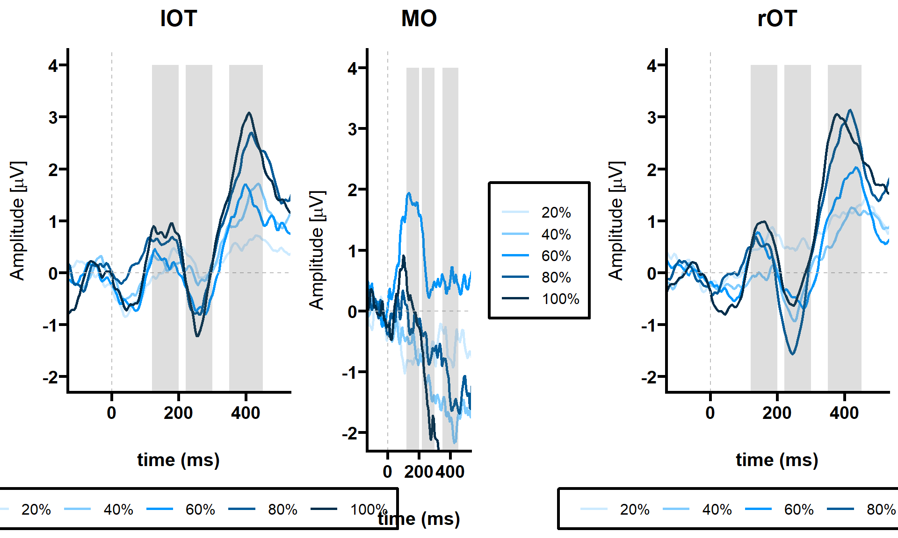
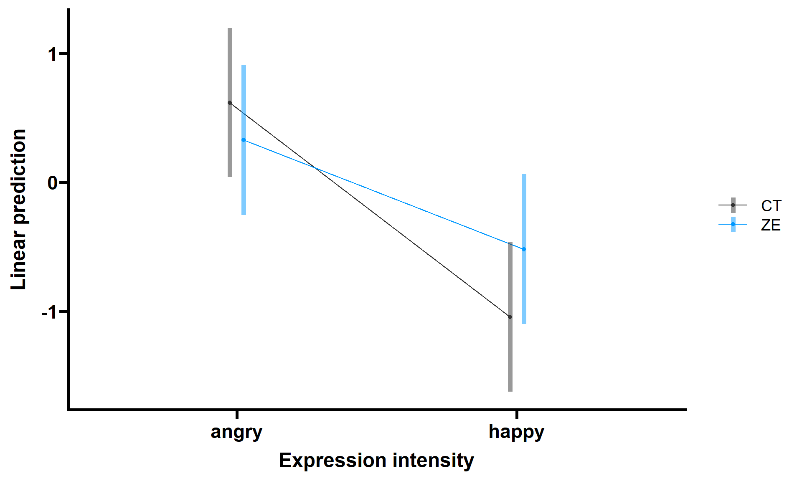

Select ROIs
Z-scores: Base response
We examined grand-averaged Z-scores separated for base and expression change response (based on Leleu et al., 2018) to identify at which channel the FFT power was largest to decide for ROIs (blue indicates largest Z-scores):
# Separate and order for base and expression change response
ga_z_score_base = ga_z_score_chan[, c(1, 2)]
ga_z_score_base = ga_z_score_base[with(ga_z_score_base, order(-base)), ]
# https://cran.r-project.org/web/packages/kableExtra/vignettes/awesome_table_in_html.html
# Mark channels with very large Z-scores for odd and base condition
ga_z_score_base %>%
mutate(base = cell_spec(base, "html", color = ifelse(base > 8, "blue", "black"))) %>%
kable(format = "html", escape = F) %>%
kable_styling(bootstrap_options = c("striped", "hover", "responsive"), position = "center",
font_size = 10, fixed_thead = TRUE)| Channel | base | |
|---|---|---|
| 40 | O1 | 14.5498488996922 |
| 39 | PO8 | 10.9111753728604 |
| 38 | PO7 | 9.75235924886213 |
| 35 | PO10 | 8.47310030195341 |
| 37 | PO4 | 7.96460287988708 |
| 33 | P8 | 7.77607174904427 |
| 34 | PO9 | 7.31170971925871 |
| 32 | P7 | 6.01731613878999 |
| 36 | PO3 | 5.83202962048895 |
| 29 | Pz | 4.94444951921128 |
| 31 | P4 | 4.67396043260194 |
| 14 | Cz | 4.32700149041584 |
| 16 | FC2 | 4.2425823046189 |
| 3 | AF3 | 4.11544420415133 |
| 15 | FC1 | 4.02638456189964 |
| 6 | F3 | 3.74722590863583 |
| 5 | Fz | 3.68311877974947 |
| 22 | A2 | 3.65736517521642 |
| 27 | TP7 | 3.62152107711637 |
| 4 | AF4 | 3.56282613578983 |
| 1 | Fp1 | 3.47280322058125 |
| 18 | C4 | 3.38771507468713 |
| 11 | FC6 | 3.25486465235288 |
| 28 | TP8 | 3.25233962401415 |
| 9 | F8 | 3.24849408374421 |
| 2 | Fp2 | 3.24443639448464 |
| 17 | C3 | 3.2023389288058 |
| 21 | A1 | 3.19285980092106 |
| 26 | CP6 | 3.18882475372415 |
| 7 | F4 | 3.1865575063221 |
| 10 | FC5 | 3.14932791721017 |
| 30 | P3 | 3.09166014913335 |
| 8 | F7 | 3.08197863874955 |
| 41 | O2 | 2.86020833000036 |
| 13 | FT8 | 2.756145875865 |
| 24 | CP2 | 2.66095211713574 |
| 12 | FT7 | 2.62130333374915 |
| 42 | Oz | 2.45828059470683 |
| 20 | T8 | 2.38915394701682 |
| 23 | CP1 | 1.85456187630452 |
| 19 | T7 | 1.80933517819327 |
| 25 | CP5 | 1.70576976600312 |
Z-scores: Expression change response
# Separate and order for base and expression change response
ga_z_score_expr = ga_z_score_chan[, c(1, 3)]
ga_z_score_expr = ga_z_score_expr[with(ga_z_score_expr, order(-expr)), ]
ga_z_score_expr %>%
mutate(expr = cell_spec(expr, "html", color = ifelse(expr > 4, "blue", "black"))) %>%
kable(format = "html", escape = F) %>%
kable_styling(bootstrap_options = c("striped", "hover", "responsive"), position = "center",
font_size = 10, fixed_thead = TRUE)| Channel | expr | |
|---|---|---|
| 40 | O1 | 7.0903242407897 |
| 39 | PO8 | 5.41508371720947 |
| 38 | PO7 | 4.40906235859895 |
| 35 | PO10 | 4.28855978564821 |
| 33 | P8 | 4.1554561313826 |
| 37 | PO4 | 3.8805388494761 |
| 34 | PO9 | 3.32236989898111 |
| 32 | P7 | 2.86821193384361 |
| 36 | PO3 | 2.77838417655512 |
| 31 | P4 | 2.65526306658362 |
| 29 | Pz | 2.41475360582353 |
| 3 | AF3 | 2.40846676974111 |
| 11 | FC6 | 2.38560436697616 |
| 16 | FC2 | 2.37580540869817 |
| 4 | AF4 | 2.36528992679043 |
| 18 | C4 | 2.30235424621935 |
| 14 | Cz | 2.27623655287456 |
| 8 | F7 | 2.21940867979595 |
| 2 | Fp2 | 2.21408646693438 |
| 5 | Fz | 2.20765821106777 |
| 22 | A2 | 2.16922626981036 |
| 1 | Fp1 | 2.15607183940131 |
| 9 | F8 | 2.1476069601974 |
| 41 | O2 | 2.13923194977793 |
| 15 | FC1 | 2.12437874644583 |
| 26 | CP6 | 2.09533816344302 |
| 10 | FC5 | 2.07888054448806 |
| 6 | F3 | 2.06303033937404 |
| 13 | FT8 | 2.02417810431995 |
| 7 | F4 | 1.97361657034786 |
| 28 | TP8 | 1.92572922976101 |
| 17 | C3 | 1.77996411861957 |
| 20 | T8 | 1.7440589125287 |
| 27 | TP7 | 1.68786191959973 |
| 24 | CP2 | 1.68367270646314 |
| 12 | FT7 | 1.63286601169727 |
| 23 | CP1 | 1.5622403255173 |
| 21 | A1 | 1.54994620996047 |
| 30 | P3 | 1.49383643687119 |
| 25 | CP5 | 1.31310070139428 |
| 19 | T7 | 1.17891572996085 |
| 42 | Oz | 0.985755004466565 |
Frequency-domain analysis
Signal-to-noise-ratio
SNR by emotion
# For the plot: #
# https://mran.microsoft.com/snapshot/2016-03-19/web/packages/ggspectra/vignettes/user-guide.html
## 20 % intensity
grad_snr_twent_hap = subset(grad_snr_twent, emotion == "happy")
snr_hap_twent = aggregate(SNR ~ freq + emotion, grad_snr_twent_hap, mean)
grad_snr_twent_ang = subset(grad_snr_twent, emotion == "angry")
snr_ang_twent = aggregate(SNR ~ freq + emotion, grad_snr_twent_ang, mean)
grad_twent_hap = ggplot() + # ggtitle('20%')+
geom_line(data = snr_ang_twent, aes(x = freq, y = SNR), color = "#000000", size = 1,
alpha = 0.8) + geom_line(data = snr_hap_twent, aes(x = freq, y = SNR), color = "#0098ff",
size = 1, alpha = 0.8) + scale_x_continuous(breaks = seq(0, 19, 6), limits = c(0.5,
19), expand = c(0, 0), guide = guide_prism_minor()) + scale_y_continuous(limits = c(0.8,
3.5), guide = guide_prism_minor()) + xlab("Frequency (Hz)") + expand_limits(x = 0,
y = 0) + theme_prism(base_size = 20) + theme(plot.title = element_text(size = 10,
face = "bold"), panel.background = element_rect(fill = "transparent"), plot.background = element_rect(fill = "transparent",
color = NA))
# axis.title.x = element_blank())
grad_twent_hap
# Save without white background
ggsave("./figures/SNR_grad_twent_happy_angry.png", bg = "transparent", dpi = 300)
## 100% intensity
grad_snr_oneh_hap = subset(grad_snr_oneh, emotion == "happy")
snr_hap_oneh = aggregate(SNR ~ freq + emotion, grad_snr_oneh_hap, mean)
grad_snr_oneh_ang = subset(grad_snr_oneh, emotion == "angry")
snr_ang_oneh = aggregate(SNR ~ freq + emotion, grad_snr_oneh_ang, mean)
grad_oneh_hap = ggplot() + # ggtitle('20%')+
geom_line(data = snr_ang_oneh, aes(x = freq, y = SNR), color = "#000000", size = 1,
alpha = 0.8) + geom_line(data = snr_hap_oneh, aes(x = freq, y = SNR), color = "#0098ff",
size = 1, alpha = 0.8) + scale_x_continuous(breaks = seq(0, 19, 6), limits = c(0.5,
19), expand = c(0, 0), guide = guide_prism_minor()) + scale_y_continuous(limits = c(0.8,
3.5), guide = guide_prism_minor()) + xlab("Frequency (Hz)") + expand_limits(x = 0,
y = 0) + theme_prism(base_size = 20) + theme(plot.title = element_text(size = 10,
face = "bold"), panel.background = element_rect(fill = "transparent"), plot.background = element_rect(fill = "transparent",
color = NA))
# axis.title.x = element_blank())
grad_oneh_hap# Save without white background
ggsave("./figures/SNR_grad_oneh_happy_angry.png", bg = "transparent", dpi = 300)lim_1 = 0.8
lim_2 = 1.5
# For the plot: #
# https://mran.microsoft.com/snapshot/2016-03-19/web/packages/ggspectra/vignettes/user-guide.html
## 20 % intensity
grad_snr_twent_hap = subset(grad_snr_twent, emotion == "happy")
snr_hap_twent = aggregate(SNR ~ freq + emotion, grad_snr_twent_hap, mean)
grad_snr_twent_ang = subset(grad_snr_twent, emotion == "angry")
snr_ang_twent = aggregate(SNR ~ freq + emotion, grad_snr_twent_ang, mean)
grad_twent_hap = ggplot() + # ggtitle('100%')+
geom_line(data = grad_snr_twent_ang, aes(x = freq, y = SNR), color = "#000000", size = 1.5,
alpha = 0.8) + geom_line(data = snr_hap_twent, aes(x = freq, y = SNR), color = "#0098ff",
size = 1.5, alpha = 0.8) + scale_x_continuous(breaks = seq(0, 8, 1), limits = c(0.9,
5), expand = c(0, 0), guide = guide_prism_minor()) + scale_y_continuous(limits = c(lim_1,
lim_2), guide = guide_prism_minor()) + xlab("Frequency (Hz)") + ylab("") + expand_limits(x = 0,
y = 0) + theme_prism(base_size = 30) + theme(plot.title = element_text(size = 10,
face = "bold"), panel.background = element_rect(fill = "transparent"), plot.background = element_rect(fill = "transparent",
color = NA))
# axis.title.x = element_blank())
grad_twent_hap# Save without white background
ggsave("./figures/SNR_grad_twent_happy_angry_zoom.png", bg = "transparent", dpi = 300)
## 100% intensity
grad_snr_oneh_hap = subset(grad_snr_oneh, emotion == "happy")
snr_hap_oneh = aggregate(SNR ~ freq + emotion, grad_snr_oneh_hap, mean)
grad_snr_oneh_ang = subset(grad_snr_oneh, emotion == "angry")
snr_ang_oneh = aggregate(SNR ~ freq + emotion, grad_snr_oneh_ang, mean)
grad_oneh_hap = ggplot() + # ggtitle('100%')+
geom_line(data = grad_snr_oneh_ang, aes(x = freq, y = SNR), color = "#000000", size = 1.5,
alpha = 0.8) + geom_line(data = snr_hap_oneh, aes(x = freq, y = SNR), color = "#0098ff",
size = 1.5, alpha = 0.8) + scale_x_continuous(breaks = seq(0, 8, 1), limits = c(0.9,
5), expand = c(0, 0), guide = guide_prism_minor()) + scale_y_continuous(limits = c(lim_1,
lim_2), guide = guide_prism_minor()) + xlab("Frequency (Hz)") + ylab("") + expand_limits(x = 0,
y = 0) + theme_prism(base_size = 30) + theme(plot.title = element_text(size = 10,
face = "bold"), panel.background = element_rect(fill = "transparent"), plot.background = element_rect(fill = "transparent",
color = NA))
# axis.title.x = element_blank())
grad_oneh_hap# Save without white background
ggsave("./figures/SNR_grad_oneh_happy_angry_zoom.png", bg = "transparent", dpi = 300)BCA
Base response
Visualization
# Create data summary
grad_base_plot_prep = data_summary(grad_base_plot, varname = "bca", groupnames = c("ROI",
"emotion", "intens"))
# grad_base_plot_prep$bca = abs(grad_base_plot_prep$bca)
# Plot expr response differences for emotions
expr_plot = ggplot(grad_base_plot_prep, aes(x = intens, y = bca, fill = emotion)) +
geom_errorbar(aes(ymin = bca, ymax = bca + se), width = 0.2, position = position_dodge(0.9)) +
geom_bar(stat = "identity", color = "black", position = position_dodge()) + facet_wrap(~ROI) +
labs(x = "", y = "BCA [uV]") + scale_fill_manual(values = c("#0098ff", "#333333")) +
scale_y_continuous(limits = c(-0.1, 1.5), guide = guide_prism_minor()) + theme_prism(base_size = 10) +
theme(legend.position = "bottom")
expr_plot
ggsave("./figures/grad_base_emotion.png", bg = "transparent", dpi = 300)LMM
# https://benwhalley.github.io/just-enough-r/extending-traditional-rm-anova.html
# Convert ID, group & emotion into factor variables
grad_base_lmm = grad_base_stats %>%
convert_as_factor(ID)
grad_base_lmm$emotion = factor(grad_base_lmm$emotion)
grad_base_lmm$group = factor(grad_base_lmm$group)
grad_base_lmm$intens = factor(grad_base_lmm$intens, levels = c("20%", "40%", "60%",
"80%", "100%"))
grad_base_lmm$ROI = factor(grad_base_lmm$ROI)
# Define effect treatment contrasts
contrasts(grad_base_lmm$emotion) = contr.treatment(2)
contrasts(grad_base_lmm$group) = contr.treatment(2)
contrasts(grad_base_lmm$ROI) = contr.treatment(3, base = 2)
contrasts(grad_base_lmm$intens) = contr.treatment(5)
# Build model
mod_base_lmer = lmer(bca ~ emotion * intens * group * ROI + (1 | ID), data = grad_base_lmm,
control = lmerControl(calc.derivs = FALSE))
# Calculate and print ANOVA
mod_base_lmer_res = anova_stats(mod_base_lmer)
mod_base_lmer_res = subset(mod_base_lmer_res, select = -c(term, sumsq, meansq, df,
etasq, omegasq, partial.omegasq, epsilonsq, cohens.f, power))
mod_base_lmer_res = head(mod_base_lmer_res, -1)
knitr::kable(mod_base_lmer_res, format = "markdown")| NumDF | DenDF | statistic | p.value | partial.etasq | |
|---|---|---|---|---|---|
| emotion | 1 | 1218 | 1.83 | 0.18 | 0.00 |
| intens | 4 | 1218 | 2.74 | 0.03 | 0.01 |
| group | 1 | 43 | 1.96 | 0.17 | 0.00 |
| ROI | 2 | 1218 | 7.94 | 0.00 | 0.01 |
| emotion:intens | 4 | 1218 | 0.50 | 0.73 | 0.00 |
| emotion:group | 1 | 1218 | 2.31 | 0.13 | 0.00 |
| intens:group | 4 | 1218 | 0.86 | 0.49 | 0.00 |
| emotion:ROI | 2 | 1218 | 0.43 | 0.65 | 0.00 |
| intens:ROI | 8 | 1218 | 0.28 | 0.97 | 0.00 |
| group:ROI | 2 | 1218 | 3.47 | 0.03 | 0.01 |
| emotion:intens:group | 4 | 1218 | 1.27 | 0.28 | 0.00 |
| emotion:intens:ROI | 8 | 1218 | 0.44 | 0.90 | 0.00 |
| emotion:group:ROI | 2 | 1218 | 0.11 | 0.89 | 0.00 |
| intens:group:ROI | 8 | 1218 | 0.26 | 0.98 | 0.00 |
| emotion:intens:group:ROI | 8 | 1218 | 0.25 | 0.98 | 0.00 |
# Post-hoc tests
m.roi = emmeans(mod_base_lmer, "ROI")
ROI = contrast(m.roi, "tukey") %>%
broom::tidy() %>%
head(6)
knitr::kable(ROI)| term | contrast | null.value | estimate | std.error | df | statistic | adj.p.value |
|---|---|---|---|---|---|---|---|
| ROI | lOT - MO | 0 | 0.02 | 0.03 | 1218 | 0.64 | 0.80 |
| ROI | lOT - rOT | 0 | -0.10 | 0.03 | 1218 | -3.08 | 0.01 |
| ROI | MO - rOT | 0 | -0.12 | 0.03 | 1218 | -3.73 | 0.00 |
m.intens = emmeans(mod_base_lmer, "intens")
poly_intens = contrast(m.intens, "poly") %>%
broom::tidy() %>%
head(3)
knitr::kable(poly_intens, format = "markdown")| term | contrast | null.value | estimate | std.error | df | statistic | p.value |
|---|---|---|---|---|---|---|---|
| intens | linear | 0 | -0.17 | 0.09 | 1218 | -1.8 | 0.07 |
| intens | quadratic | 0 | -0.14 | 0.11 | 1218 | -1.2 | 0.21 |
| intens | cubic | 0 | -0.25 | 0.09 | 1218 | -2.7 | 0.01 |
# Calculate and print post-hoc tests
emm_s.t = emmeans(mod_base_lmer, pairwise ~ group | ROI)
knitr::kable(emm_s.t$contrasts, format = "markdown")| contrast | ROI | estimate | SE | df | t.ratio | p.value |
|---|---|---|---|---|---|---|
| CT - ZE | lOT | -0.23 | 0.11 | 53 | -2.0 | 0.05 |
| CT - ZE | MO | -0.06 | 0.11 | 53 | -0.5 | 0.62 |
| CT - ZE | rOT | -0.16 | 0.11 | 53 | -1.4 | 0.16 |
Expression change response
Visualization
# Create data summary
grad_expr_plot_prep = data_summary(grad_expr_plot, varname = "bca", groupnames = c("ROI",
"emotion", "intens"))
# grad_expr_plot_prep$bca = abs(grad_expr_plot_prep$bca)
# Plot expr response differences for emotions
expr_plot = ggplot(grad_expr_plot_prep, aes(x = intens, y = bca, fill = emotion)) +
geom_errorbar(aes(ymin = bca, ymax = bca + se), width = 0.2, position = position_dodge(0.9)) +
geom_bar(stat = "identity", color = "black", position = position_dodge()) + facet_wrap(~ROI) +
labs(x = "", y = "BCA [uV]") + scale_fill_manual(values = c("#0098ff", "#333333")) +
scale_y_continuous(limits = c(-0.1, 1.5), guide = guide_prism_minor()) + theme_prism(base_size = 10) +
theme(legend.position = "bottom")
expr_plot
ggsave("./figures/grad_expr_emotion.png", bg = "transparent", dpi = 300)# Create data summary
grad_expr_plot_prep = data_summary(grad_expr_plot, varname = "bca", groupnames = c("ROI",
"emotion", "intens", "group"))
# grad_expr_plot_prep$bca = abs(grad_expr_plot_prep$bca)
# Plot expr response differences for emotions
expr_plot = ggplot(grad_expr_plot_prep, aes(x = intens, y = bca, fill = group)) +
geom_errorbar(aes(ymin = bca, ymax = bca + se), width = 0.2, position = position_dodge(0.9)) +
geom_bar(stat = "identity", color = "black", position = position_dodge()) + facet_wrap(~emotion +
ROI) + labs(x = "", y = "BCA [uV]") + scale_fill_manual(values = c("gray53",
"#D97909")) + scale_y_continuous(limits = c(-1, 1.5), guide = guide_prism_minor()) +
theme_prism(base_size = 10) + theme(legend.position = "bottom")
expr_plot
ggsave("./figures/grad_expr_groups.png", bg = "transparent", dpi = 300)LMM
# https://benwhalley.github.io/just-enough-r/extending-traditional-rm-anova.html
# Convert ID, group & emotion into factor variables
grad_expr_lmm = grad_expr_stats %>%
convert_as_factor(ID)
grad_expr_lmm$emotion = factor(grad_expr_lmm$emotion)
grad_expr_lmm$group = factor(grad_expr_lmm$group)
grad_expr_lmm$intens = factor(grad_expr_lmm$intens, levels = c("20%", "40%", "60%",
"80%", "100%"))
grad_expr_lmm$ROI = factor(grad_expr_lmm$ROI)
# Define effect treatment contrasts
contrasts(grad_expr_lmm$emotion) = contr.treatment(2)
contrasts(grad_expr_lmm$group) = contr.treatment(2)
contrasts(grad_expr_lmm$ROI) = contr.treatment(3, base = 2)
contrasts(grad_expr_lmm$intens) = contr.treatment(5)
# Build model
mod_expr_lmer = lmer(bca ~ emotion * intens * group * ROI + (1 | ID), data = grad_expr_lmm,
control = lmerControl(calc.derivs = FALSE))
# Calculate and print ANOVA
mod_expr_lmer_res = anova_stats(mod_expr_lmer)
mod_expr_lmer_res = subset(mod_expr_lmer_res, select = -c(term, sumsq, meansq, df,
etasq, omegasq, partial.omegasq, epsilonsq, cohens.f, power))
mod_expr_lmer_res = head(mod_expr_lmer_res, -1)
knitr::kable(mod_expr_lmer_res, format = "markdown")| NumDF | DenDF | statistic | p.value | partial.etasq | |
|---|---|---|---|---|---|
| emotion | 1 | 1218 | 0.04 | 0.85 | 0.00 |
| intens | 4 | 1218 | 5.29 | 0.00 | 0.02 |
| group | 1 | 57 | 0.05 | 0.82 | 0.00 |
| ROI | 2 | 1218 | 6.74 | 0.00 | 0.01 |
| emotion:intens | 4 | 1218 | 2.58 | 0.04 | 0.01 |
| emotion:group | 1 | 1218 | 1.29 | 0.26 | 0.00 |
| intens:group | 4 | 1218 | 2.28 | 0.06 | 0.01 |
| emotion:ROI | 2 | 1218 | 1.43 | 0.24 | 0.00 |
| intens:ROI | 8 | 1218 | 1.19 | 0.30 | 0.01 |
| group:ROI | 2 | 1218 | 0.37 | 0.69 | 0.00 |
| emotion:intens:group | 4 | 1218 | 1.00 | 0.41 | 0.00 |
| emotion:intens:ROI | 8 | 1218 | 1.01 | 0.43 | 0.01 |
| emotion:group:ROI | 2 | 1218 | 0.25 | 0.78 | 0.00 |
| intens:group:ROI | 8 | 1218 | 1.38 | 0.20 | 0.01 |
| emotion:intens:group:ROI | 8 | 1218 | 0.57 | 0.81 | 0.00 |
# Calculate and show post-hoc tests
m.intens = emmeans(mod_expr_lmer, "intens")
main_intens = contrast(m.intens, "tukey") %>%
broom::tidy() %>%
head(6)
knitr::kable(main_intens, format = "markdown")| term | contrast | null.value | estimate | std.error | df | statistic | adj.p.value |
|---|---|---|---|---|---|---|---|
| intens | 20% - 40% | 0 | -0.04 | 0.1 | 1218 | -0.38 | 1.00 |
| intens | 20% - 60% | 0 | -0.18 | 0.1 | 1218 | -1.94 | 0.30 |
| intens | 20% - 80% | 0 | -0.24 | 0.1 | 1218 | -2.55 | 0.08 |
| intens | 20% - 100% | 0 | -0.42 | 0.1 | 1218 | -4.38 | 0.00 |
| intens | 40% - 60% | 0 | -0.15 | 0.1 | 1218 | -1.56 | 0.53 |
| intens | 40% - 80% | 0 | -0.21 | 0.1 | 1218 | -2.17 | 0.19 |
poly_intens = contrast(m.intens, "poly") %>%
broom::tidy() %>%
head(3)
knitr::kable(poly_intens, format = "markdown")| term | contrast | null.value | estimate | std.error | df | statistic | p.value |
|---|---|---|---|---|---|---|---|
| intens | linear | 0 | 1.04 | 0.21 | 1218 | 4.89 | 0.00 |
| intens | quadratic | 0 | 0.19 | 0.25 | 1218 | 0.74 | 0.46 |
| intens | cubic | 0 | 0.00 | 0.21 | 1218 | 0.02 | 0.98 |
m.roi = emmeans(mod_expr_lmer, "ROI")
ROI = contrast(m.roi, "tukey") %>%
broom::tidy() %>%
head(6)
knitr::kable(ROI, format = "markdown")| term | contrast | null.value | estimate | std.error | df | statistic | adj.p.value |
|---|---|---|---|---|---|---|---|
| ROI | lOT - MO | 0 | 0.12 | 0.07 | 1218 | 1.6 | 0.25 |
| ROI | lOT - rOT | 0 | -0.15 | 0.07 | 1218 | -2.1 | 0.10 |
| ROI | MO - rOT | 0 | -0.27 | 0.07 | 1218 | -3.7 | 0.00 |
# https://cran.r-project.org/web/packages/emmeans/vignettes/interactions.html
# Examine interaction
int_emo_int = emmip(mod_expr_lmer, emotion ~ intens, CIs = TRUE) + scale_color_manual(values = c("#0098ff",
"#333333")) + theme_prism() + labs(x = "Expression intensity") + scale_size_manual(values = c(1,
3))
int_emo_int
# Save without white background
ggsave("./figures/int_emo_int.png", bg = "transparent", dpi = 300)
# Calculate and print post-hoc tests
emm_s.t = emmeans(mod_expr_lmer, pairwise ~ emotion | intens)
knitr::kable(emm_s.t$contrasts, format = "markdown")| contrast | intens | estimate | SE | df | t.ratio | p.value |
|---|---|---|---|---|---|---|
| happy - angry | 20% | -0.08 | 0.13 | 1218 | -0.58 | 0.56 |
| happy - angry | 40% | 0.00 | 0.13 | 1218 | 0.01 | 0.99 |
| happy - angry | 60% | 0.09 | 0.13 | 1218 | 0.68 | 0.50 |
| happy - angry | 80% | 0.26 | 0.13 | 1218 | 1.93 | 0.05 |
| happy - angry | 100% | -0.34 | 0.13 | 1218 | -2.51 | 0.01 |
BCA with PDI
Expression change response
# https://benwhalley.github.io/just-enough-r/extending-traditional-rm-anova.html
# Convert ID, group & emotion into factor variables
grad_expr_lmm_pdi = grad_expr_stats_pdi %>%
convert_as_factor(ID)
grad_expr_lmm_pdi$emotion = factor(grad_expr_lmm_pdi$emotion)
grad_expr_lmm_pdi$group = factor(grad_expr_lmm_pdi$group)
grad_expr_lmm_pdi$intens = factor(grad_expr_lmm_pdi$intens, levels = c("20%", "40%",
"60%", "80%", "100%"))
grad_expr_lmm_pdi$ROI = factor(grad_expr_lmm_pdi$ROI)
# Define effect treatment contrasts
contrasts(grad_expr_lmm_pdi$emotion) = contr.treatment(2)
contrasts(grad_expr_lmm_pdi$group) = contr.treatment(2)
contrasts(grad_expr_lmm_pdi$ROI) = contr.treatment(3, base = 2)
contrasts(grad_expr_lmm_pdi$intens) = contr.treatment(5)
# Build model
mod_expr_lmer = lmer(bca ~ emotion * intens * group * ROI + (1 | ID), data = grad_expr_lmm_pdi,
control = lmerControl(calc.derivs = FALSE))
# Calculate and print ANOVA
mod_expr_lmer_res = anova_stats(mod_expr_lmer)
mod_expr_lmer_res = subset(mod_expr_lmer_res, select = -c(term, sumsq, meansq, df,
etasq, omegasq, partial.omegasq, epsilonsq, cohens.f, power))
mod_expr_lmer_res = head(mod_expr_lmer_res, -1)
knitr::kable(mod_expr_lmer_res, format = "markdown")| NumDF | DenDF | statistic | p.value | partial.etasq | |
|---|---|---|---|---|---|
| emotion | 1 | 1218 | 0.44 | 0.51 | 0.00 |
| intens | 4 | 1218 | 2.28 | 0.06 | 0.01 |
| group | 1 | 65 | 0.16 | 0.69 | 0.00 |
| ROI | 2 | 1218 | 2.41 | 0.09 | 0.00 |
| emotion:intens | 4 | 1218 | 0.91 | 0.46 | 0.00 |
| emotion:group | 1 | 1218 | 0.16 | 0.69 | 0.00 |
| intens:group | 4 | 1218 | 0.81 | 0.52 | 0.00 |
| emotion:ROI | 2 | 1218 | 1.62 | 0.20 | 0.00 |
| intens:ROI | 8 | 1218 | 0.91 | 0.51 | 0.01 |
| group:ROI | 2 | 1218 | 0.53 | 0.59 | 0.00 |
| emotion:intens:group | 4 | 1218 | 0.22 | 0.92 | 0.00 |
| emotion:intens:ROI | 8 | 1218 | 1.15 | 0.32 | 0.01 |
| emotion:group:ROI | 2 | 1218 | 0.74 | 0.48 | 0.00 |
| intens:group:ROI | 8 | 1218 | 2.76 | 0.00 | 0.02 |
| emotion:intens:group:ROI | 8 | 1218 | 0.45 | 0.89 | 0.00 |
# Calculate and show post-hoc tests
m.intens = emmeans(mod_expr_lmer, "intens")
main_intens = contrast(m.intens, "tukey") %>%
broom::tidy() %>%
head(6)
knitr::kable(main_intens, format = "markdown")| term | contrast | null.value | estimate | std.error | df | statistic | adj.p.value |
|---|---|---|---|---|---|---|---|
| intens | 20% - 40% | 0 | 0.04 | 0.02 | 1218 | 2.11 | 0.21 |
| intens | 20% - 60% | 0 | 0.04 | 0.02 | 1218 | 2.04 | 0.25 |
| intens | 20% - 80% | 0 | 0.04 | 0.02 | 1218 | 2.37 | 0.12 |
| intens | 20% - 100% | 0 | 0.04 | 0.02 | 1218 | 2.12 | 0.21 |
| intens | 40% - 60% | 0 | 0.00 | 0.02 | 1218 | -0.08 | 1.00 |
| intens | 40% - 80% | 0 | 0.00 | 0.02 | 1218 | 0.26 | 1.00 |
poly_intens = contrast(m.intens, "poly") %>%
broom::tidy() %>%
head(3)
knitr::kable(poly_intens, format = "markdown")| term | contrast | null.value | estimate | std.error | df | statistic | p.value |
|---|---|---|---|---|---|---|---|
| intens | linear | 0 | -0.08 | 0.04 | 1218 | -2.01 | 0.04 |
| intens | quadratic | 0 | 0.08 | 0.05 | 1218 | 1.63 | 0.10 |
| intens | cubic | 0 | -0.03 | 0.04 | 1218 | -0.72 | 0.47 |
# https://cran.r-project.org/web/packages/emmeans/vignettes/interactions.html
# Examine interaction
int_emo_int = emmip(mod_expr_lmer, group ~ intens | ROI, CIs = TRUE) + scale_color_manual(values = c("#333333",
"#D97909")) + theme_prism() + labs(x = "Expression intensity") + scale_size_manual(values = c(1,
3))
int_emo_int
# Save without white background
ggsave("./figures/int_group_roi.png", bg = "transparent", dpi = 300)
# Calculate and print post-hoc tests
emm_s.t = emmeans(mod_expr_lmer, pairwise ~ group | intens | ROI)
knitr::kable(emm_s.t$contrasts, format = "markdown")| contrast | intens | ROI | estimate | SE | df | t.ratio | p.value |
|---|---|---|---|---|---|---|---|
| CT - ZE | 20% | lOT | -0.13 | 0.05 | 1188 | -2.77 | 0.01 |
| CT - ZE | 40% | lOT | 0.01 | 0.05 | 1188 | 0.15 | 0.88 |
| CT - ZE | 60% | lOT | 0.03 | 0.05 | 1188 | 0.59 | 0.55 |
| CT - ZE | 80% | lOT | -0.01 | 0.05 | 1188 | -0.17 | 0.87 |
| CT - ZE | 100% | lOT | 0.01 | 0.05 | 1188 | 0.14 | 0.89 |
| CT - ZE | 20% | MO | 0.12 | 0.05 | 1188 | 2.74 | 0.01 |
| CT - ZE | 40% | MO | -0.14 | 0.05 | 1188 | -3.08 | 0.00 |
| CT - ZE | 60% | MO | 0.01 | 0.05 | 1188 | 0.22 | 0.82 |
| CT - ZE | 80% | MO | -0.01 | 0.05 | 1188 | -0.19 | 0.85 |
| CT - ZE | 100% | MO | 0.02 | 0.05 | 1188 | 0.54 | 0.59 |
| CT - ZE | 20% | rOT | 0.00 | 0.05 | 1188 | 0.05 | 0.96 |
| CT - ZE | 40% | rOT | 0.02 | 0.05 | 1188 | 0.39 | 0.70 |
| CT - ZE | 60% | rOT | 0.01 | 0.05 | 1188 | 0.30 | 0.77 |
| CT - ZE | 80% | rOT | -0.01 | 0.05 | 1188 | -0.18 | 0.86 |
| CT - ZE | 100% | rOT | 0.02 | 0.05 | 1188 | 0.52 | 0.60 |
emmip(mod_expr_lmer, ROI ~ intens, CIs = TRUE) + scale_color_manual(values = c("#F87F75",
"#69E070", "#75F8FF")) + theme_prism() + labs(x = "Expression intensity") + scale_size_manual(values = c(1,
3))Separated by group: ZE
# https://benwhalley.github.io/just-enough-r/extending-traditional-rm-anova.html
# Convert ID, group & emotion into factor variables
grad_expr_lmm_pdi = grad_expr_stats_pdi %>%
convert_as_factor(ID)
grad_expr_lmm_pdi$emotion = factor(grad_expr_lmm_pdi$emotion)
grad_expr_lmm_pdi$group = factor(grad_expr_lmm_pdi$group)
grad_expr_lmm_pdi$intens = factor(grad_expr_lmm_pdi$intens, levels = c("20%", "40%",
"60%", "80%", "100%"))
grad_expr_lmm_pdi$ROI = factor(grad_expr_lmm_pdi$ROI)
# Define effect treatment contrasts
contrasts(grad_expr_lmm_pdi$emotion) = contr.treatment(2)
contrasts(grad_expr_lmm_pdi$group) = contr.treatment(2)
contrasts(grad_expr_lmm_pdi$ROI) = contr.treatment(3, base = 2)
contrasts(grad_expr_lmm_pdi$intens) = contr.treatment(5)
grad_expr_lmm_pdi_ZE = subset(grad_expr_lmm_pdi, group == "ZE")
# Build model
mod_expr_lmer = lmer(bca ~ emotion * intens * ROI + (1 | ID), data = grad_expr_lmm_pdi_ZE,
control = lmerControl(calc.derivs = FALSE))
# Calculate and print ANOVA
mod_expr_lmer_res = anova_stats(mod_expr_lmer)
mod_expr_lmer_res = subset(mod_expr_lmer_res, select = -c(term, sumsq, meansq, df,
etasq, omegasq, partial.omegasq, epsilonsq, cohens.f, power))
mod_expr_lmer_res = head(mod_expr_lmer_res, -1)
knitr::kable(mod_expr_lmer_res, format = "markdown")| NumDF | DenDF | statistic | p.value | partial.etasq | |
|---|---|---|---|---|---|
| emotion | 1 | 609 | 0.21 | 0.65 | 0.00 |
| intens | 4 | 609 | 1.32 | 0.26 | 0.01 |
| ROI | 2 | 609 | 1.44 | 0.24 | 0.00 |
| emotion:intens | 4 | 609 | 0.44 | 0.78 | 0.00 |
| emotion:ROI | 2 | 609 | 2.23 | 0.11 | 0.01 |
| intens:ROI | 8 | 609 | 3.36 | 0.00 | 0.04 |
| emotion:intens:ROI | 8 | 609 | 1.24 | 0.27 | 0.02 |
# Calculate and print post-hoc tests
emm_s.t = emmeans(mod_expr_lmer, pairwise ~ intens | ROI)
knitr::kable(emm_s.t$contrasts, format = "markdown")| contrast | ROI | estimate | SE | df | t.ratio | p.value |
|---|---|---|---|---|---|---|
| 20% - 40% | lOT | 0.17 | 0.04 | 609 | 3.72 | 0.00 |
| 20% - 60% | lOT | 0.16 | 0.04 | 609 | 3.49 | 0.00 |
| 20% - 80% | lOT | 0.14 | 0.04 | 609 | 3.23 | 0.01 |
| 20% - 100% | lOT | 0.15 | 0.04 | 609 | 3.31 | 0.01 |
| 40% - 60% | lOT | -0.01 | 0.04 | 609 | -0.23 | 1.00 |
| 40% - 80% | lOT | -0.02 | 0.04 | 609 | -0.49 | 0.99 |
| 40% - 100% | lOT | -0.02 | 0.04 | 609 | -0.41 | 0.99 |
| 60% - 80% | lOT | -0.01 | 0.04 | 609 | -0.26 | 1.00 |
| 60% - 100% | lOT | -0.01 | 0.04 | 609 | -0.18 | 1.00 |
| 80% - 100% | lOT | 0.00 | 0.04 | 609 | 0.08 | 1.00 |
| 20% - 40% | MO | -0.15 | 0.04 | 609 | -3.29 | 0.01 |
| 20% - 60% | MO | -0.06 | 0.04 | 609 | -1.43 | 0.61 |
| 20% - 80% | MO | -0.06 | 0.04 | 609 | -1.35 | 0.66 |
| 20% - 100% | MO | -0.04 | 0.04 | 609 | -1.01 | 0.85 |
| 40% - 60% | MO | 0.08 | 0.04 | 609 | 1.86 | 0.34 |
| 40% - 80% | MO | 0.09 | 0.04 | 609 | 1.94 | 0.30 |
| 40% - 100% | MO | 0.10 | 0.04 | 609 | 2.28 | 0.15 |
| 60% - 80% | MO | 0.00 | 0.04 | 609 | 0.08 | 1.00 |
| 60% - 100% | MO | 0.02 | 0.04 | 609 | 0.42 | 0.99 |
| 80% - 100% | MO | 0.01 | 0.04 | 609 | 0.34 | 1.00 |
| 20% - 40% | rOT | 0.04 | 0.04 | 609 | 0.89 | 0.90 |
| 20% - 60% | rOT | 0.05 | 0.04 | 609 | 1.03 | 0.84 |
| 20% - 80% | rOT | 0.03 | 0.04 | 609 | 0.77 | 0.94 |
| 20% - 100% | rOT | 0.04 | 0.04 | 609 | 0.93 | 0.88 |
| 40% - 60% | rOT | 0.01 | 0.04 | 609 | 0.14 | 1.00 |
| 40% - 80% | rOT | -0.01 | 0.04 | 609 | -0.11 | 1.00 |
| 40% - 100% | rOT | 0.00 | 0.04 | 609 | 0.05 | 1.00 |
| 60% - 80% | rOT | -0.01 | 0.04 | 609 | -0.25 | 1.00 |
| 60% - 100% | rOT | 0.00 | 0.04 | 609 | -0.09 | 1.00 |
| 80% - 100% | rOT | 0.01 | 0.04 | 609 | 0.16 | 1.00 |
emmip(mod_expr_lmer, ROI ~ intens, CIs = TRUE) + scale_color_manual(values = c("#F87F75",
"#69E070", "#75F8FF")) + theme_prism() + labs(x = "Expression intensity") + scale_size_manual(values = c(1,
3))
grad_expr_lmm_ZE = subset(grad_expr_lmm, group == "ZE")
# Build model
mod_expr_lmer = lmer(bca ~ emotion * intens * ROI + (1 | ID), data = grad_expr_lmm_ZE,
control = lmerControl(calc.derivs = FALSE))
# Calculate and print ANOVA
mod_expr_lmer_res = anova_stats(mod_expr_lmer)
mod_expr_lmer_res = subset(mod_expr_lmer_res, select = -c(term, sumsq, meansq, df,
etasq, omegasq, partial.omegasq, epsilonsq, cohens.f, power))
mod_expr_lmer_res = head(mod_expr_lmer_res, -1)
knitr::kable(mod_expr_lmer_res, format = "markdown")| NumDF | DenDF | statistic | p.value | partial.etasq | |
|---|---|---|---|---|---|
| emotion | 1 | 609 | 0.35 | 0.56 | 0.00 |
| intens | 4 | 609 | 1.82 | 0.12 | 0.01 |
| ROI | 2 | 609 | 2.24 | 0.11 | 0.01 |
| emotion:intens | 4 | 609 | 0.90 | 0.46 | 0.01 |
| emotion:ROI | 2 | 609 | 1.60 | 0.20 | 0.00 |
| intens:ROI | 8 | 609 | 2.09 | 0.04 | 0.03 |
| emotion:intens:ROI | 8 | 609 | 0.79 | 0.61 | 0.01 |
emmip(mod_expr_lmer, ROI ~ intens, CIs = TRUE) + scale_color_manual(values = c("#F87F75",
"#69E070", "#75F8FF")) + theme_prism() + labs(x = "Expression intensity") + scale_size_manual(values = c(1,
3))int_emo_int
Separated by group: CT
# https://benwhalley.github.io/just-enough-r/extending-traditional-rm-anova.html
# Convert ID, group & emotion into factor variables
grad_expr_lmm_pdi = grad_expr_stats_pdi %>%
convert_as_factor(ID)
grad_expr_lmm_pdi$emotion = factor(grad_expr_lmm_pdi$emotion)
grad_expr_lmm_pdi$group = factor(grad_expr_lmm_pdi$group)
grad_expr_lmm_pdi$intens = factor(grad_expr_lmm_pdi$intens, levels = c("20%", "40%",
"60%", "80%", "100%"))
grad_expr_lmm_pdi$ROI = factor(grad_expr_lmm_pdi$ROI)
# Define effect treatment contrasts
contrasts(grad_expr_lmm_pdi$emotion) = contr.treatment(2)
contrasts(grad_expr_lmm_pdi$group) = contr.treatment(2)
contrasts(grad_expr_lmm_pdi$ROI) = contr.treatment(3, base = 2)
contrasts(grad_expr_lmm_pdi$intens) = contr.treatment(5)
grad_expr_lmm_pdi_CT = subset(grad_expr_lmm_pdi, group == "CT")
# Build model
mod_expr_lmer = lmer(bca ~ emotion * intens * ROI + (1 | ID), data = grad_expr_lmm_pdi_CT,
control = lmerControl(calc.derivs = FALSE))
# Calculate and print ANOVA
mod_expr_lmer_res = anova_stats(mod_expr_lmer)
mod_expr_lmer_res = subset(mod_expr_lmer_res, select = -c(term, sumsq, meansq, df,
etasq, omegasq, partial.omegasq, epsilonsq, cohens.f, power))
mod_expr_lmer_res = head(mod_expr_lmer_res, -1)
knitr::kable(mod_expr_lmer_res, format = "markdown")| NumDF | DenDF | statistic | p.value | partial.etasq | |
|---|---|---|---|---|---|
| emotion | 1 | 630 | 0.99 | 0.32 | 0.00 |
| intens | 4 | 630 | 1.36 | 0.25 | 0.01 |
| ROI | 2 | 630 | 1.51 | 0.22 | 0.00 |
| emotion:intens | 4 | 630 | 0.69 | 0.60 | 0.00 |
| emotion:ROI | 2 | 630 | 0.20 | 0.82 | 0.00 |
| intens:ROI | 8 | 630 | 0.39 | 0.93 | 0.00 |
| emotion:intens:ROI | 8 | 630 | 0.39 | 0.93 | 0.00 |
Time-domain analyses
Visualization
ERP trajectory
# Load data
hap_twent_traj = read.delim("./data/grad_hap_twent_erp_traj.txt", header = TRUE,
sep = " ", dec = ".")
hap_fort_traj = read.delim("./data/grad_hap_fort_erp_traj.txt", header = TRUE, sep = " ",
dec = ".")
hap_sixt_traj = read.delim("./data/grad_hap_sixt_erp_traj.txt", header = TRUE, sep = " ",
dec = ".")
hap_eigt_traj = read.delim("./data/grad_hap_eigt_erp_traj.txt", header = TRUE, sep = " ",
dec = ".")
hap_oneh_traj = read.delim("./data/grad_hap_oneh_erp_traj.txt", header = TRUE, sep = " ",
dec = ".")
# Add emotion condition
hap_twent_traj$emotion = "happy"
hap_fort_traj$emotion = "happy"
hap_sixt_traj$emotion = "happy"
hap_eigt_traj$emotion = "happy"
hap_oneh_traj$emotion = "happy"
# Add intensity
hap_twent_traj$int = "20%"
hap_fort_traj$int = "40%"
hap_sixt_traj$int = "60%"
hap_eigt_traj$int = "80%"
hap_oneh_traj$int = "100%"
# Combine data sets
hap_traj = rbind(hap_twent_traj, hap_fort_traj, hap_sixt_traj, hap_eigt_traj, hap_oneh_traj)
hap_traj$int = factor(hap_traj$int, levels = c("20%", "40%", "60%", "80%", "100%"))
# Load data
ang_twent_traj = read.delim("./data/grad_ang_twent_erp_traj.txt", header = TRUE,
sep = " ", dec = ".")
ang_fort_traj = read.delim("./data/grad_ang_fort_erp_traj.txt", header = TRUE, sep = " ",
dec = ".")
ang_sixt_traj = read.delim("./data/grad_ang_sixt_erp_traj.txt", header = TRUE, sep = " ",
dec = ".")
ang_eigt_traj = read.delim("./data/grad_ang_eigt_erp_traj.txt", header = TRUE, sep = " ",
dec = ".")
ang_oneh_traj = read.delim("./data/grad_ang_oneh_erp_traj.txt", header = TRUE, sep = " ",
dec = ".")
# Add emotion condition
ang_twent_traj$emotion = "angry"
ang_fort_traj$emotion = "angry"
ang_sixt_traj$emotion = "angry"
ang_eigt_traj$emotion = "angry"
ang_oneh_traj$emotion = "angry"
# Add intensity
ang_twent_traj$int = "20%"
ang_fort_traj$int = "40%"
ang_sixt_traj$int = "60%"
ang_eigt_traj$int = "80%"
ang_oneh_traj$int = "100%"
# Combine data sets
ang_traj = rbind(ang_twent_traj, ang_fort_traj, ang_sixt_traj, ang_eigt_traj, ang_oneh_traj)
ang_traj$int = factor(ang_traj$int, levels = c("20%", "40%", "60%", "80%", "100%"))
# Select lOT electrodes and average across electrodes
grad_lOT_hap = subset(hap_traj, select = c(ID, time, int, emotion, PO7, P7, PO9,
PO3))
grad_lOT_av_hap = data.frame(ID = grad_lOT_hap[, 1], time = grad_lOT_hap[, 2], int = grad_lOT_hap[,
3], emotion = grad_lOT_hap[, 4], Means = rowMeans(grad_lOT_hap[, 5:8]))
grad_lOT_ang = subset(ang_traj, select = c(ID, time, int, emotion, PO7, P7, PO9,
PO3))
grad_lOT_av_ang = data.frame(ID = grad_lOT_ang[, 1], time = grad_lOT_ang[, 2], int = grad_lOT_ang[,
3], emotion = grad_lOT_ang[, 4], Means = rowMeans(grad_lOT_ang[, 5:8]))
grad_lOT_av_hap$mean_emo = (grad_lOT_av_hap$Means + grad_lOT_av_ang$Means)/2
# Plot data
lOT = ggplot(grad_lOT_av_hap, aes(time, mean_emo)) + ggtitle("lOT") + theme(panel.background = element_blank(),
panel.border = element_rect(colour = "grey", fill = NA, size = 2), axis.title.y = element_text(margin = margin(t = 0,
r = 20, b = 0, l = 0)), legend.text = element_text(size = 7), legend.key = element_rect(fill = "white")) +
stat_summary(fun.y = mean, geom = "line", size = 1, linetype = "solid", aes(colour = int)) +
scale_color_discrete(guide = guide_legend(override.aes = list(color = "white"))) +
# scale_color_OkabeIto()+
scale_colour_manual(values = c("gray88", "gray82", "gray60", "gray44", "gray8")) +
# theme(axis.title.x=element_blank())+ # to turn of x-axis title
# theme(axis.title.y=element_blank())+ # to turn of y-axis title
# theme(text=element_text(family='Coves', face='bold', size=18))+
labs(x = "\ntime (ms)", y = expression(paste("Amplitude [", mu, "V]")), colour = "") +
theme(legend.position = "bottom") + coord_cartesian(ylim = c(-2, 3), xlim = c(-100,
600)) + scale_y_continuous(breaks = seq(-2, 3, 1)) + scale_x_continuous(breaks = seq(-167,
667, 167)) + geom_vline(xintercept = 0, linetype = "dashed", colour = "grey") +
geom_hline(yintercept = 0, linetype = "dashed", colour = "grey")
# Select rOT electrodes and average across electrodes
grad_rOT_hap = subset(hap_traj, select = c(ID, time, int, emotion, PO8, P8, PO10,
PO4))
grad_rOT_av_hap = data.frame(ID = grad_rOT_hap[, 1], time = grad_rOT_hap[, 2], int = grad_rOT_hap[,
3], emotion = grad_rOT_hap[, 4], Means = rowMeans(grad_rOT_hap[, 5:8]))
grad_rOT_ang = subset(ang_traj, select = c(ID, time, int, emotion, PO8, P8, PO10,
PO4))
grad_rOT_av_ang = data.frame(ID = grad_rOT_ang[, 1], time = grad_rOT_ang[, 2], int = grad_rOT_ang[,
3], emotion = grad_rOT_ang[, 4], Means = rowMeans(grad_rOT_ang[, 5:8]))
grad_rOT_av_hap$mean_emo = (grad_rOT_av_hap$Means + grad_rOT_av_ang$Means)/2
# Plot data
rOT = ggplot(grad_rOT_av_hap, aes(time, mean_emo)) + ggtitle("rOT") + theme(panel.background = element_blank(),
panel.border = element_rect(colour = "grey", fill = NA, size = 2), axis.title.y = element_text(margin = margin(t = 0,
r = 20, b = 0, l = 0)), legend.text = element_text(size = 7), legend.key = element_rect(fill = "white")) +
stat_summary(fun.y = mean, geom = "line", size = 1, linetype = "solid", aes(colour = int)) +
scale_color_discrete(guide = guide_legend(override.aes = list(color = "white"))) +
# scale_color_OkabeIto()+
scale_colour_manual(values = c("gray88", "gray82", "gray60", "gray44", "gray8")) +
# theme(axis.title.x=element_blank())+ # to turn of x-axis title
# theme(axis.title.y=element_blank())+ # to turn of y-axis title
# theme(text=element_text(family='Coves', face='bold', size=18))+
labs(x = "\ntime (ms)", y = expression(paste("Amplitude [", mu, "V]")), colour = "") +
theme(legend.position = "bottom") + coord_cartesian(ylim = c(-2, 3), xlim = c(-100,
600)) + scale_y_continuous(breaks = seq(-2, 3, 1)) + scale_x_continuous(breaks = seq(-167,
667, 167)) + geom_vline(xintercept = 0, linetype = "dashed", colour = "grey") +
geom_hline(yintercept = 0, linetype = "dashed", colour = "grey")
# Select MO electrodes and average across electrodes
grad_MO_hap = subset(hap_traj, select = c(ID, time, int, emotion, O1, O2, Oz))
grad_MO_av_hap = data.frame(ID = grad_MO_hap[, 1], time = grad_MO_hap[, 2], int = grad_MO_hap[,
3], emotion = grad_MO_hap[, 4], Means = rowMeans(grad_MO_hap[, 5:7]))
grad_MO_ang = subset(ang_traj, select = c(ID, time, int, emotion, O1, O2, Oz))
grad_MO_av_ang = data.frame(ID = grad_MO_ang[, 1], time = grad_MO_ang[, 2], int = grad_MO_ang[,
3], emotion = grad_MO_ang[, 4], Means = rowMeans(grad_MO_ang[, 5:7]))
grad_MO_av_hap$mean_emo = (grad_MO_av_hap$Means + grad_MO_av_ang$Means)/2
# Plot data
MO = ggplot(grad_MO_av_hap, aes(time, mean_emo)) + ggtitle("MO") + theme(panel.background = element_blank(),
panel.border = element_rect(colour = "grey", fill = NA, size = 2), axis.title.y = element_text(margin = margin(t = 0,
r = 20, b = 0, l = 0)), legend.text = element_text(size = 7), legend.key = element_rect(fill = "white")) +
stat_summary(fun.y = mean, geom = "line", size = 1, linetype = "solid", aes(colour = int)) +
scale_color_discrete(guide = guide_legend(override.aes = list(color = "white"))) +
# scale_color_OkabeIto()+
scale_colour_manual(values = c("gray88", "gray82", "gray60", "gray44", "gray8")) +
# theme(axis.title.x=element_blank())+ # to turn of x-axis title
# theme(axis.title.y=element_blank())+ # to turn of y-axis title
# theme(text=element_text(family='Coves', face='bold', size=18))+
labs(x = "\ntime (ms)", y = expression(paste("Amplitude [", mu, "V]")), colour = "") +
theme(legend.position = "bottom") + coord_cartesian(ylim = c(-3, 2), xlim = c(-100,
600)) + scale_y_continuous(breaks = seq(-3, 2, 1)) + scale_x_continuous(breaks = seq(-167,
667, 167)) + geom_vline(xintercept = 0, linetype = "dashed", colour = "grey") +
geom_hline(yintercept = 0, linetype = "dashed", colour = "grey")
# Combine plots
erp_plots = cowplot::plot_grid(lOT, MO, rOT, nrow = 1)
erp_plotsHappy
# Load data
hap_twent_traj = read.delim("./data/grad_hap_twent_erp_traj.txt", header = TRUE, sep = " ", dec = ".")
hap_fort_traj = read.delim("./data/grad_hap_fort_erp_traj.txt", header = TRUE, sep = " ", dec = ".")
hap_sixt_traj = read.delim("./data/grad_hap_sixt_erp_traj.txt", header = TRUE, sep = " ", dec = ".")
hap_eigt_traj = read.delim("./data/grad_hap_eigt_erp_traj.txt", header = TRUE, sep = " ", dec = ".")
hap_oneh_traj = read.delim("./data/grad_hap_oneh_erp_traj.txt", header = TRUE, sep = " ", dec = ".")
# Add emotion condition
hap_twent_traj$emotion = "happy"
hap_fort_traj$emotion = "happy"
hap_sixt_traj$emotion = "happy"
hap_eigt_traj$emotion = "happy"
hap_oneh_traj$emotion = "happy"
# Add intensity
hap_twent_traj$int = "20%"
hap_fort_traj$int = "40%"
hap_sixt_traj$int = "60%"
hap_eigt_traj$int = "80%"
hap_oneh_traj$int = "100%"
# Combine data sets
hap_traj = rbind(hap_twent_traj,hap_fort_traj,hap_sixt_traj,hap_eigt_traj,hap_oneh_traj)
hap_traj$int = factor(hap_traj$int, levels=c("20%","40%","60%","80%","100%"))
# Load data
ang_twent_traj = read.delim("./data/grad_ang_twent_erp_traj.txt", header = TRUE, sep = " ", dec = ".")
ang_fort_traj = read.delim("./data/grad_ang_fort_erp_traj.txt", header = TRUE, sep = " ", dec = ".")
ang_sixt_traj = read.delim("./data/grad_ang_sixt_erp_traj.txt", header = TRUE, sep = " ", dec = ".")
ang_eigt_traj = read.delim("./data/grad_ang_eigt_erp_traj.txt", header = TRUE, sep = " ", dec = ".")
ang_oneh_traj = read.delim("./data/grad_ang_oneh_erp_traj.txt", header = TRUE, sep = " ", dec = ".")
# Add emotion condition
ang_twent_traj$emotion = "angry"
ang_fort_traj$emotion = "angry"
ang_sixt_traj$emotion = "angry"
ang_eigt_traj$emotion = "angry"
ang_oneh_traj$emotion = "angry"
# Add intensity
ang_twent_traj$int = "20%"
ang_fort_traj$int = "40%"
ang_sixt_traj$int = "60%"
ang_eigt_traj$int = "80%"
ang_oneh_traj$int = "100%"
# Combine data sets
ang_traj = rbind(ang_twent_traj,ang_fort_traj,ang_sixt_traj,ang_eigt_traj,ang_oneh_traj)
ang_traj$int = factor(ang_traj$int, levels=c("20%","40%","60%","80%","100%"))
# Select lOT electrodes and average across electrodes
grad_lOT_hap = subset(hap_traj, select=c(ID, time, int, emotion, PO7, P7, PO9, PO3))
grad_lOT_av_hap = data.frame(ID=grad_lOT_hap [,1], time=grad_lOT_hap [,2], int=grad_lOT_hap [,3], emotion=grad_lOT_hap [,4], Means=rowMeans(grad_lOT_hap [,5:8]))
grad_lOT_ang = subset(ang_traj, select=c(ID, time, int, emotion, PO7, P7, PO9, PO3))
grad_lOT_av_ang = data.frame(ID=grad_lOT_ang[,1], time=grad_lOT_ang[,2],
int=grad_lOT_ang[,3], emotion=grad_lOT_ang[,4], Means=rowMeans(grad_lOT_ang[,5:8]))
grad_lOT_av_hap$mean_emo = (grad_lOT_av_hap$Means+grad_lOT_av_ang$Means)/2
# Plot data
lOT = ggplot(grad_lOT_av_hap,aes(time,Means))+
ggtitle("lOT") +
theme(panel.background = element_blank(), panel.border = element_rect(colour = "grey", fill=NA, size=2),
axis.title.y = element_text(margin = margin(t = 0, r = 20, b = 0, l = 0)), legend.text=element_text(size=7),
legend.key = element_rect(fill = "white"))+
stat_summary(fun.y = mean, geom = "line", size = 1, linetype = "solid", aes(colour = int))+
scale_color_discrete(guide = guide_legend(override.aes = list(color = "white")))+
#scale_color_OkabeIto()+
scale_colour_manual(values = c("#cceaff","#80ccff","#0098ff","#005b99","#002e4c"))+
#theme(axis.title.x=element_blank())+ # to turn of x-axis title
#theme(axis.title.y=element_blank())+ # to turn of y-axis title
#theme(text=element_text(family="Coves", face="bold", size=18))+
labs(x = "\ntime (ms)",y = expression(paste("Amplitude [",mu,"V]")),colour = "")+
theme_prism(base_size = 15)+
theme(legend.position ="bottom", panel.background = element_rect(fill = "transparent"),
plot.background = element_rect(fill = "transparent", color = NA),
legend.background = element_rect(fill = "transparent"), # get rid of legend bg
legend.box.background = element_rect(fill = "transparent"))+
coord_cartesian(ylim=c(-2,4),xlim=c(-100,500)) +
scale_y_continuous(breaks=seq(-2, 4, 1))+
scale_x_continuous(breaks=seq(-200,500,200))+
geom_vline(xintercept = 0, linetype = "dashed",colour="grey" )+
geom_hline(yintercept = 0, linetype = "dashed",colour="grey")+
annotate("rect", xmin = 120, xmax = 200, ymin = -2.5, ymax = 4, alpha = .2)+
annotate("rect", xmin = 220, xmax = 300, ymin = -2.5, ymax = 4, alpha = .2)+
annotate("rect", xmin = 350, xmax = 450, ymin = -2.5, ymax = 4, alpha = .2)
# Select rOT electrodes and average across electrodes
grad_rOT_hap = subset(hap_traj, select=c(ID, time, int, emotion, PO8, P8, PO10, PO4))
grad_rOT_av_hap = data.frame(ID=grad_rOT_hap[,1], time=grad_rOT_hap[,2], int=grad_rOT_hap[,3], emotion=grad_rOT_hap[,4], Means=rowMeans(grad_rOT_hap[,5:8]))
grad_rOT_ang = subset(ang_traj, select=c(ID, time, int, emotion, PO8, P8, PO10, PO4))
grad_rOT_av_ang = data.frame(ID=grad_rOT_ang[,1], time=grad_rOT_ang[,2], int=grad_rOT_ang[,3], emotion=grad_rOT_ang[,4], Means=rowMeans(grad_rOT_ang[,5:8]))
grad_rOT_av_hap$mean_emo = (grad_rOT_av_hap$Means+grad_rOT_av_ang$Means)/2
# Plot data
rOT = ggplot(grad_rOT_av_hap,aes(time,Means))+
ggtitle("rOT") +
theme(panel.background = element_blank(), panel.border = element_rect(colour = "grey", fill=NA, size=2),
axis.title.y = element_text(margin = margin(t = 0, r = 20, b = 0, l = 0)), legend.text=element_text(size=7),
legend.key = element_rect(fill = "white"))+
stat_summary(fun.y = mean, geom = "line", size = 1, linetype = "solid", aes(colour = int))+
scale_color_discrete(guide = guide_legend(override.aes = list(color = "white")))+
#scale_color_OkabeIto()+
scale_colour_manual(values = c("#cceaff","#80ccff","#0098ff","#005b99","#002e4c"))+
#theme(axis.title.x=element_blank())+ # to turn of x-axis title
#theme(axis.title.y=element_blank())+ # to turn of y-axis title
#theme(text=element_text(family="Coves", face="bold", size=18))+
labs(x = "\ntime (ms)",y = expression(paste("Amplitude [",mu,"V]")),colour = "")+
theme_prism(base_size = 15)+
theme(legend.position ="bottom", panel.background = element_rect(fill = "transparent"),
plot.background = element_rect(fill = "transparent", color = NA),
legend.background = element_rect(fill = "transparent"), # get rid of legend bg
legend.box.background = element_rect(fill = "transparent"))+
coord_cartesian(ylim=c(-2,4),xlim=c(-100,500)) +
scale_y_continuous(breaks=seq(-2, 4, 1))+
scale_x_continuous(breaks=seq(-200,500,200))+
geom_vline(xintercept = 0, linetype = "dashed",colour="grey" )+
geom_hline(yintercept = 0, linetype = "dashed",colour="grey")+
annotate("rect", xmin = 120, xmax = 200, ymin = -2.5, ymax = 4, alpha = .2)+
annotate("rect", xmin = 220, xmax = 300, ymin = -2.5, ymax = 4, alpha = .2)+
annotate("rect", xmin = 350, xmax = 450, ymin = -2.5, ymax = 4, alpha = .2)
# Select MO electrodes and average across electrodes
grad_MO_hap = subset(hap_traj, select=c(ID, time, int, emotion, O1, O2, Oz))
grad_MO_av_hap = data.frame(ID=grad_MO_hap[,1], time=grad_MO_hap[,2], int=grad_MO_hap[,3], emotion=grad_MO_hap[,4], Means=rowMeans(grad_MO_hap[,5:7]))
grad_MO_ang = subset(ang_traj, select=c(ID, time, int, emotion, O1, O2, Oz))
grad_MO_av_ang = data.frame(ID=grad_MO_ang[,1], time=grad_MO_ang[,2], int=grad_MO_ang[,3], emotion=grad_MO_ang[,4], Means=rowMeans(grad_MO_ang[,5:7]))
grad_MO_av_hap$mean_emo = (grad_MO_av_hap$Means+grad_MO_av_ang$Means)/2
# Plot data
MO = ggplot(grad_MO_av_hap,aes(time,Means))+
ggtitle("MO") +
theme(panel.background = element_blank(), panel.border = element_rect(colour = "grey", fill=NA, size=2),
axis.title.y = element_text(margin = margin(t = 0, r = 20, b = 0, l = 0)), legend.text=element_text(size=7),
legend.key = element_rect(fill = "white"))+
stat_summary(fun.y = mean, geom = "line", size = 1, linetype = "solid", aes(colour = int))+
scale_color_discrete(guide = guide_legend(override.aes = list(color = "white")))+
#scale_color_OkabeIto()+
scale_colour_manual(values = c("#cceaff","#80ccff","#0098ff","#005b99","#002e4c"))+
#theme(axis.title.x=element_blank())+ # to turn of x-axis title
#theme(axis.title.y=element_blank())+ # to turn of y-axis title
#theme(text=element_text(family="Coves", face="bold", size=18))+
labs(x = "\ntime (ms)",y = expression(paste("Amplitude [",mu,"V]")),colour = "")+
theme_prism(base_size = 15)+
theme(legend.position ="right", panel.background = element_rect(fill = "transparent"),
plot.background = element_rect(fill = "transparent", color = NA),
legend.background = element_rect(fill = "transparent"), # get rid of legend bg
legend.box.background = element_rect(fill = "transparent"))+
coord_cartesian(ylim=c(-2,4),xlim=c(-100,500)) +
scale_y_continuous(breaks=seq(-2, 4, 1))+
scale_x_continuous(breaks=seq(-200,500,200))+
geom_vline(xintercept = 0, linetype = "dashed",colour="grey" )+
geom_hline(yintercept = 0, linetype = "dashed",colour="grey")+
annotate("rect", xmin = 120, xmax = 200, ymin = -2.5, ymax = 4, alpha = .2)+
annotate("rect", xmin = 220, xmax = 300, ymin = -2.5, ymax = 4, alpha = .2)+
annotate("rect", xmin = 350, xmax = 450, ymin = -2.5, ymax = 4, alpha = .2)
MO 
ggsave("./figures/grad_MO_scale_happy.png", bg = "transparent", dpi = 300)
# Combine plots
erp_plots_hap = cowplot::plot_grid(lOT, MO, rOT, nrow = 1)
erp_plots_hap
# Save without white background
ggsave("./figures/grad_erp_happy.png", bg = "transparent", dpi = 300) Angry
# Load data
hap_twent_traj = read.delim("./data/grad_hap_twent_erp_traj.txt", header = TRUE, sep = " ", dec = ".")
hap_fort_traj = read.delim("./data/grad_hap_fort_erp_traj.txt", header = TRUE, sep = " ", dec = ".")
hap_sixt_traj = read.delim("./data/grad_hap_sixt_erp_traj.txt", header = TRUE, sep = " ", dec = ".")
hap_eigt_traj = read.delim("./data/grad_hap_eigt_erp_traj.txt", header = TRUE, sep = " ", dec = ".")
hap_oneh_traj = read.delim("./data/grad_hap_oneh_erp_traj.txt", header = TRUE, sep = " ", dec = ".")
# Add emotion condition
hap_twent_traj$emotion = "happy"
hap_fort_traj$emotion = "happy"
hap_sixt_traj$emotion = "happy"
hap_eigt_traj$emotion = "happy"
hap_oneh_traj$emotion = "happy"
# Add intensity
hap_twent_traj$int = "20%"
hap_fort_traj$int = "40%"
hap_sixt_traj$int = "60%"
hap_eigt_traj$int = "80%"
hap_oneh_traj$int = "100%"
# Combine data sets
hap_traj = rbind(hap_twent_traj,hap_fort_traj,hap_sixt_traj,hap_eigt_traj,hap_oneh_traj)
hap_traj$int = factor(hap_traj$int, levels=c("20%","40%","60%","80%","100%"))
# Load data
ang_twent_traj = read.delim("./data/grad_ang_twent_erp_traj.txt", header = TRUE, sep = " ", dec = ".")
ang_fort_traj = read.delim("./data/grad_ang_fort_erp_traj.txt", header = TRUE, sep = " ", dec = ".")
ang_sixt_traj = read.delim("./data/grad_ang_sixt_erp_traj.txt", header = TRUE, sep = " ", dec = ".")
ang_eigt_traj = read.delim("./data/grad_ang_eigt_erp_traj.txt", header = TRUE, sep = " ", dec = ".")
ang_oneh_traj = read.delim("./data/grad_ang_oneh_erp_traj.txt", header = TRUE, sep = " ", dec = ".")
# Add emotion condition
ang_twent_traj$emotion = "angry"
ang_fort_traj$emotion = "angry"
ang_sixt_traj$emotion = "angry"
ang_eigt_traj$emotion = "angry"
ang_oneh_traj$emotion = "angry"
# Add intensity
ang_twent_traj$int = "20%"
ang_fort_traj$int = "40%"
ang_sixt_traj$int = "60%"
ang_eigt_traj$int = "80%"
ang_oneh_traj$int = "100%"
# Combine data sets
ang_traj = rbind(ang_twent_traj,ang_fort_traj,ang_sixt_traj,ang_eigt_traj,ang_oneh_traj)
ang_traj$int = factor(ang_traj$int, levels=c("20%","40%","60%","80%","100%"))
# Select lOT electrodes and average across electrodes
grad_lOT_hap = subset(hap_traj, select=c(ID, time, int, emotion, PO7, P7, PO9, PO3))
grad_lOT_av_hap = data.frame(ID=grad_lOT_hap [,1], time=grad_lOT_hap [,2], int=grad_lOT_hap [,3], emotion=grad_lOT_hap [,4], Means=rowMeans(grad_lOT_hap [,5:8]))
grad_lOT_ang = subset(ang_traj, select=c(ID, time, int, emotion, PO7, P7, PO9, PO3))
grad_lOT_av_ang = data.frame(ID=grad_lOT_ang[,1], time=grad_lOT_ang[,2],
int=grad_lOT_ang[,3], emotion=grad_lOT_ang[,4], Means=rowMeans(grad_lOT_ang[,5:8]))
grad_lOT_av_hap$mean_emo = (grad_lOT_av_hap$Means+grad_lOT_av_ang$Means)/2
# Plot data
lOT = ggplot(grad_lOT_av_ang,aes(time,Means))+
ggtitle("lOT") +
theme(panel.background = element_blank(), panel.border = element_rect(colour = "grey", fill=NA, size=2),
axis.title.y = element_text(margin = margin(t = 0, r = 20, b = 0, l = 0)), legend.text=element_text(size=7),
legend.key = element_rect(fill = "white"))+
stat_summary(fun.y = mean, geom = "line", size = 1, linetype = "solid", aes(colour = int))+
scale_color_discrete(guide = guide_legend(override.aes = list(color = "white")))+
#scale_color_OkabeIto()+
scale_colour_manual(values = c("gray88","gray82","gray60","gray44","gray8"))+
labs(x = "\ntime (ms)",y = expression(paste("Amplitude [",mu,"V]")),colour = "")+
theme_prism(base_size = 15)+
theme(legend.position ="bottom", panel.background = element_rect(fill = "transparent"),
plot.background = element_rect(fill = "transparent", color = NA),
legend.background = element_rect(fill = "transparent"), # get rid of legend bg
legend.box.background = element_rect(fill = "transparent"))+
coord_cartesian(ylim=c(-2,4),xlim=c(-100,500)) +
scale_y_continuous(breaks=seq(-2, 4, 1))+
scale_x_continuous(breaks=seq(-200,500,200))+
geom_vline(xintercept = 0, linetype = "dashed",colour="grey" )+
geom_hline(yintercept = 0, linetype = "dashed",colour="grey")+
annotate("rect", xmin = 120, xmax = 200, ymin = -2.5, ymax = 4, alpha = .2)+
annotate("rect", xmin = 220, xmax = 300, ymin = -2.5, ymax = 4, alpha = .2)+
annotate("rect", xmin = 350, xmax = 450, ymin = -2.5, ymax = 4, alpha = .2)
# Select rOT electrodes and average across electrodes
grad_rOT_hap = subset(hap_traj, select=c(ID, time, int, emotion, PO8, P8, PO10, PO4))
grad_rOT_av_hap = data.frame(ID=grad_rOT_hap[,1], time=grad_rOT_hap[,2], int=grad_rOT_hap[,3], emotion=grad_rOT_hap[,4], Means=rowMeans(grad_rOT_hap[,5:8]))
grad_rOT_ang = subset(ang_traj, select=c(ID, time, int, emotion, PO8, P8, PO10, PO4))
grad_rOT_av_ang = data.frame(ID=grad_rOT_ang[,1], time=grad_rOT_ang[,2], int=grad_rOT_ang[,3], emotion=grad_rOT_ang[,4], Means=rowMeans(grad_rOT_ang[,5:8]))
grad_rOT_av_hap$mean_emo = (grad_rOT_av_hap$Means+grad_rOT_av_ang$Means)/2
# Plot data
rOT = ggplot(grad_rOT_av_ang,aes(time,Means))+
ggtitle("rOT") +
theme(panel.background = element_blank(), panel.border = element_rect(colour = "grey", fill=NA, size=2),
axis.title.y = element_text(margin = margin(t = 0, r = 20, b = 0, l = 0)), legend.text=element_text(size=7),
legend.key = element_rect(fill = "white"))+
stat_summary(fun.y = mean, geom = "line", size = 1, linetype = "solid", aes(colour = int))+
scale_color_discrete(guide = guide_legend(override.aes = list(color = "white")))+
#scale_color_OkabeIto()+
scale_colour_manual(values = c("gray88","gray82","gray60","gray44","gray8"))+
#theme(axis.title.x=element_blank())+ # to turn of x-axis title
#theme(axis.title.y=element_blank())+ # to turn of y-axis title
#theme(text=element_text(family="Coves", face="bold", size=18))+
labs(x = "\ntime (ms)",y = expression(paste("Amplitude [",mu,"V]")),colour = "")+
theme_prism(base_size = 15)+
theme(legend.position ="bottom", panel.background = element_rect(fill = "transparent"),
plot.background = element_rect(fill = "transparent", color = NA),
legend.background = element_rect(fill = "transparent"), # get rid of legend bg
legend.box.background = element_rect(fill = "transparent"))+
coord_cartesian(ylim=c(-2,4),xlim=c(-100,500)) +
scale_y_continuous(breaks=seq(-2, 4, 1))+
scale_x_continuous(breaks=seq(-200,500,200))+
geom_vline(xintercept = 0, linetype = "dashed",colour="grey" )+
geom_hline(yintercept = 0, linetype = "dashed",colour="grey")+
annotate("rect", xmin = 120, xmax = 200, ymin = -2.5, ymax = 4, alpha = .2)+
annotate("rect", xmin = 220, xmax = 300, ymin = -2.5, ymax = 4, alpha = .2)+
annotate("rect", xmin = 350, xmax = 450, ymin = -2.5, ymax = 4, alpha = .2)
# Select MO electrodes and average across electrodes
grad_MO_hap = subset(hap_traj, select=c(ID, time, int, emotion, O1, O2, Oz))
grad_MO_av_hap = data.frame(ID=grad_MO_hap[,1], time=grad_MO_hap[,2], int=grad_MO_hap[,3], emotion=grad_MO_hap[,4], Means=rowMeans(grad_MO_hap[,5:7]))
grad_MO_ang = subset(ang_traj, select=c(ID, time, int, emotion, O1, O2, Oz))
grad_MO_av_ang = data.frame(ID=grad_MO_ang[,1], time=grad_MO_ang[,2], int=grad_MO_ang[,3], emotion=grad_MO_ang[,4], Means=rowMeans(grad_MO_ang[,5:7]))
grad_MO_av_hap$mean_emo = (grad_MO_av_hap$Means+grad_MO_av_ang$Means)/2
# Plot data
MO = ggplot(grad_MO_av_ang,aes(time,Means))+
ggtitle("MO") +
theme(panel.background = element_blank(), panel.border = element_rect(colour = "grey", fill=NA, size=2),
axis.title.y = element_text(margin = margin(t = 0, r = 20, b = 0, l = 0)), legend.text=element_text(size=7),
legend.key = element_rect(fill = "white"))+
stat_summary(fun.y = mean, geom = "line", size = 1, linetype = "solid", aes(colour = int))+
scale_color_discrete(guide = guide_legend(override.aes = list(color = "white")))+
#scale_color_OkabeIto()+
scale_colour_manual(values = c("gray88","gray82","gray60","gray44","gray8"))+
#theme(axis.title.x=element_blank())+ # to turn of x-axis title
#theme(axis.title.y=element_blank())+ # to turn of y-axis title
#theme(text=element_text(family="Coves", face="bold", size=18))+
labs(x = "\ntime (ms)",y = expression(paste("Amplitude [",mu,"V]")),colour = "")+
theme_prism(base_size = 15)+
theme(legend.position ="right", panel.background = element_rect(fill = "transparent"),
plot.background = element_rect(fill = "transparent", color = NA),
legend.background = element_rect(fill = "transparent"), # get rid of legend bg
legend.box.background = element_rect(fill = "transparent"))+
coord_cartesian(ylim=c(-2,4),xlim=c(-100,500)) +
scale_y_continuous(breaks=seq(-2, 4, 1))+
scale_x_continuous(breaks=seq(-200,500,200))+
geom_vline(xintercept = 0, linetype = "dashed",colour="grey" )+
geom_hline(yintercept = 0, linetype = "dashed",colour="grey")+
annotate("rect", xmin = 120, xmax = 200, ymin = -2.5, ymax = 4, alpha = .2)+
annotate("rect", xmin = 220, xmax = 300, ymin = -2.5, ymax = 4, alpha = .2)+
annotate("rect", xmin = 350, xmax = 450, ymin = -2.5, ymax = 4, alpha = .2)
MO ggsave("./figures/grad_MO_scale_angry.png", bg = "transparent", dpi = 300)
# Combine plots
erp_plots_hap = cowplot::plot_grid(lOT, MO, rOT, nrow = 1)
erp_plots_hap
# Save without white background
ggsave("./figures/grad_erp_angry.png", bg = "transparent", dpi = 300) ## Average across all ROIs
grad_rOT_av_hap$avROI = (grad_lOT_av_hap$mean_emo + grad_rOT_av_hap$mean_emo + grad_MO_av_hap$mean_emo)/3
## Average across intensities
grad_grand = aggregate(avROI ~ time + ID, grad_rOT_av_hap, mean)
## Average across IDs
grad_grand_av = aggregate(avROI ~ time, grad_grand, mean)
## Draw grand average across ROI, emotion, intensity and IDs
ggplot(grad_grand_av, aes(time, avROI)) + ggtitle("Grand average") + theme(panel.background = element_blank(),
panel.border = element_rect(colour = "grey", fill = NA, size = 2), axis.title.y = element_text(margin = margin(t = 0,
r = 20, b = 0, l = 0)), legend.text = element_text(size = 7), legend.key = element_rect(fill = "white")) +
stat_summary(fun.y = mean, geom = "line", size = 1, linetype = "solid") + scale_color_discrete(guide = guide_legend(override.aes = list(color = "white"))) +
labs(x = "\nTime (ms)", y = expression(paste("Amplitude [", mu, "V]")), colour = "") +
theme(legend.position = "bottom") + coord_cartesian(ylim = c(-1, 1), xlim = c(-160,
600)) + scale_y_continuous(breaks = seq(-1, 1, 1)) + scale_x_continuous(breaks = seq(-150,
600, 50)) + geom_vline(xintercept = 0, linetype = "dashed", colour = "grey") +
geom_hline(yintercept = 0, linetype = "dashed", colour = "grey")#### Get grand-averaged P1/N170 peaks
## P1
# Get values between 80-120 ms
grad_av_P1 = subset(grad_grand_av, time > 80 & time < 120)
# Get local gradimum in this time range
loc_max = which(grad_av_P1 == max(grad_av_P1$avROI), arr.ind = T)
# Locate time for peak
peak_P1 = grad_av_P1$time[loc_max[1]]
## N170
# Get values between 80-120 ms
grad_av_N170 = subset(grad_grand_av, time > 150 & time < 190)
# Get local minimum in this time range
loc_min = which(grad_av_N170 == min(grad_av_N170$avROI), arr.ind = T)
# Locate time for peak
peak_N170 = grad_av_N170$time[loc_min[1]]
## P3
# Get values between 300-400 ms
grad_grandav_P3 = subset(grad_grand_av, time > 300 & time < 400)
# Get local maximum in this time range
loc_max = which(grad_grandav_P3 == max(grad_grandav_P3$avROI), arr.ind = T)
# Locate time for peak
peak_P3 = grad_grandav_P3$time[loc_max[1]]
#### Get averaged amplitudes across emotion / electrodes of ROI for each participant
#### (to select individual peak around grand-averaged peak)
## Averaged across ROI/intensity/emotion but not ID
grad_grand = aggregate(avROI ~ time + ID, grad_rOT_av_hap, mean)
## Averaged across emotion, but not ID or ROI
grad_whole_indiv_time_hap = subset(hap_traj, select = c(ID, time, int, emotion, O1,
PO7, P7, P9, O2, PO8, P8, P10))
grad_whole_indiv_time_ang = subset(ang_traj, select = c(ID, time, int, emotion, O1,
PO7, P7, P9, O2, PO8, P8, P10))
grad_whole_indiv_time = data.frame(ID = grad_whole_indiv_time_hap[, 1], time = grad_whole_indiv_time_hap[,
2], int = grad_whole_indiv_time_hap[, 3])
grad_whole_indiv_time$O1 = (grad_whole_indiv_time_hap$O1 + grad_whole_indiv_time_ang$O1)/2
grad_whole_indiv_time$PO7 = (grad_whole_indiv_time_hap$PO7 + grad_whole_indiv_time_ang$PO7)/2
grad_whole_indiv_time$P7 = (grad_whole_indiv_time_hap$P7 + grad_whole_indiv_time_ang$P7)/2
grad_whole_indiv_time$P9 = (grad_whole_indiv_time_hap$P9 + grad_whole_indiv_time_ang$P9)/2
grad_whole_indiv_time$O2 = (grad_whole_indiv_time_hap$O2 + grad_whole_indiv_time_ang$O2)/2
grad_whole_indiv_time$PO8 = (grad_whole_indiv_time_hap$PO8 + grad_whole_indiv_time_ang$PO8)/2
grad_whole_indiv_time$P8 = (grad_whole_indiv_time_hap$P8 + grad_whole_indiv_time_ang$P8)/2
grad_whole_indiv_time$P10 = (grad_whole_indiv_time_hap$P10 + grad_whole_indiv_time_ang$P10)/2
### Start loop to get mean amplitude for lOT and rOT around individual peak
### amplitude for each participant and emotion
## P1
for (i in 1:47) {
# Get individual time series and values between +/- 10ms of P1 peak
grad_indiv_time_ser_P1 = subset(grad_grand, ID == i & time > peak_P1 - 10 & time <
peak_P1 + 10)
grad_indiv_time_ser_N170 = subset(grad_grand, ID == i & time > peak_N170 - 10 &
time < peak_N170 + 10)
grad_indiv_time_ser_P3 = subset(grad_grand, ID == i & time > peak_P3 - 10 & time <
peak_P3 + 10)
# Get time point for local maxima
loc_max_P1 = which(grad_indiv_time_ser_P1 == max(grad_indiv_time_ser_P1$avROI),
arr.ind = T)
loc_max_N170 = which(grad_indiv_time_ser_N170 == min(grad_indiv_time_ser_N170$avROI),
arr.ind = T)
loc_max_P3 = which(grad_indiv_time_ser_P3 == max(grad_indiv_time_ser_P3$avROI),
arr.ind = T)
# Locate individual time point for peak ERP value
peak_P1_indiv = grad_indiv_time_ser_P1$time[loc_max_P1[1]]
peak_N170_indiv = grad_indiv_time_ser_N170$time[loc_max_N170[1]]
peak_P3_indiv = grad_indiv_time_ser_P3$time[loc_max_P3[1]]
# Separate for intensities
grad_time_P1_twent = subset(grad_whole_indiv_time, int == "20%")
grad_time_P1_fort = subset(grad_whole_indiv_time, int == "40%")
grad_time_P1_sixt = subset(grad_whole_indiv_time, int == "60%")
grad_time_P1_eigt = subset(grad_whole_indiv_time, int == "80%")
grad_time_P1_oneh = subset(grad_whole_indiv_time, int == "100%")
grad_time_N170_twent = subset(grad_whole_indiv_time, int == "20%")
grad_time_N170_fort = subset(grad_whole_indiv_time, int == "40%")
grad_time_N170_sixt = subset(grad_whole_indiv_time, int == "60%")
grad_time_N170_eigt = subset(grad_whole_indiv_time, int == "80%")
grad_time_N170_oneh = subset(grad_whole_indiv_time, int == "100%")
grad_time_P3_twent = subset(grad_whole_indiv_time, int == "20%")
grad_time_P3_fort = subset(grad_whole_indiv_time, int == "40%")
grad_time_P3_sixt = subset(grad_whole_indiv_time, int == "60%")
grad_time_P3_eigt = subset(grad_whole_indiv_time, int == "80%")
grad_time_P3_oneh = subset(grad_whole_indiv_time, int == "100%")
# Get whole data set
grad_time_P1_twent_sel = subset(grad_time_P1_twent, ID == i & time > peak_P1_indiv -
10 & time < peak_P1_indiv + 10)
grad_time_P1_fort_sel = subset(grad_time_P1_fort, ID == i & time > peak_P1_indiv -
10 & time < peak_P1_indiv + 10)
grad_time_P1_sixt_sel = subset(grad_time_P1_sixt, ID == i & time > peak_P1_indiv -
10 & time < peak_P1_indiv + 10)
grad_time_P1_eigt_sel = subset(grad_time_P1_eigt, ID == i & time > peak_P1_indiv -
10 & time < peak_P1_indiv + 10)
grad_time_P1_oneh_sel = subset(grad_time_P1_oneh, ID == i & time > peak_P1_indiv -
10 & time < peak_P1_indiv + 10)
grad_time_N170_twent_sel = subset(grad_time_N170_twent, ID == i & time > peak_N170_indiv -
10 & time < peak_N170_indiv + 10)
grad_time_N170_fort_sel = subset(grad_time_N170_fort, ID == i & time > peak_N170_indiv -
10 & time < peak_N170_indiv + 10)
grad_time_N170_sixt_sel = subset(grad_time_N170_sixt, ID == i & time > peak_N170_indiv -
10 & time < peak_N170_indiv + 10)
grad_time_N170_eigt_sel = subset(grad_time_N170_eigt, ID == i & time > peak_N170_indiv -
10 & time < peak_N170_indiv + 10)
grad_time_N170_oneh_sel = subset(grad_time_N170_oneh, ID == i & time > peak_N170_indiv -
10 & time < peak_N170_indiv + 10)
grad_time_P3_twent_sel = subset(grad_time_P3_twent, ID == i & time > peak_P3_indiv -
10 & time < peak_P3_indiv + 10)
grad_time_P3_fort_sel = subset(grad_time_P3_fort, ID == i & time > peak_P3_indiv -
10 & time < peak_P3_indiv + 10)
grad_time_P3_sixt_sel = subset(grad_time_P3_sixt, ID == i & time > peak_P3_indiv -
10 & time < peak_P3_indiv + 10)
grad_time_P3_eigt_sel = subset(grad_time_P3_eigt, ID == i & time > peak_P3_indiv -
10 & time < peak_P3_indiv + 10)
grad_time_P3_oneh_sel = subset(grad_time_P3_oneh, ID == i & time > peak_P3_indiv -
10 & time < peak_P3_indiv + 10)
# Get mean per electrode
grad_indiv_elec_P1_twent = colMeans(grad_time_P1_twent_sel[sapply(grad_time_P1_twent_sel,
is.numeric)])
grad_indiv_elec_P1_fort = colMeans(grad_time_P1_fort_sel[sapply(grad_time_P1_fort_sel,
is.numeric)])
grad_indiv_elec_P1_sixt = colMeans(grad_time_P1_sixt_sel[sapply(grad_time_P1_sixt_sel,
is.numeric)])
grad_indiv_elec_P1_eigt = colMeans(grad_time_P1_eigt_sel[sapply(grad_time_P1_eigt_sel,
is.numeric)])
grad_indiv_elec_P1_oneh = colMeans(grad_time_P1_oneh_sel[sapply(grad_time_P1_oneh_sel,
is.numeric)])
grad_indiv_elec_N170_twent = colMeans(grad_time_N170_twent_sel[sapply(grad_time_N170_twent_sel,
is.numeric)])
grad_indiv_elec_N170_fort = colMeans(grad_time_N170_fort_sel[sapply(grad_time_N170_fort_sel,
is.numeric)])
grad_indiv_elec_N170_sixt = colMeans(grad_time_N170_sixt_sel[sapply(grad_time_N170_sixt_sel,
is.numeric)])
grad_indiv_elec_N170_eigt = colMeans(grad_time_N170_eigt_sel[sapply(grad_time_N170_eigt_sel,
is.numeric)])
grad_indiv_elec_N170_oneh = colMeans(grad_time_N170_oneh_sel[sapply(grad_time_N170_oneh_sel,
is.numeric)])
grad_indiv_elec_P3_twent = colMeans(grad_time_P3_twent_sel[sapply(grad_time_P3_twent_sel,
is.numeric)])
grad_indiv_elec_P3_fort = colMeans(grad_time_P3_fort_sel[sapply(grad_time_P3_fort_sel,
is.numeric)])
grad_indiv_elec_P3_sixt = colMeans(grad_time_P3_sixt_sel[sapply(grad_time_P3_sixt_sel,
is.numeric)])
grad_indiv_elec_P3_eigt = colMeans(grad_time_P3_eigt_sel[sapply(grad_time_P3_eigt_sel,
is.numeric)])
grad_indiv_elec_P3_oneh = colMeans(grad_time_P3_oneh_sel[sapply(grad_time_P3_oneh_sel,
is.numeric)])
# Get mean for each ROI
grad_ROI_P1_twent = data.frame(ID = i, lOT = mean(grad_indiv_elec_P1_twent[3:6]),
rOT = mean(grad_indiv_elec_P1_twent[7:10]))
grad_ROI_P1_fort = data.frame(ID = i, lOT = mean(grad_indiv_elec_P1_fort[3:6]),
rOT = mean(grad_indiv_elec_P1_fort[7:10]))
grad_ROI_P1_sixt = data.frame(ID = i, lOT = mean(grad_indiv_elec_P1_sixt[3:6]),
rOT = mean(grad_indiv_elec_P1_sixt[7:10]))
grad_ROI_P1_eigt = data.frame(ID = i, lOT = mean(grad_indiv_elec_P1_eigt[3:6]),
rOT = mean(grad_indiv_elec_P1_eigt[7:10]))
grad_ROI_P1_oneh = data.frame(ID = i, lOT = mean(grad_indiv_elec_P1_oneh[3:6]),
rOT = mean(grad_indiv_elec_P1_oneh[7:10]))
grad_ROI_N170_twent = data.frame(ID = i, lOT = mean(grad_indiv_elec_N170_twent[3:6]),
rOT = mean(grad_indiv_elec_N170_twent[7:10]))
grad_ROI_N170_fort = data.frame(ID = i, lOT = mean(grad_indiv_elec_N170_fort[3:6]),
rOT = mean(grad_indiv_elec_N170_fort[7:10]))
grad_ROI_N170_sixt = data.frame(ID = i, lOT = mean(grad_indiv_elec_N170_sixt[3:6]),
rOT = mean(grad_indiv_elec_N170_sixt[7:10]))
grad_ROI_N170_eigt = data.frame(ID = i, lOT = mean(grad_indiv_elec_N170_eigt[3:6]),
rOT = mean(grad_indiv_elec_N170_eigt[7:10]))
grad_ROI_N170_oneh = data.frame(ID = i, lOT = mean(grad_indiv_elec_N170_oneh[3:6]),
rOT = mean(grad_indiv_elec_N170_oneh[7:10]))
grad_ROI_P3_twent = data.frame(ID = i, lOT = mean(grad_indiv_elec_P3_twent[3:6]),
rOT = mean(grad_indiv_elec_P3_twent[7:10]))
grad_ROI_P3_fort = data.frame(ID = i, lOT = mean(grad_indiv_elec_P3_fort[3:6]),
rOT = mean(grad_indiv_elec_P3_fort[7:10]))
grad_ROI_P3_sixt = data.frame(ID = i, lOT = mean(grad_indiv_elec_P3_sixt[3:6]),
rOT = mean(grad_indiv_elec_P3_sixt[7:10]))
grad_ROI_P3_eigt = data.frame(ID = i, lOT = mean(grad_indiv_elec_P3_eigt[3:6]),
rOT = mean(grad_indiv_elec_P3_eigt[7:10]))
grad_ROI_P3_oneh = data.frame(ID = i, lOT = mean(grad_indiv_elec_P3_oneh[3:6]),
rOT = mean(grad_indiv_elec_P3_oneh[7:10]))
# Combine data
if (i == 1) {
grad_mean_amp_P1_twent = grad_ROI_P1_twent
grad_mean_amp_P1_fort = grad_ROI_P1_fort
grad_mean_amp_P1_sixt = grad_ROI_P1_sixt
grad_mean_amp_P1_eigt = grad_ROI_P1_eigt
grad_mean_amp_P1_oneh = grad_ROI_P1_oneh
grad_mean_amp_N170_twent = grad_ROI_N170_twent
grad_mean_amp_N170_fort = grad_ROI_N170_fort
grad_mean_amp_N170_sixt = grad_ROI_N170_sixt
grad_mean_amp_N170_eigt = grad_ROI_N170_eigt
grad_mean_amp_N170_oneh = grad_ROI_N170_oneh
grad_mean_amp_P3_twent = grad_ROI_P3_twent
grad_mean_amp_P3_fort = grad_ROI_P3_fort
grad_mean_amp_P3_sixt = grad_ROI_P3_sixt
grad_mean_amp_P3_eigt = grad_ROI_P3_eigt
grad_mean_amp_P3_oneh = grad_ROI_P3_oneh
} else {
grad_mean_amp_P1_twent = rbind(grad_mean_amp_P1_twent, grad_ROI_P1_twent)
grad_mean_amp_P1_fort = rbind(grad_mean_amp_P1_fort, grad_ROI_P1_fort)
grad_mean_amp_P1_sixt = rbind(grad_mean_amp_P1_sixt, grad_ROI_P1_sixt)
grad_mean_amp_P1_eigt = rbind(grad_mean_amp_P1_eigt, grad_ROI_P1_eigt)
grad_mean_amp_P1_oneh = rbind(grad_mean_amp_P1_oneh, grad_ROI_P1_oneh)
grad_mean_amp_N170_twent = rbind(grad_mean_amp_N170_twent, grad_ROI_N170_twent)
grad_mean_amp_N170_fort = rbind(grad_mean_amp_N170_fort, grad_ROI_N170_fort)
grad_mean_amp_N170_sixt = rbind(grad_mean_amp_N170_sixt, grad_ROI_N170_sixt)
grad_mean_amp_N170_eigt = rbind(grad_mean_amp_N170_eigt, grad_ROI_N170_eigt)
grad_mean_amp_N170_oneh = rbind(grad_mean_amp_N170_oneh, grad_ROI_N170_oneh)
grad_mean_amp_P3_twent = rbind(grad_mean_amp_P3_twent, grad_ROI_P3_twent)
grad_mean_amp_P3_fort = rbind(grad_mean_amp_P3_fort, grad_ROI_P3_fort)
grad_mean_amp_P3_sixt = rbind(grad_mean_amp_P3_sixt, grad_ROI_P3_sixt)
grad_mean_amp_P3_eigt = rbind(grad_mean_amp_P3_eigt, grad_ROI_P3_eigt)
grad_mean_amp_P3_oneh = rbind(grad_mean_amp_P3_oneh, grad_ROI_P3_oneh)
}
}
# Add intensity info
grad_mean_amp_P1_twent$int = "20%"
grad_mean_amp_P1_fort$int = "40%"
grad_mean_amp_P1_sixt$int = "60%"
grad_mean_amp_P1_eigt$int = "80%"
grad_mean_amp_P1_oneh$int = "100%"
grad_mean_amp_N170_twent$int = "20%"
grad_mean_amp_N170_fort$int = "40%"
grad_mean_amp_N170_sixt$int = "60%"
grad_mean_amp_N170_eigt$int = "80%"
grad_mean_amp_N170_oneh$int = "100%"
grad_mean_amp_P3_twent$int = "20%"
grad_mean_amp_P3_fort$int = "40%"
grad_mean_amp_P3_sixt$int = "60%"
grad_mean_amp_P3_eigt$int = "80%"
grad_mean_amp_P3_oneh$int = "100%"
# Bring intensities together
grad_mean_amp_P1 = rbind(grad_mean_amp_P1_twent, grad_mean_amp_P1_fort, grad_mean_amp_P1_sixt,
grad_mean_amp_P1_eigt, grad_mean_amp_P1_oneh)
grad_mean_amp_N170 = rbind(grad_mean_amp_N170_twent, grad_mean_amp_N170_fort, grad_mean_amp_N170_sixt,
grad_mean_amp_N170_eigt, grad_mean_amp_N170_oneh)
grad_mean_amp_P3 = rbind(grad_mean_amp_P3_twent, grad_mean_amp_P3_fort, grad_mean_amp_P3_sixt,
grad_mean_amp_P3_eigt, grad_mean_amp_P3_oneh)ERP line plot
###### Preparing the data ######
# Average for happy lOT at 20/40/60/80/100%
grad_P1_lOT_20 = subset(grad_P1, emotion == "happy" & ROI == "lOT" & intens == "20%")
grad_P1_lOT_20 =
grad_P1_lOT_20 %>%
group_by(ID) %>%
dplyr::summarise(P1_lOT_20_amp = mean(amp, na.rm = TRUE))
grad_P1_lOT_40 = subset(grad_P1, emotion == "happy" & ROI == "lOT" & intens == "40%")
grad_P1_lOT_40 =
grad_P1_lOT_40 %>%
group_by(ID) %>%
dplyr::summarise(P1_lOT_40_amp = mean(amp, na.rm = TRUE))
grad_P1_lOT_60 = subset(grad_P1, emotion == "happy" & ROI == "lOT" & intens == "60%")
grad_P1_lOT_60 =
grad_P1_lOT_60 %>%
group_by(ID) %>%
dplyr::summarise(P1_lOT_60_amp = mean(amp, na.rm = TRUE))
grad_P1_lOT_80 = subset(grad_P1, emotion == "happy" & ROI == "lOT" & intens == "80%")
grad_P1_lOT_80 =
grad_P1_lOT_80 %>%
group_by(ID) %>%
dplyr::summarise(P1_lOT_80_amp = mean(amp, na.rm = TRUE))
grad_P1_lOT_100 = subset(grad_P1, emotion == "happy" & ROI == "lOT" & intens == "100%")
grad_P1_lOT_100 =
grad_P1_lOT_100 %>%
group_by(ID) %>%
dplyr::summarise(P1_lOT_100_amp = mean(amp, na.rm = TRUE))
# Average for happy rOT at 20/40/60/80/100%
grad_P1_rOT_20 = subset(grad_P1, emotion == "happy" & ROI == "rOT" & intens == "20%")
grad_P1_rOT_20 =
grad_P1_rOT_20 %>%
group_by(ID) %>%
dplyr::summarise(P1_rOT_20_amp = mean(amp, na.rm = TRUE))
grad_P1_rOT_40 = subset(grad_P1, emotion == "happy" & ROI == "rOT" & intens == "40%")
grad_P1_rOT_40 =
grad_P1_rOT_40 %>%
group_by(ID) %>%
dplyr::summarise(P1_rOT_40_amp = mean(amp, na.rm = TRUE))
grad_P1_rOT_60 = subset(grad_P1, emotion == "happy" & ROI == "rOT" & intens == "60%")
grad_P1_rOT_60 =
grad_P1_rOT_60 %>%
group_by(ID) %>%
dplyr::summarise(P1_rOT_60_amp = mean(amp, na.rm = TRUE))
grad_P1_rOT_80 = subset(grad_P1, emotion == "happy" & ROI == "rOT" & intens == "80%")
grad_P1_rOT_80 =
grad_P1_rOT_80 %>%
group_by(ID) %>%
dplyr::summarise(P1_rOT_80_amp = mean(amp, na.rm = TRUE))
grad_P1_rOT_100 = subset(grad_P1, emotion == "happy" & ROI == "rOT" & intens == "100%")
grad_P1_rOT_100 =
grad_P1_rOT_100 %>%
group_by(ID) %>%
dplyr::summarise(P1_rOT_100_amp = mean(amp, na.rm = TRUE))
# Averages from P1
Av_ERP = as.data.frame(grad_P1_lOT_20$P1_lOT_20_amp)
names(Av_ERP)[names(Av_ERP) == 'grad_P1_lOT_20$P1_lOT_20_amp'] = 'P1_lOT_20_amp'
Av_ERP$P1_lOT_40_amp = grad_P1_lOT_40$P1_lOT_40_amp
Av_ERP$P1_lOT_60_amp = grad_P1_lOT_60$P1_lOT_60_amp
Av_ERP$P1_lOT_80_amp = grad_P1_lOT_80$P1_lOT_80_amp
Av_ERP$P1_lOT_100_amp = grad_P1_lOT_100$P1_lOT_100_amp
Av_ERP$P1_rOT_20_amp = grad_P1_rOT_20$P1_rOT_20_amp
Av_ERP$P1_rOT_40_amp = grad_P1_rOT_40$P1_rOT_40_amp
Av_ERP$P1_rOT_60_amp = grad_P1_rOT_60$P1_rOT_60_amp
Av_ERP$P1_rOT_80_amp = grad_P1_rOT_80$P1_rOT_80_amp
Av_ERP$P1_rOT_100_amp = grad_P1_rOT_100$P1_rOT_100_amp
# Calculate means/SEs
P1_stats = Av_ERP %>%
summarise_each(funs(mean(., na.rm=T), n = sum(!is.na(.)), se = sd(., na.rm=T)/sqrt(sum(!is.na(.)))))
# Combine data into one data frame
P1_av = data.frame(intens = rep(c("20%","40%","60%","80%","100%","20%","40%","60%","80%","100%")),
roi = rep(c("lOT","lOT","lOT","lOT","lOT","rOT","rOT","rOT","rOT","rOT")),
amp = c(P1_stats$P1_lOT_20_amp_mean,P1_stats$P1_lOT_40_amp_mean,P1_stats$P1_lOT_60_amp_mean,
P1_stats$P1_lOT_80_amp_mean,P1_stats$P1_lOT_100_amp_mean,
P1_stats$P1_rOT_20_amp_mean,P1_stats$P1_rOT_40_amp_mean,P1_stats$P1_rOT_60_amp_mean,
P1_stats$P1_rOT_80_amp_mean,P1_stats$P1_rOT_100_amp_mean),
se = c(P1_stats$P1_lOT_20_amp_se,P1_stats$P1_lOT_40_amp_se,P1_stats$P1_lOT_60_amp_se,
P1_stats$P1_lOT_80_amp_se,P1_stats$P1_lOT_100_amp_se,P1_stats$P1_rOT_20_amp_se,P1_stats$P1_rOT_40_amp_se,
P1_stats$P1_rOT_60_amp_se,P1_stats$P1_rOT_80_amp_se,P1_stats$P1_rOT_100_amp_se))
###### Plotting ######
P1_av$roi = factor(P1_av$roi, levels=c("lOT","rOT"))
P1_av$intens = factor(P1_av$intens, levels=c("20%","40%","60%","80%","100%"))
P1_lines = ggplot(P1_av, aes(x=roi, y=amp, group=intens, color=intens)) +
geom_errorbar(aes(ymin=amp-se, ymax=amp+se), width=.2,position=position_dodge(0.05), size = 1) +
geom_line(size = 1) +
geom_point(size = 2)+
scale_color_manual(values= c("#cceaff","#80ccff","#0098ff","#005b99","#002e4c"))+
labs(y = expression(paste("Amplitude [",mu,"V]")),colour = "") +
labs(x = "ROI") +
scale_y_continuous(breaks=seq(-3,4,1))+
coord_cartesian(ylim=c(-3, 4)) +
theme_prism(base_size = 12)+
theme(legend.position ="none", panel.background = element_rect(fill = "transparent"),
plot.background = element_rect(fill = "transparent", color = NA),
legend.background = element_rect(fill = "transparent"), # get rid of legend bg
legend.box.background = element_rect(fill = "transparent"),
panel.grid.major.y = element_line(colour = "black", linetype = "dotted", size=0.6))
P1_lines# Save plots with transparent background
ggsave("./figures/fig_grad_P1_hap_lines.png", bg = "transparent", dpi = 300) ###### Preparing the data ######
# Average for angry lOT at 20/40/60/80/100%
grad_P1_lOT_20 = subset(grad_P1, emotion == "angry" & ROI == "lOT" & intens == "20%")
grad_P1_lOT_20 =
grad_P1_lOT_20 %>%
group_by(ID) %>%
dplyr::summarise(P1_lOT_20_amp = mean(amp, na.rm = TRUE))
grad_P1_lOT_40 = subset(grad_P1, emotion == "angry" & ROI == "lOT" & intens == "40%")
grad_P1_lOT_40 =
grad_P1_lOT_40 %>%
group_by(ID) %>%
dplyr::summarise(P1_lOT_40_amp = mean(amp, na.rm = TRUE))
grad_P1_lOT_60 = subset(grad_P1, emotion == "angry" & ROI == "lOT" & intens == "60%")
grad_P1_lOT_60 =
grad_P1_lOT_60 %>%
group_by(ID) %>%
dplyr::summarise(P1_lOT_60_amp = mean(amp, na.rm = TRUE))
grad_P1_lOT_80 = subset(grad_P1, emotion == "angry" & ROI == "lOT" & intens == "80%")
grad_P1_lOT_80 =
grad_P1_lOT_80 %>%
group_by(ID) %>%
dplyr::summarise(P1_lOT_80_amp = mean(amp, na.rm = TRUE))
grad_P1_lOT_100 = subset(grad_P1, emotion == "angry" & ROI == "lOT" & intens == "100%")
grad_P1_lOT_100 =
grad_P1_lOT_100 %>%
group_by(ID) %>%
dplyr::summarise(P1_lOT_100_amp = mean(amp, na.rm = TRUE))
# Average for angry rOT at 20/40/60/80/100%
grad_P1_rOT_20 = subset(grad_P1, emotion == "angry" & ROI == "rOT" & intens == "20%")
grad_P1_rOT_20 =
grad_P1_rOT_20 %>%
group_by(ID) %>%
dplyr::summarise(P1_rOT_20_amp = mean(amp, na.rm = TRUE))
grad_P1_rOT_40 = subset(grad_P1, emotion == "angry" & ROI == "rOT" & intens == "40%")
grad_P1_rOT_40 =
grad_P1_rOT_40 %>%
group_by(ID) %>%
dplyr::summarise(P1_rOT_40_amp = mean(amp, na.rm = TRUE))
grad_P1_rOT_60 = subset(grad_P1, emotion == "angry" & ROI == "rOT" & intens == "60%")
grad_P1_rOT_60 =
grad_P1_rOT_60 %>%
group_by(ID) %>%
dplyr::summarise(P1_rOT_60_amp = mean(amp, na.rm = TRUE))
grad_P1_rOT_80 = subset(grad_P1, emotion == "angry" & ROI == "rOT" & intens == "80%")
grad_P1_rOT_80 =
grad_P1_rOT_80 %>%
group_by(ID) %>%
dplyr::summarise(P1_rOT_80_amp = mean(amp, na.rm = TRUE))
grad_P1_rOT_100 = subset(grad_P1, emotion == "angry" & ROI == "rOT" & intens == "100%")
grad_P1_rOT_100 =
grad_P1_rOT_100 %>%
group_by(ID) %>%
dplyr::summarise(P1_rOT_100_amp = mean(amp, na.rm = TRUE))
# Averages from P1
Av_ERP = as.data.frame(grad_P1_lOT_20$P1_lOT_20_amp)
names(Av_ERP)[names(Av_ERP) == 'grad_P1_lOT_20$P1_lOT_20_amp'] = 'P1_lOT_20_amp'
Av_ERP$P1_lOT_40_amp = grad_P1_lOT_40$P1_lOT_40_amp
Av_ERP$P1_lOT_60_amp = grad_P1_lOT_60$P1_lOT_60_amp
Av_ERP$P1_lOT_80_amp = grad_P1_lOT_80$P1_lOT_80_amp
Av_ERP$P1_lOT_100_amp = grad_P1_lOT_100$P1_lOT_100_amp
Av_ERP$P1_rOT_20_amp = grad_P1_rOT_20$P1_rOT_20_amp
Av_ERP$P1_rOT_40_amp = grad_P1_rOT_40$P1_rOT_40_amp
Av_ERP$P1_rOT_60_amp = grad_P1_rOT_60$P1_rOT_60_amp
Av_ERP$P1_rOT_80_amp = grad_P1_rOT_80$P1_rOT_80_amp
Av_ERP$P1_rOT_100_amp = grad_P1_rOT_100$P1_rOT_100_amp
# Calculate means/SEs
P1_stats = Av_ERP %>%
summarise_each(funs(mean(., na.rm=T), n = sum(!is.na(.)), se = sd(., na.rm=T)/sqrt(sum(!is.na(.)))))
# Combine data into one data frame
P1_av = data.frame(intens = rep(c("20%","40%","60%","80%","100%","20%","40%","60%","80%","100%")),
roi = rep(c("lOT","lOT","lOT","lOT","lOT","rOT","rOT","rOT","rOT","rOT")),
amp = c(P1_stats$P1_lOT_20_amp_mean,P1_stats$P1_lOT_40_amp_mean,P1_stats$P1_lOT_60_amp_mean,
P1_stats$P1_lOT_80_amp_mean,P1_stats$P1_lOT_100_amp_mean,
P1_stats$P1_rOT_20_amp_mean,P1_stats$P1_rOT_40_amp_mean,P1_stats$P1_rOT_60_amp_mean,
P1_stats$P1_rOT_80_amp_mean,P1_stats$P1_rOT_100_amp_mean),
se = c(P1_stats$P1_lOT_20_amp_se,P1_stats$P1_lOT_40_amp_se,P1_stats$P1_lOT_60_amp_se,
P1_stats$P1_lOT_80_amp_se,P1_stats$P1_lOT_100_amp_se,P1_stats$P1_rOT_20_amp_se,P1_stats$P1_rOT_40_amp_se,
P1_stats$P1_rOT_60_amp_se,P1_stats$P1_rOT_80_amp_se,P1_stats$P1_rOT_100_amp_se))
###### Plotting ######
P1_av$roi = factor(P1_av$roi, levels=c("lOT","rOT"))
P1_av$intens = factor(P1_av$intens, levels=c("20%","40%","60%","80%","100%"))
P1_lines = ggplot(P1_av, aes(x=roi, y=amp, group=intens, color=intens)) +
geom_errorbar(aes(ymin=amp-se, ymax=amp+se), width=.2,position=position_dodge(0.05), size = 1) +
geom_line(size = 1) +
geom_point(size = 2)+
scale_color_manual(values= c("gray88","gray82","gray60","gray44","gray8"))+
labs(y = expression(paste("Amplitude [",mu,"V]")),colour = "") +
labs(x = "ROI") +
scale_y_continuous(breaks=seq(-3,4,1))+
coord_cartesian(ylim=c(-3, 4)) +
theme_prism(base_size = 12)+
theme(legend.position ="none", panel.background = element_rect(fill = "transparent"),
plot.background = element_rect(fill = "transparent", color = NA),
legend.background = element_rect(fill = "transparent"), # get rid of legend bg
legend.box.background = element_rect(fill = "transparent"),
panel.grid.major.y = element_line(colour = "black", linetype = "dotted", size=0.6))
P1_lines
# Save plots with transparent background
ggsave("./figures/fig_grad_P1_ang_lines.png", bg = "transparent", dpi = 300) ###### Preparing the data ######
# Average for happy lOT at 20/40/60/80/100%
grad_N170_lOT_20 = subset(grad_N170, emotion == "happy" & ROI == "lOT" & intens == "20%")
grad_N170_lOT_20 =
grad_N170_lOT_20 %>%
group_by(ID) %>%
dplyr::summarise(N170_lOT_20_amp = mean(amp, na.rm = TRUE))
grad_N170_lOT_40 = subset(grad_N170, emotion == "happy" & ROI == "lOT" & intens == "40%")
grad_N170_lOT_40 =
grad_N170_lOT_40 %>%
group_by(ID) %>%
dplyr::summarise(N170_lOT_40_amp = mean(amp, na.rm = TRUE))
grad_N170_lOT_60 = subset(grad_N170, emotion == "happy" & ROI == "lOT" & intens == "60%")
grad_N170_lOT_60 =
grad_N170_lOT_60 %>%
group_by(ID) %>%
dplyr::summarise(N170_lOT_60_amp = mean(amp, na.rm = TRUE))
grad_N170_lOT_80 = subset(grad_N170, emotion == "happy" & ROI == "lOT" & intens == "80%")
grad_N170_lOT_80 =
grad_N170_lOT_80 %>%
group_by(ID) %>%
dplyr::summarise(N170_lOT_80_amp = mean(amp, na.rm = TRUE))
grad_N170_lOT_100 = subset(grad_N170, emotion == "happy" & ROI == "lOT" & intens == "100%")
grad_N170_lOT_100 =
grad_N170_lOT_100 %>%
group_by(ID) %>%
dplyr::summarise(N170_lOT_100_amp = mean(amp, na.rm = TRUE))
# Average for happy rOT at 20/40/60/80/100%
grad_N170_rOT_20 = subset(grad_N170, emotion == "happy" & ROI == "rOT" & intens == "20%")
grad_N170_rOT_20 =
grad_N170_rOT_20 %>%
group_by(ID) %>%
dplyr::summarise(N170_rOT_20_amp = mean(amp, na.rm = TRUE))
grad_N170_rOT_40 = subset(grad_N170, emotion == "happy" & ROI == "rOT" & intens == "40%")
grad_N170_rOT_40 =
grad_N170_rOT_40 %>%
group_by(ID) %>%
dplyr::summarise(N170_rOT_40_amp = mean(amp, na.rm = TRUE))
grad_N170_rOT_60 = subset(grad_N170, emotion == "happy" & ROI == "rOT" & intens == "60%")
grad_N170_rOT_60 =
grad_N170_rOT_60 %>%
group_by(ID) %>%
dplyr::summarise(N170_rOT_60_amp = mean(amp, na.rm = TRUE))
grad_N170_rOT_80 = subset(grad_N170, emotion == "happy" & ROI == "rOT" & intens == "80%")
grad_N170_rOT_80 =
grad_N170_rOT_80 %>%
group_by(ID) %>%
dplyr::summarise(N170_rOT_80_amp = mean(amp, na.rm = TRUE))
grad_N170_rOT_100 = subset(grad_N170, emotion == "happy" & ROI == "rOT" & intens == "100%")
grad_N170_rOT_100 =
grad_N170_rOT_100 %>%
group_by(ID) %>%
dplyr::summarise(N170_rOT_100_amp = mean(amp, na.rm = TRUE))
# Averages from N170
Av_ERP = as.data.frame(grad_N170_lOT_20$N170_lOT_20_amp)
names(Av_ERP)[names(Av_ERP) == 'grad_N170_lOT_20$N170_lOT_20_amp'] = 'N170_lOT_20_amp'
Av_ERP$N170_lOT_40_amp = grad_N170_lOT_40$N170_lOT_40_amp
Av_ERP$N170_lOT_60_amp = grad_N170_lOT_60$N170_lOT_60_amp
Av_ERP$N170_lOT_80_amp = grad_N170_lOT_80$N170_lOT_80_amp
Av_ERP$N170_lOT_100_amp = grad_N170_lOT_100$N170_lOT_100_amp
Av_ERP$N170_rOT_20_amp = grad_N170_rOT_20$N170_rOT_20_amp
Av_ERP$N170_rOT_40_amp = grad_N170_rOT_40$N170_rOT_40_amp
Av_ERP$N170_rOT_60_amp = grad_N170_rOT_60$N170_rOT_60_amp
Av_ERP$N170_rOT_80_amp = grad_N170_rOT_80$N170_rOT_80_amp
Av_ERP$N170_rOT_100_amp = grad_N170_rOT_100$N170_rOT_100_amp
# Calculate means/SEs
N170_stats = Av_ERP %>%
summarise_each(funs(mean(., na.rm=T), n = sum(!is.na(.)), se = sd(., na.rm=T)/sqrt(sum(!is.na(.)))))
# Combine data into one data frame
N170_av = data.frame(intens = rep(c("20%","40%","60%","80%","100%","20%","40%","60%","80%","100%")),
roi = rep(c("lOT","lOT","lOT","lOT","lOT","rOT","rOT","rOT","rOT","rOT")),
amp = c(N170_stats$N170_lOT_20_amp_mean,N170_stats$N170_lOT_40_amp_mean,N170_stats$N170_lOT_60_amp_mean,
N170_stats$N170_lOT_80_amp_mean,N170_stats$N170_lOT_100_amp_mean,
N170_stats$N170_rOT_20_amp_mean,N170_stats$N170_rOT_40_amp_mean,N170_stats$N170_rOT_60_amp_mean,
N170_stats$N170_rOT_80_amp_mean,N170_stats$N170_rOT_100_amp_mean),
se = c(N170_stats$N170_lOT_20_amp_se,N170_stats$N170_lOT_40_amp_se,N170_stats$N170_lOT_60_amp_se,
N170_stats$N170_lOT_80_amp_se,N170_stats$N170_lOT_100_amp_se,N170_stats$N170_rOT_20_amp_se,N170_stats$N170_rOT_40_amp_se,
N170_stats$N170_rOT_60_amp_se,N170_stats$N170_rOT_80_amp_se,N170_stats$N170_rOT_100_amp_se))
###### Plotting ######
N170_av$roi = factor(N170_av$roi, levels=c("lOT","rOT"))
N170_av$intens = factor(N170_av$intens, levels=c("20%","40%","60%","80%","100%"))
N170_lines = ggplot(N170_av, aes(x=roi, y=amp, group=intens, color=intens)) +
geom_errorbar(aes(ymin=amp-se, ymax=amp+se), width=.2,position=position_dodge(0.05), size = 1) +
geom_line(size = 1) +
geom_point(size = 2)+
scale_color_manual(values= c("#cceaff","#80ccff","#0098ff","#005b99","#002e4c"))+
labs(y = expression(paste("Amplitude [",mu,"V]")),colour = "") +
labs(x = "ROI") +
scale_y_continuous(breaks=seq(-3,4,1))+
coord_cartesian(ylim=c(-3,4)) +
theme_prism(base_size = 12)+
theme(legend.position ="none", panel.background = element_rect(fill = "transparent"),
plot.background = element_rect(fill = "transparent", color = NA),
legend.background = element_rect(fill = "transparent"), # get rid of legend bg
legend.box.background = element_rect(fill = "transparent"),
panel.grid.major.y = element_line(colour = "black", linetype = "dotted", size=0.6))
N170_lines
# Save plots with transparent background
ggsave("./figures/fig_grad_N170_hap_lines.png", bg = "transparent", dpi = 300) ###### Preparing the data ######
# Average for angry lOT at 20/40/60/80/100%
grad_N170_lOT_20 = subset(grad_N170, emotion == "angry" & ROI == "lOT" & intens == "20%")
grad_N170_lOT_20 =
grad_N170_lOT_20 %>%
group_by(ID) %>%
dplyr::summarise(N170_lOT_20_amp = mean(amp, na.rm = TRUE))
grad_N170_lOT_40 = subset(grad_N170, emotion == "angry" & ROI == "lOT" & intens == "40%")
grad_N170_lOT_40 =
grad_N170_lOT_40 %>%
group_by(ID) %>%
dplyr::summarise(N170_lOT_40_amp = mean(amp, na.rm = TRUE))
grad_N170_lOT_60 = subset(grad_N170, emotion == "angry" & ROI == "lOT" & intens == "60%")
grad_N170_lOT_60 =
grad_N170_lOT_60 %>%
group_by(ID) %>%
dplyr::summarise(N170_lOT_60_amp = mean(amp, na.rm = TRUE))
grad_N170_lOT_80 = subset(grad_N170, emotion == "angry" & ROI == "lOT" & intens == "80%")
grad_N170_lOT_80 =
grad_N170_lOT_80 %>%
group_by(ID) %>%
dplyr::summarise(N170_lOT_80_amp = mean(amp, na.rm = TRUE))
grad_N170_lOT_100 = subset(grad_N170, emotion == "angry" & ROI == "lOT" & intens == "100%")
grad_N170_lOT_100 =
grad_N170_lOT_100 %>%
group_by(ID) %>%
dplyr::summarise(N170_lOT_100_amp = mean(amp, na.rm = TRUE))
# Average for angry rOT at 20/40/60/80/100%
grad_N170_rOT_20 = subset(grad_N170, emotion == "angry" & ROI == "rOT" & intens == "20%")
grad_N170_rOT_20 =
grad_N170_rOT_20 %>%
group_by(ID) %>%
dplyr::summarise(N170_rOT_20_amp = mean(amp, na.rm = TRUE))
grad_N170_rOT_40 = subset(grad_N170, emotion == "angry" & ROI == "rOT" & intens == "40%")
grad_N170_rOT_40 =
grad_N170_rOT_40 %>%
group_by(ID) %>%
dplyr::summarise(N170_rOT_40_amp = mean(amp, na.rm = TRUE))
grad_N170_rOT_60 = subset(grad_N170, emotion == "angry" & ROI == "rOT" & intens == "60%")
grad_N170_rOT_60 =
grad_N170_rOT_60 %>%
group_by(ID) %>%
dplyr::summarise(N170_rOT_60_amp = mean(amp, na.rm = TRUE))
grad_N170_rOT_80 = subset(grad_N170, emotion == "angry" & ROI == "rOT" & intens == "80%")
grad_N170_rOT_80 =
grad_N170_rOT_80 %>%
group_by(ID) %>%
dplyr::summarise(N170_rOT_80_amp = mean(amp, na.rm = TRUE))
grad_N170_rOT_100 = subset(grad_N170, emotion == "angry" & ROI == "rOT" & intens == "100%")
grad_N170_rOT_100 =
grad_N170_rOT_100 %>%
group_by(ID) %>%
dplyr::summarise(N170_rOT_100_amp = mean(amp, na.rm = TRUE))
# Averages from N170
Av_ERP = as.data.frame(grad_N170_lOT_20$N170_lOT_20_amp)
names(Av_ERP)[names(Av_ERP) == 'grad_N170_lOT_20$N170_lOT_20_amp'] = 'N170_lOT_20_amp'
Av_ERP$N170_lOT_40_amp = grad_N170_lOT_40$N170_lOT_40_amp
Av_ERP$N170_lOT_60_amp = grad_N170_lOT_60$N170_lOT_60_amp
Av_ERP$N170_lOT_80_amp = grad_N170_lOT_80$N170_lOT_80_amp
Av_ERP$N170_lOT_100_amp = grad_N170_lOT_100$N170_lOT_100_amp
Av_ERP$N170_rOT_20_amp = grad_N170_rOT_20$N170_rOT_20_amp
Av_ERP$N170_rOT_40_amp = grad_N170_rOT_40$N170_rOT_40_amp
Av_ERP$N170_rOT_60_amp = grad_N170_rOT_60$N170_rOT_60_amp
Av_ERP$N170_rOT_80_amp = grad_N170_rOT_80$N170_rOT_80_amp
Av_ERP$N170_rOT_100_amp = grad_N170_rOT_100$N170_rOT_100_amp
# Calculate means/SEs
N170_stats = Av_ERP %>%
summarise_each(funs(mean(., na.rm=T), n = sum(!is.na(.)), se = sd(., na.rm=T)/sqrt(sum(!is.na(.)))))
# Combine data into one data frame
N170_av = data.frame(intens = rep(c("20%","40%","60%","80%","100%","20%","40%","60%","80%","100%")),
roi = rep(c("lOT","lOT","lOT","lOT","lOT","rOT","rOT","rOT","rOT","rOT")),
amp = c(N170_stats$N170_lOT_20_amp_mean,N170_stats$N170_lOT_40_amp_mean,N170_stats$N170_lOT_60_amp_mean,
N170_stats$N170_lOT_80_amp_mean,N170_stats$N170_lOT_100_amp_mean,
N170_stats$N170_rOT_20_amp_mean,N170_stats$N170_rOT_40_amp_mean,N170_stats$N170_rOT_60_amp_mean,
N170_stats$N170_rOT_80_amp_mean,N170_stats$N170_rOT_100_amp_mean),
se = c(N170_stats$N170_lOT_20_amp_se,N170_stats$N170_lOT_40_amp_se,N170_stats$N170_lOT_60_amp_se,
N170_stats$N170_lOT_80_amp_se,N170_stats$N170_lOT_100_amp_se,N170_stats$N170_rOT_20_amp_se,N170_stats$N170_rOT_40_amp_se,
N170_stats$N170_rOT_60_amp_se,N170_stats$N170_rOT_80_amp_se,N170_stats$N170_rOT_100_amp_se))
###### Plotting ######
N170_av$roi = factor(N170_av$roi, levels=c("lOT","rOT"))
N170_av$intens = factor(N170_av$intens, levels=c("20%","40%","60%","80%","100%"))
N170_lines = ggplot(N170_av, aes(x=roi, y=amp, group=intens, color=intens)) +
geom_errorbar(aes(ymin=amp-se, ymax=amp+se), width=.2,position=position_dodge(0.05), size = 1) +
geom_line(size = 1) +
geom_point(size = 2)+
scale_color_manual(values= c("gray88","gray82","gray60","gray44","gray8"))+
labs(y = expression(paste("Amplitude [",mu,"V]")),colour = "") +
labs(x = "ROI") +
scale_y_continuous(breaks=seq(-3,4,1))+
coord_cartesian(ylim=c(-3, 4)) +
theme_prism(base_size = 12)+
theme(legend.position ="none", panel.background = element_rect(fill = "transparent"),
plot.background = element_rect(fill = "transparent", color = NA),
legend.background = element_rect(fill = "transparent"), # get rid of legend bg
legend.box.background = element_rect(fill = "transparent"),
panel.grid.major.y = element_line(colour = "black", linetype = "dotted", size=0.6))
N170_lines# Save plots with transparent background
ggsave("./figures/fig_grad_N170_ang_lines.png", bg = "transparent", dpi = 300) ###### Preparing the data ######
# Average for happy lOT at 20/40/60/80/100%
grad_P3_lOT_20 = subset(grad_P3, emotion == "happy" & ROI == "lOT" & intens == "20%")
grad_P3_lOT_20 =
grad_P3_lOT_20 %>%
group_by(ID) %>%
dplyr::summarise(P3_lOT_20_amp = mean(amp, na.rm = TRUE))
grad_P3_lOT_40 = subset(grad_P3, emotion == "happy" & ROI == "lOT" & intens == "40%")
grad_P3_lOT_40 =
grad_P3_lOT_40 %>%
group_by(ID) %>%
dplyr::summarise(P3_lOT_40_amp = mean(amp, na.rm = TRUE))
grad_P3_lOT_60 = subset(grad_P3, emotion == "happy" & ROI == "lOT" & intens == "60%")
grad_P3_lOT_60 =
grad_P3_lOT_60 %>%
group_by(ID) %>%
dplyr::summarise(P3_lOT_60_amp = mean(amp, na.rm = TRUE))
grad_P3_lOT_80 = subset(grad_P3, emotion == "happy" & ROI == "lOT" & intens == "80%")
grad_P3_lOT_80 =
grad_P3_lOT_80 %>%
group_by(ID) %>%
dplyr::summarise(P3_lOT_80_amp = mean(amp, na.rm = TRUE))
grad_P3_lOT_100 = subset(grad_P3, emotion == "happy" & ROI == "lOT" & intens == "100%")
grad_P3_lOT_100 =
grad_P3_lOT_100 %>%
group_by(ID) %>%
dplyr::summarise(P3_lOT_100_amp = mean(amp, na.rm = TRUE))
# Average for happy rOT at 20/40/60/80/100%
grad_P3_rOT_20 = subset(grad_P3, emotion == "happy" & ROI == "rOT" & intens == "20%")
grad_P3_rOT_20 =
grad_P3_rOT_20 %>%
group_by(ID) %>%
dplyr::summarise(P3_rOT_20_amp = mean(amp, na.rm = TRUE))
grad_P3_rOT_40 = subset(grad_P3, emotion == "happy" & ROI == "rOT" & intens == "40%")
grad_P3_rOT_40 =
grad_P3_rOT_40 %>%
group_by(ID) %>%
dplyr::summarise(P3_rOT_40_amp = mean(amp, na.rm = TRUE))
grad_P3_rOT_60 = subset(grad_P3, emotion == "happy" & ROI == "rOT" & intens == "60%")
grad_P3_rOT_60 =
grad_P3_rOT_60 %>%
group_by(ID) %>%
dplyr::summarise(P3_rOT_60_amp = mean(amp, na.rm = TRUE))
grad_P3_rOT_80 = subset(grad_P3, emotion == "happy" & ROI == "rOT" & intens == "80%")
grad_P3_rOT_80 =
grad_P3_rOT_80 %>%
group_by(ID) %>%
dplyr::summarise(P3_rOT_80_amp = mean(amp, na.rm = TRUE))
grad_P3_rOT_100 = subset(grad_P3, emotion == "happy" & ROI == "rOT" & intens == "100%")
grad_P3_rOT_100 =
grad_P3_rOT_100 %>%
group_by(ID) %>%
dplyr::summarise(P3_rOT_100_amp = mean(amp, na.rm = TRUE))
# Averages from P3
Av_ERP = as.data.frame(grad_P3_lOT_20$P3_lOT_20_amp)
names(Av_ERP)[names(Av_ERP) == 'grad_P3_lOT_20$P3_lOT_20_amp'] = 'P3_lOT_20_amp'
Av_ERP$P3_lOT_40_amp = grad_P3_lOT_40$P3_lOT_40_amp
Av_ERP$P3_lOT_60_amp = grad_P3_lOT_60$P3_lOT_60_amp
Av_ERP$P3_lOT_80_amp = grad_P3_lOT_80$P3_lOT_80_amp
Av_ERP$P3_lOT_100_amp = grad_P3_lOT_100$P3_lOT_100_amp
Av_ERP$P3_rOT_20_amp = grad_P3_rOT_20$P3_rOT_20_amp
Av_ERP$P3_rOT_40_amp = grad_P3_rOT_40$P3_rOT_40_amp
Av_ERP$P3_rOT_60_amp = grad_P3_rOT_60$P3_rOT_60_amp
Av_ERP$P3_rOT_80_amp = grad_P3_rOT_80$P3_rOT_80_amp
Av_ERP$P3_rOT_100_amp = grad_P3_rOT_100$P3_rOT_100_amp
# Calculate means/SEs
P3_stats = Av_ERP %>%
summarise_each(funs(mean(., na.rm=T), n = sum(!is.na(.)), se = sd(., na.rm=T)/sqrt(sum(!is.na(.)))))
# Combine data into one data frame
P3_av = data.frame(intens = rep(c("20%","40%","60%","80%","100%","20%","40%","60%","80%","100%")),
roi = rep(c("lOT","lOT","lOT","lOT","lOT","rOT","rOT","rOT","rOT","rOT")),
amp = c(P3_stats$P3_lOT_20_amp_mean,P3_stats$P3_lOT_40_amp_mean,P3_stats$P3_lOT_60_amp_mean,
P3_stats$P3_lOT_80_amp_mean,P3_stats$P3_lOT_100_amp_mean,
P3_stats$P3_rOT_20_amp_mean,P3_stats$P3_rOT_40_amp_mean,P3_stats$P3_rOT_60_amp_mean,
P3_stats$P3_rOT_80_amp_mean,P3_stats$P3_rOT_100_amp_mean),
se = c(P3_stats$P3_lOT_20_amp_se,P3_stats$P3_lOT_40_amp_se,P3_stats$P3_lOT_60_amp_se,
P3_stats$P3_lOT_80_amp_se,P3_stats$P3_lOT_100_amp_se,P3_stats$P3_rOT_20_amp_se,P3_stats$P3_rOT_40_amp_se,
P3_stats$P3_rOT_60_amp_se,P3_stats$P3_rOT_80_amp_se,P3_stats$P3_rOT_100_amp_se))
###### Plotting ######
P3_av$roi = factor(P3_av$roi, levels=c("lOT","rOT"))
P3_av$intens = factor(P3_av$intens, levels=c("20%","40%","60%","80%","100%"))
P3_lines = ggplot(P3_av, aes(x=roi, y=amp, group=intens, color=intens)) +
geom_errorbar(aes(ymin=amp-se, ymax=amp+se), width=.2,position=position_dodge(0.05), size = 1) +
geom_line(size = 1) +
geom_point(size = 2)+
scale_color_manual(values= c("#cceaff","#80ccff","#0098ff","#005b99","#002e4c"))+
labs(y = expression(paste("Amplitude [",mu,"V]")),colour = "") +
labs(x = "ROI") +
scale_y_continuous(breaks=seq(-3,4,1))+
coord_cartesian(ylim=c(-3, 4)) +
theme_prism(base_size = 12)+
theme(legend.position ="none", panel.background = element_rect(fill = "transparent"),
plot.background = element_rect(fill = "transparent", color = NA),
legend.background = element_rect(fill = "transparent"), # get rid of legend bg
legend.box.background = element_rect(fill = "transparent"),
panel.grid.major.y = element_line(colour = "black", linetype = "dotted", size=0.6))
P3_lines# Save plots with transparent background
ggsave("./figures/fig_grad_P3_hap_lines.png", bg = "transparent", dpi = 300) ###### Preparing the data ######
# Average for angry lOT at 20/40/60/80/100%
grad_P3_lOT_20 = subset(grad_P3, emotion == "angry" & ROI == "lOT" & intens == "20%")
grad_P3_lOT_20 =
grad_P3_lOT_20 %>%
group_by(ID) %>%
dplyr::summarise(P3_lOT_20_amp = mean(amp, na.rm = TRUE))
grad_P3_lOT_40 = subset(grad_P3, emotion == "angry" & ROI == "lOT" & intens == "40%")
grad_P3_lOT_40 =
grad_P3_lOT_40 %>%
group_by(ID) %>%
dplyr::summarise(P3_lOT_40_amp = mean(amp, na.rm = TRUE))
grad_P3_lOT_60 = subset(grad_P3, emotion == "angry" & ROI == "lOT" & intens == "60%")
grad_P3_lOT_60 =
grad_P3_lOT_60 %>%
group_by(ID) %>%
dplyr::summarise(P3_lOT_60_amp = mean(amp, na.rm = TRUE))
grad_P3_lOT_80 = subset(grad_P3, emotion == "angry" & ROI == "lOT" & intens == "80%")
grad_P3_lOT_80 =
grad_P3_lOT_80 %>%
group_by(ID) %>%
dplyr::summarise(P3_lOT_80_amp = mean(amp, na.rm = TRUE))
grad_P3_lOT_100 = subset(grad_P3, emotion == "angry" & ROI == "lOT" & intens == "100%")
grad_P3_lOT_100 =
grad_P3_lOT_100 %>%
group_by(ID) %>%
dplyr::summarise(P3_lOT_100_amp = mean(amp, na.rm = TRUE))
# Average for angry rOT at 20/40/60/80/100%
grad_P3_rOT_20 = subset(grad_P3, emotion == "angry" & ROI == "rOT" & intens == "20%")
grad_P3_rOT_20 =
grad_P3_rOT_20 %>%
group_by(ID) %>%
dplyr::summarise(P3_rOT_20_amp = mean(amp, na.rm = TRUE))
grad_P3_rOT_40 = subset(grad_P3, emotion == "angry" & ROI == "rOT" & intens == "40%")
grad_P3_rOT_40 =
grad_P3_rOT_40 %>%
group_by(ID) %>%
dplyr::summarise(P3_rOT_40_amp = mean(amp, na.rm = TRUE))
grad_P3_rOT_60 = subset(grad_P3, emotion == "angry" & ROI == "rOT" & intens == "60%")
grad_P3_rOT_60 =
grad_P3_rOT_60 %>%
group_by(ID) %>%
dplyr::summarise(P3_rOT_60_amp = mean(amp, na.rm = TRUE))
grad_P3_rOT_80 = subset(grad_P3, emotion == "angry" & ROI == "rOT" & intens == "80%")
grad_P3_rOT_80 =
grad_P3_rOT_80 %>%
group_by(ID) %>%
dplyr::summarise(P3_rOT_80_amp = mean(amp, na.rm = TRUE))
grad_P3_rOT_100 = subset(grad_P3, emotion == "angry" & ROI == "rOT" & intens == "100%")
grad_P3_rOT_100 =
grad_P3_rOT_100 %>%
group_by(ID) %>%
dplyr::summarise(P3_rOT_100_amp = mean(amp, na.rm = TRUE))
# Averages from P3
Av_ERP = as.data.frame(grad_P3_lOT_20$P3_lOT_20_amp)
names(Av_ERP)[names(Av_ERP) == 'grad_P3_lOT_20$P3_lOT_20_amp'] = 'P3_lOT_20_amp'
Av_ERP$P3_lOT_40_amp = grad_P3_lOT_40$P3_lOT_40_amp
Av_ERP$P3_lOT_60_amp = grad_P3_lOT_60$P3_lOT_60_amp
Av_ERP$P3_lOT_80_amp = grad_P3_lOT_80$P3_lOT_80_amp
Av_ERP$P3_lOT_100_amp = grad_P3_lOT_100$P3_lOT_100_amp
Av_ERP$P3_rOT_20_amp = grad_P3_rOT_20$P3_rOT_20_amp
Av_ERP$P3_rOT_40_amp = grad_P3_rOT_40$P3_rOT_40_amp
Av_ERP$P3_rOT_60_amp = grad_P3_rOT_60$P3_rOT_60_amp
Av_ERP$P3_rOT_80_amp = grad_P3_rOT_80$P3_rOT_80_amp
Av_ERP$P3_rOT_100_amp = grad_P3_rOT_100$P3_rOT_100_amp
# Calculate means/SEs
P3_stats = Av_ERP %>%
summarise_each(funs(mean(., na.rm=T), n = sum(!is.na(.)), se = sd(., na.rm=T)/sqrt(sum(!is.na(.)))))
# Combine data into one data frame
P3_av = data.frame(intens = rep(c("20%","40%","60%","80%","100%","20%","40%","60%","80%","100%")),
roi = rep(c("lOT","lOT","lOT","lOT","lOT","rOT","rOT","rOT","rOT","rOT")),
amp = c(P3_stats$P3_lOT_20_amp_mean,P3_stats$P3_lOT_40_amp_mean,P3_stats$P3_lOT_60_amp_mean,
P3_stats$P3_lOT_80_amp_mean,P3_stats$P3_lOT_100_amp_mean,
P3_stats$P3_rOT_20_amp_mean,P3_stats$P3_rOT_40_amp_mean,P3_stats$P3_rOT_60_amp_mean,
P3_stats$P3_rOT_80_amp_mean,P3_stats$P3_rOT_100_amp_mean),
se = c(P3_stats$P3_lOT_20_amp_se,P3_stats$P3_lOT_40_amp_se,P3_stats$P3_lOT_60_amp_se,
P3_stats$P3_lOT_80_amp_se,P3_stats$P3_lOT_100_amp_se,P3_stats$P3_rOT_20_amp_se,P3_stats$P3_rOT_40_amp_se,
P3_stats$P3_rOT_60_amp_se,P3_stats$P3_rOT_80_amp_se,P3_stats$P3_rOT_100_amp_se))
###### Plotting ######
P3_av$roi = factor(P3_av$roi, levels=c("lOT","rOT"))
P3_av$intens = factor(P3_av$intens, levels=c("20%","40%","60%","80%","100%"))
P3_lines = ggplot(P3_av, aes(x=roi, y=amp, group=intens, color=intens)) +
geom_errorbar(aes(ymin=amp-se, ymax=amp+se), width=.2,position=position_dodge(0.05), size = 1) +
geom_line(size = 1) +
geom_point(size = 2)+
scale_color_manual(values= c("gray88","gray82","gray60","gray44","gray8"))+
labs(y = expression(paste("Amplitude [",mu,"V]")),colour = "") +
labs(x = "ROI") +
scale_y_continuous(breaks=seq(-3,4,1))+
coord_cartesian(ylim=c(-3, 4)) +
theme_prism(base_size = 12)+
theme(legend.position ="none", panel.background = element_rect(fill = "transparent"),
plot.background = element_rect(fill = "transparent", color = NA),
legend.background = element_rect(fill = "transparent"), # get rid of legend bg
legend.box.background = element_rect(fill = "transparent"),
panel.grid.major.y = element_line(colour = "black", linetype = "dotted", size=0.6))
P3_lines
# Save plots with transparent background
ggsave("./figures/fig_grad_P3_ang_lines.png", bg = "transparent", dpi = 300) Single-trial analyses
C1 wo MO
# Select cluster of interest
grad_P1 = subset(grad_P1, ROI == "lOT" | ROI == "rOT")
# Convert ID, group & emotion into factor variables
grad_P1$ID = factor(grad_P1$ID)
grad_P1$emotion = factor(grad_P1$emotion)
grad_P1$group = factor(grad_P1$group)
grad_P1$intens = factor(grad_P1$intens, levels = c("20%", "40%", "60%", "80%", "100%"))
grad_P1$ROI = factor(grad_P1$ROI)
# Define effect treatment contrasts
contrasts(grad_P1$emotion) = contr.treatment(2)
contrasts(grad_P1$group) = contr.treatment(2)
contrasts(grad_P1$ROI) = contr.treatment(2)
contrasts(grad_P1$intens) = contr.treatment(5)
# Build model
mod_P1 = lmer(amp ~ emotion * intens * group * ROI + (1 | ID), data = grad_P1, control = lmerControl(calc.derivs = FALSE))
# Calculate and print ANOVA
mod_P1_res = anova_stats(mod_P1)
mod_P1_res = subset(mod_P1_res, select = -c(term, sumsq, meansq, df, etasq, omegasq,
partial.omegasq, epsilonsq, cohens.f, power))
mod_P1_res = head(mod_P1_res, -1)
knitr::kable(mod_P1_res, format = "markdown")| NumDF | DenDF | statistic | p.value | partial.etasq | |
|---|---|---|---|---|---|
| emotion | 1 | 124877 | 3.05 | 0.08 | 0 |
| intens | 4 | 124868 | 7.72 | 0.00 | 0 |
| group | 1 | 42 | 0.20 | 0.66 | 0 |
| ROI | 1 | 124846 | 0.06 | 0.80 | 0 |
| emotion:intens | 4 | 124873 | 1.05 | 0.38 | 0 |
| emotion:group | 1 | 124877 | 0.79 | 0.37 | 0 |
| intens:group | 4 | 124868 | 3.01 | 0.02 | 0 |
| emotion:ROI | 1 | 124846 | 0.19 | 0.66 | 0 |
| intens:ROI | 4 | 124846 | 1.33 | 0.25 | 0 |
| group:ROI | 1 | 124846 | 10.51 | 0.00 | 0 |
| emotion:intens:group | 4 | 124873 | 3.44 | 0.01 | 0 |
| emotion:intens:ROI | 4 | 124846 | 0.71 | 0.58 | 0 |
| emotion:group:ROI | 1 | 124846 | 0.50 | 0.48 | 0 |
| intens:group:ROI | 4 | 124846 | 1.41 | 0.23 | 0 |
| emotion:intens:group:ROI | 4 | 124846 | 2.99 | 0.02 | 0 |
# Post-hoc tests
m.roi = emmeans(mod_P1, "ROI")
ROI = contrast(m.roi, "tukey") %>%
broom::tidy() %>%
head(6)
knitr::kable(ROI, format = "markdown")| term | contrast | null.value | estimate | std.error | df | z.ratio | p.value |
|---|---|---|---|---|---|---|---|
| ROI | lOT - rOT | 0 | -0.03 | 0.11 | Inf | -0.25 | 0.8 |
m.intens = emmeans(mod_P1, "intens")
poly_intens = contrast(m.intens, "poly") %>%
broom::tidy() %>%
head(3)
knitr::kable(poly_intens, format = "markdown")| term | contrast | null.value | estimate | std.error | df | z.ratio | p.value |
|---|---|---|---|---|---|---|---|
| intens | linear | 0 | 1.70 | 0.38 | Inf | 4.52 | 0.00 |
| intens | quadratic | 0 | 0.40 | 0.45 | Inf | 0.89 | 0.37 |
| intens | cubic | 0 | 0.68 | 0.38 | Inf | 1.81 | 0.07 |
m.intens = emmeans(mod_P1, "intens")
intens = contrast(m.intens, "tukey") %>%
broom::tidy() %>%
head(6)
knitr::kable(intens, format = "markdown")| term | contrast | null.value | estimate | std.error | df | z.ratio | adj.p.value |
|---|---|---|---|---|---|---|---|
| intens | 20% - 40% | 0 | -0.48 | 0.17 | Inf | -2.85 | 0.04 |
| intens | 20% - 60% | 0 | -0.10 | 0.17 | Inf | -0.60 | 0.98 |
| intens | 20% - 80% | 0 | -0.55 | 0.17 | Inf | -3.27 | 0.01 |
| intens | 20% - 100% | 0 | -0.82 | 0.17 | Inf | -4.86 | 0.00 |
| intens | 40% - 60% | 0 | 0.38 | 0.17 | Inf | 2.23 | 0.17 |
| intens | 40% - 80% | 0 | -0.07 | 0.17 | Inf | -0.39 | 0.99 |
lOT
# Select lOT
grad_P1_lOT = subset(grad_P1, ROI == "lOT")
# Build model
mod_P1_lOT = lmer(amp ~ emotion * intens * group + (1 | ID), data = grad_P1_lOT,
control = lmerControl(calc.derivs = FALSE))
# Calculate and print ANOVA
mod_P1_lOT_res = anova_stats(mod_P1_lOT)
mod_P1_lOT_res = subset(mod_P1_lOT_res, select = -c(term, sumsq, meansq, df, etasq,
omegasq, partial.omegasq, epsilonsq, cohens.f, power))
mod_P1_lOT_res = head(mod_P1_lOT_res, -1)
knitr::kable(mod_P1_lOT_res, format = "markdown")| NumDF | DenDF | statistic | p.value | partial.etasq | |
|---|---|---|---|---|---|
| emotion | 1 | 62428 | 0.81 | 0.37 | 0 |
| intens | 4 | 62419 | 5.14 | 0.00 | 0 |
| group | 1 | 41 | 0.20 | 0.66 | 0 |
| emotion:intens | 4 | 62425 | 0.89 | 0.47 | 0 |
| emotion:group | 1 | 62428 | 1.29 | 0.26 | 0 |
| intens:group | 4 | 62419 | 2.16 | 0.07 | 0 |
| emotion:intens:group | 4 | 62425 | 3.96 | 0.00 | 0 |
# Examine interaction
int_mod_int = emmip(mod_P1_lOT, group ~ intens | emotion, CIs = TRUE) + scale_color_manual(values = c("#333333",
"#D97909")) + theme_prism(base_size = 18) + labs(x = "Expression intensity") +
scale_size_manual(values = c(1, 3))
int_mod_int
# Save without white background
ggsave("./figures/grad_P1_lOT_group_emo_intens.png", bg = "transparent", dpi = 300)
# Calculate and print post-hoc tests
emm_s.t = emmeans(mod_P1_lOT, pairwise ~ group | intens | emotion)
knitr::kable(emm_s.t$contrasts, format = "markdown")| contrast | intens | emotion | estimate | SE | df | z.ratio | p.value |
|---|---|---|---|---|---|---|---|
| CT - ZE | 20% | angry | 0.21 | 0.60 | Inf | 0.36 | 0.72 |
| CT - ZE | 40% | angry | 0.36 | 0.61 | Inf | 0.58 | 0.56 |
| CT - ZE | 60% | angry | -1.08 | 0.61 | Inf | -1.78 | 0.08 |
| CT - ZE | 80% | angry | -0.94 | 0.61 | Inf | -1.55 | 0.12 |
| CT - ZE | 100% | angry | 1.46 | 0.60 | Inf | 2.45 | 0.01 |
| CT - ZE | 20% | happy | -0.65 | 0.61 | Inf | -1.07 | 0.29 |
| CT - ZE | 40% | happy | 0.41 | 0.61 | Inf | 0.67 | 0.50 |
| CT - ZE | 60% | happy | 0.81 | 0.62 | Inf | 1.31 | 0.19 |
| CT - ZE | 80% | happy | 0.71 | 0.60 | Inf | 1.18 | 0.24 |
| CT - ZE | 100% | happy | 0.47 | 0.61 | Inf | 0.77 | 0.44 |
m.intens = emmeans(mod_P1_lOT, "intens")
poly_intens = contrast(m.intens, "poly") %>%
broom::tidy() %>%
head(3)
knitr::kable(poly_intens, format = "markdown")| term | contrast | null.value | estimate | std.error | df | z.ratio | p.value |
|---|---|---|---|---|---|---|---|
| intens | linear | 0 | 2.17 | 0.54 | Inf | 4.04 | 0.00 |
| intens | quadratic | 0 | 0.94 | 0.64 | Inf | 1.46 | 0.14 |
| intens | cubic | 0 | 0.15 | 0.54 | Inf | 0.28 | 0.78 |
m.intens = emmeans(mod_P1_lOT, "intens")
intens = contrast(m.intens, "tukey") %>%
broom::tidy() %>%
head(6)
knitr::kable(intens, format = "markdown")| term | contrast | null.value | estimate | std.error | df | z.ratio | adj.p.value |
|---|---|---|---|---|---|---|---|
| intens | 20% - 40% | 0 | -0.21 | 0.24 | Inf | -0.87 | 0.91 |
| intens | 20% - 60% | 0 | -0.04 | 0.24 | Inf | -0.15 | 1.00 |
| intens | 20% - 80% | 0 | -0.58 | 0.24 | Inf | -2.43 | 0.11 |
| intens | 20% - 100% | 0 | -0.90 | 0.24 | Inf | -3.75 | 0.00 |
| intens | 40% - 60% | 0 | 0.17 | 0.24 | Inf | 0.71 | 0.95 |
| intens | 40% - 80% | 0 | -0.37 | 0.24 | Inf | -1.54 | 0.54 |
rOT
# Select rOT
grad_P1_rOT = subset(grad_P1, ROI == "rOT")
# Build model
mod_P1_rOT = lmer(amp ~ emotion * intens * group + (1 | ID), data = grad_P1_rOT,
control = lmerControl(calc.derivs = FALSE))
# Calculate and print ANOVA
mod_P1_rOT_res = anova_stats(mod_P1_rOT)
mod_P1_rOT_res = subset(mod_P1_rOT_res, select = -c(term, sumsq, meansq, df, etasq,
omegasq, partial.omegasq, epsilonsq, cohens.f, power))
mod_P1_rOT_res = head(mod_P1_rOT_res, -1)
knitr::kable(mod_P1_rOT_res, format = "markdown")| NumDF | DenDF | statistic | p.value | partial.etasq | |
|---|---|---|---|---|---|
| emotion | 1 | 62428 | 2.47 | 0.12 | 0 |
| intens | 4 | 62420 | 4.08 | 0.00 | 0 |
| group | 1 | 42 | 1.54 | 0.22 | 0 |
| emotion:intens | 4 | 62425 | 0.77 | 0.55 | 0 |
| emotion:group | 1 | 62428 | 0.01 | 0.93 | 0 |
| intens:group | 4 | 62420 | 2.16 | 0.07 | 0 |
| emotion:intens:group | 4 | 62425 | 2.35 | 0.05 | 0 |
m.intens = emmeans(mod_P1_rOT, "intens")
main_intens = contrast(m.intens, "tukey") %>%
broom::tidy() %>%
head(6)
knitr::kable(main_intens, format = "markdown")| term | contrast | null.value | estimate | std.error | df | z.ratio | adj.p.value |
|---|---|---|---|---|---|---|---|
| intens | 20% - 40% | 0 | -0.75 | 0.24 | Inf | -3.18 | 0.01 |
| intens | 20% - 60% | 0 | -0.17 | 0.24 | Inf | -0.71 | 0.96 |
| intens | 20% - 80% | 0 | -0.52 | 0.24 | Inf | -2.19 | 0.18 |
| intens | 20% - 100% | 0 | -0.73 | 0.24 | Inf | -3.12 | 0.02 |
| intens | 40% - 60% | 0 | 0.59 | 0.24 | Inf | 2.45 | 0.10 |
| intens | 40% - 80% | 0 | 0.24 | 0.24 | Inf | 1.00 | 0.86 |
C2 wo MO
# Select cluster of interest
grad_N170 = subset(grad_N170, ROI == "lOT" | ROI == "rOT")
# Convert ID, group & emotion into factor variables
grad_N170$ID = factor(grad_N170$ID)
grad_N170$emotion = factor(grad_N170$emotion)
grad_N170$group = factor(grad_N170$group)
grad_N170$intens = factor(grad_N170$intens, levels = c("20%", "40%", "60%", "80%",
"100%"))
grad_N170$ROI = factor(grad_N170$ROI)
# Define effect treatment contrasts
contrasts(grad_N170$emotion) = contr.treatment(2)
contrasts(grad_N170$group) = contr.treatment(2)
contrasts(grad_N170$ROI) = contr.treatment(2)
contrasts(grad_N170$intens) = contr.treatment(5)
# Build model
mod_N170 = lmer(amp ~ emotion * intens * group * ROI + (1 | ID), data = grad_N170,
control = lmerControl(calc.derivs = FALSE))
# Calculate and print ANOVA
mod_N170_res = anova_stats(mod_N170)
mod_N170_res = subset(mod_N170_res, select = -c(term, sumsq, meansq, df, etasq, omegasq,
partial.omegasq, epsilonsq, cohens.f, power))
mod_N170_res = head(mod_N170_res, -1)
knitr::kable(mod_N170_res, format = "markdown")| NumDF | DenDF | statistic | p.value | partial.etasq | |
|---|---|---|---|---|---|
| emotion | 1 | 124875 | 112.58 | 0.00 | 0 |
| intens | 4 | 124866 | 3.81 | 0.00 | 0 |
| group | 1 | 42 | 0.09 | 0.77 | 0 |
| ROI | 1 | 124846 | 1.24 | 0.26 | 0 |
| emotion:intens | 4 | 124872 | 6.16 | 0.00 | 0 |
| emotion:group | 1 | 124875 | 11.90 | 0.00 | 0 |
| intens:group | 4 | 124866 | 5.48 | 0.00 | 0 |
| emotion:ROI | 1 | 124846 | 0.01 | 0.92 | 0 |
| intens:ROI | 4 | 124846 | 2.21 | 0.06 | 0 |
| group:ROI | 1 | 124846 | 2.62 | 0.11 | 0 |
| emotion:intens:group | 4 | 124872 | 1.03 | 0.39 | 0 |
| emotion:intens:ROI | 4 | 124846 | 1.22 | 0.30 | 0 |
| emotion:group:ROI | 1 | 124846 | 2.06 | 0.15 | 0 |
| intens:group:ROI | 4 | 124846 | 2.43 | 0.04 | 0 |
| emotion:intens:group:ROI | 4 | 124846 | 1.31 | 0.26 | 0 |
# Calculate and print post-hoc tests
emm_s.t = emmeans(mod_N170, pairwise ~ emotion | intens)
knitr::kable(emm_s.t$contrasts, format = "markdown")| contrast | intens | estimate | SE | df | z.ratio | p.value |
|---|---|---|---|---|---|---|
| angry - happy | 20% | 0.45 | 0.26 | Inf | 1.7 | 0.09 |
| angry - happy | 40% | 0.98 | 0.27 | Inf | 3.7 | 0.00 |
| angry - happy | 60% | 1.02 | 0.27 | Inf | 3.8 | 0.00 |
| angry - happy | 80% | 2.08 | 0.26 | Inf | 7.9 | 0.00 |
| angry - happy | 100% | 1.74 | 0.26 | Inf | 6.6 | 0.00 |
# Examine interaction
int_emo = emmip(mod_N170, emotion ~ intens, CIs = TRUE) + scale_color_manual(values = c("#333333",
"#0098ff")) + theme_prism(base_size = 18) + labs(x = "Expression intensity") +
scale_size_manual(values = c(1, 3))
int_emo
# Save without white background
ggsave("./figures/grad_N170_emo_intens.png", bg = "transparent", dpi = 300)
# Calculate and print post-hoc tests
emm_s.t = emmeans(mod_N170, pairwise ~ group | emotion)
knitr::kable(emm_s.t$contrasts, format = "markdown")| contrast | emotion | estimate | SE | df | z.ratio | p.value |
|---|---|---|---|---|---|---|
| CT - ZE | angry | 0.29 | 0.42 | Inf | 0.69 | 0.49 |
| CT - ZE | happy | -0.53 | 0.42 | Inf | -1.25 | 0.21 |
# Examine interaction
gr_emo = emmip(mod_N170, group ~ emotion, CIs = TRUE) + scale_color_manual(values = c("#333333",
"#0098ff")) + theme_prism(base_size = 18) + labs(x = "Expression intensity") +
scale_size_manual(values = c(1, 3))
gr_emo
# Save without white background
ggsave("./figures/grad_N170_emo_group.png", bg = "transparent", dpi = 300)
# Calculate and print post-hoc tests
emm_s.t = emmeans(mod_N170, pairwise ~ group | intens)
knitr::kable(emm_s.t$contrasts, format = "markdown")| contrast | intens | estimate | SE | df | z.ratio | p.value |
|---|---|---|---|---|---|---|
| CT - ZE | 20% | -0.39 | 0.46 | Inf | -0.85 | 0.40 |
| CT - ZE | 40% | 0.27 | 0.47 | Inf | 0.57 | 0.57 |
| CT - ZE | 60% | -0.93 | 0.47 | Inf | -1.99 | 0.05 |
| CT - ZE | 80% | -0.21 | 0.47 | Inf | -0.46 | 0.65 |
| CT - ZE | 100% | 0.68 | 0.47 | Inf | 1.47 | 0.14 |
# Examine interaction
gr_int = emmip(mod_N170, group ~ intens, CIs = TRUE) + scale_color_manual(values = c("#333333",
"#D97909")) + theme_prism(base_size = 18) + labs(x = "Expression intensity") +
scale_size_manual(values = c(1, 3))
gr_int
# Save without white background
ggsave("./figures/grad_N170_int_group.png", bg = "transparent", dpi = 300)
# Calculate and print post-hoc tests
emm_s.t = emmeans(mod_N170, pairwise ~ group | intens | ROI)
knitr::kable(emm_s.t$contrasts, format = "markdown")| contrast | intens | ROI | estimate | SE | df | z.ratio | p.value |
|---|---|---|---|---|---|---|---|
| CT - ZE | 20% | lOT | -0.79 | 0.53 | Inf | -1.49 | 0.14 |
| CT - ZE | 40% | lOT | 0.43 | 0.54 | Inf | 0.80 | 0.43 |
| CT - ZE | 60% | lOT | -0.26 | 0.54 | Inf | -0.48 | 0.63 |
| CT - ZE | 80% | lOT | 0.26 | 0.53 | Inf | 0.48 | 0.63 |
| CT - ZE | 100% | lOT | 0.74 | 0.53 | Inf | 1.38 | 0.17 |
| CT - ZE | 20% | rOT | 0.01 | 0.53 | Inf | 0.01 | 0.99 |
| CT - ZE | 40% | rOT | 0.11 | 0.54 | Inf | 0.20 | 0.84 |
| CT - ZE | 60% | rOT | -1.60 | 0.54 | Inf | -2.97 | 0.00 |
| CT - ZE | 80% | rOT | -0.68 | 0.53 | Inf | -1.27 | 0.20 |
| CT - ZE | 100% | rOT | 0.63 | 0.53 | Inf | 1.18 | 0.24 |
m.intens = emmeans(mod_N170, "intens")
main_intens = contrast(m.intens, "tukey") %>%
broom::tidy() %>%
head(6)
knitr::kable(main_intens, format = "markdown")| term | contrast | null.value | estimate | std.error | df | z.ratio | adj.p.value |
|---|---|---|---|---|---|---|---|
| intens | 20% - 40% | 0 | -0.07 | 0.19 | Inf | -0.36 | 1.00 |
| intens | 20% - 60% | 0 | 0.45 | 0.19 | Inf | 2.41 | 0.11 |
| intens | 20% - 80% | 0 | 0.48 | 0.19 | Inf | 2.59 | 0.07 |
| intens | 20% - 100% | 0 | 0.37 | 0.19 | Inf | 2.00 | 0.26 |
| intens | 40% - 60% | 0 | 0.52 | 0.19 | Inf | 2.74 | 0.05 |
| intens | 40% - 80% | 0 | 0.55 | 0.19 | Inf | 2.93 | 0.03 |
m.intens = emmeans(mod_N170, "intens")
poly_intens = contrast(m.intens, "poly") %>%
broom::tidy() %>%
head(3)
knitr::kable(poly_intens, format = "markdown")| term | contrast | null.value | estimate | std.error | df | z.ratio | p.value |
|---|---|---|---|---|---|---|---|
| intens | linear | 0 | -1.29 | 0.42 | Inf | -3.1 | 0.00 |
| intens | quadratic | 0 | 0.57 | 0.49 | Inf | 1.2 | 0.25 |
| intens | cubic | 0 | 0.72 | 0.42 | Inf | 1.7 | 0.08 |
C3 wo MO
# Select clusters of interest
grad_P3 = subset(grad_P3, ROI == "lOT" | ROI == "rOT")
# Match group with ID
# Load qn_data
load.Rdata(filename = "./data/qn_data.RData", "qn_data")
# Add group
grad_P3$group = qn_data$group[match(grad_P3$ID, qn_data$ID, nomatch = NA)]
# Convert ID, group & emotion into factor variables
grad_P3$ID = factor(grad_P3$ID)
grad_P3$emotion = factor(grad_P3$emotion)
grad_P3$group = factor(grad_P3$group)
grad_P3$intens = factor(grad_P3$intens, levels = c("20%", "40%", "60%", "80%", "100%"))
grad_P3$ROI = factor(grad_P3$ROI)
# Define effect treatment contrasts
contrasts(grad_P3$emotion) = contr.treatment(2)
contrasts(grad_P3$group) = contr.treatment(2)
contrasts(grad_P3$ROI) = contr.treatment(2)
contrasts(grad_P3$intens) = contr.treatment(5)
# Build model
mod_P3 = lmer(amp ~ emotion * intens * group * ROI + (1 | ID), data = grad_P3, control = lmerControl(calc.derivs = FALSE))
# Calculate and print ANOVA
mod_P3_res = anova_stats(mod_P3)
mod_P3_res = subset(mod_P3_res, select = -c(term, sumsq, meansq, df, etasq, omegasq,
partial.omegasq, epsilonsq, cohens.f, power))
mod_P3_res = head(mod_P3_res, -1)
knitr::kable(mod_P3_res, format = "markdown")| NumDF | DenDF | statistic | p.value | partial.etasq | |
|---|---|---|---|---|---|
| emotion | 1 | 124869 | 16.56 | 0.00 | 0 |
| intens | 4 | 124862 | 42.26 | 0.00 | 0 |
| group | 1 | 42 | 0.03 | 0.87 | 0 |
| ROI | 1 | 124846 | 6.93 | 0.01 | 0 |
| emotion:intens | 4 | 124867 | 3.66 | 0.01 | 0 |
| emotion:group | 1 | 124869 | 0.92 | 0.34 | 0 |
| intens:group | 4 | 124862 | 2.13 | 0.07 | 0 |
| emotion:ROI | 1 | 124846 | 5.31 | 0.02 | 0 |
| intens:ROI | 4 | 124846 | 1.02 | 0.39 | 0 |
| group:ROI | 1 | 124846 | 11.57 | 0.00 | 0 |
| emotion:intens:group | 4 | 124867 | 5.56 | 0.00 | 0 |
| emotion:intens:ROI | 4 | 124846 | 1.32 | 0.26 | 0 |
| emotion:group:ROI | 1 | 124846 | 4.18 | 0.04 | 0 |
| intens:group:ROI | 4 | 124846 | 1.94 | 0.10 | 0 |
| emotion:intens:group:ROI | 4 | 124846 | 1.22 | 0.30 | 0 |
# Examine interaction
int_emo_group = emmip(mod_P3, emotion ~ intens | group, CIs = TRUE) + scale_color_manual(values = c("#333333",
"#0098ff")) + theme_prism(base_size = 18) + labs(x = "Expression intensity") +
scale_size_manual(values = c(1, 3))
int_emo_group# Save without white background
ggsave("./figures/grad_P3_group_emo_intens.png", bg = "transparent", dpi = 300)
# Calculate and print post-hoc tests
emm_s.t = emmeans(mod_P3, pairwise ~ group | intens | ROI)
knitr::kable(emm_s.t$contrasts, format = "markdown")| contrast | intens | ROI | estimate | SE | df | z.ratio | p.value |
|---|---|---|---|---|---|---|---|
| CT - ZE | 20% | lOT | -0.41 | 0.64 | Inf | -0.64 | 0.52 |
| CT - ZE | 40% | lOT | 0.65 | 0.64 | Inf | 1.01 | 0.31 |
| CT - ZE | 60% | lOT | 1.09 | 0.65 | Inf | 1.68 | 0.09 |
| CT - ZE | 80% | lOT | -0.25 | 0.64 | Inf | -0.38 | 0.70 |
| CT - ZE | 100% | lOT | 0.70 | 0.64 | Inf | 1.09 | 0.28 |
| CT - ZE | 20% | rOT | -0.34 | 0.64 | Inf | -0.53 | 0.60 |
| CT - ZE | 40% | rOT | 0.03 | 0.64 | Inf | 0.05 | 0.96 |
| CT - ZE | 60% | rOT | -1.09 | 0.65 | Inf | -1.69 | 0.09 |
| CT - ZE | 80% | rOT | -1.07 | 0.64 | Inf | -1.67 | 0.09 |
| CT - ZE | 100% | rOT | -0.18 | 0.64 | Inf | -0.28 | 0.78 |
# Examine interaction
gr_emo_roi = emmip(mod_P3, group ~ intens | ROI, CIs = TRUE) + scale_color_manual(values = c("#333333",
"#D97909")) + theme_prism(base_size = 18) + labs(x = "Expression intensity") +
scale_size_manual(values = c(1, 3))
gr_emo_roi
# Save without white background
ggsave("./figures/grad_P3_roi_emo_gr.png", bg = "transparent", dpi = 300)
# Calculate and print post-hoc tests
emm_s.t = emmeans(mod_P3, pairwise ~ group | emotion | ROI)
knitr::kable(emm_s.t$contrasts, format = "markdown")| contrast | emotion | ROI | estimate | SE | df | z.ratio | p.value |
|---|---|---|---|---|---|---|---|
| CT - ZE | angry | lOT | 0.21 | 0.56 | Inf | 0.39 | 0.70 |
| CT - ZE | happy | lOT | 0.50 | 0.56 | Inf | 0.89 | 0.37 |
| CT - ZE | angry | rOT | -0.14 | 0.56 | Inf | -0.25 | 0.80 |
| CT - ZE | happy | rOT | -0.92 | 0.56 | Inf | -1.65 | 0.10 |
emm_s.t = emmeans(mod_P3, pairwise ~ group | emotion | intens)
knitr::kable(emm_s.t$contrasts, format = "markdown")| contrast | emotion | intens | estimate | SE | df | z.ratio | p.value |
|---|---|---|---|---|---|---|---|
| CT - ZE | angry | 20% | -0.27 | 0.64 | Inf | -0.43 | 0.67 |
| CT - ZE | happy | 20% | -0.47 | 0.64 | Inf | -0.73 | 0.47 |
| CT - ZE | angry | 40% | 0.67 | 0.65 | Inf | 1.03 | 0.30 |
| CT - ZE | happy | 40% | 0.01 | 0.64 | Inf | 0.02 | 0.99 |
| CT - ZE | angry | 60% | -0.36 | 0.64 | Inf | -0.56 | 0.58 |
| CT - ZE | happy | 60% | 0.36 | 0.65 | Inf | 0.55 | 0.58 |
| CT - ZE | angry | 80% | -1.26 | 0.64 | Inf | -1.96 | 0.05 |
| CT - ZE | happy | 80% | -0.06 | 0.64 | Inf | -0.09 | 0.93 |
| CT - ZE | angry | 100% | 1.42 | 0.64 | Inf | 2.23 | 0.03 |
| CT - ZE | happy | 100% | -0.90 | 0.65 | Inf | -1.39 | 0.16 |
m.intens = emmeans(mod_P3, "intens")
poly_intens = contrast(m.intens, "poly") %>%
broom::tidy() %>%
head(3)
knitr::kable(poly_intens, format = "markdown")| term | contrast | null.value | estimate | std.error | df | z.ratio | p.value |
|---|---|---|---|---|---|---|---|
| intens | linear | 0 | 5.92 | 0.46 | Inf | 12.93 | 0.00 |
| intens | quadratic | 0 | -0.24 | 0.54 | Inf | -0.45 | 0.65 |
| intens | cubic | 0 | 0.50 | 0.46 | Inf | 1.09 | 0.28 |
m.intens = emmeans(mod_P3, "intens")
intens = contrast(m.intens, "tukey") %>%
broom::tidy() %>%
head(6)
knitr::kable(intens, format = "markdown")| term | contrast | null.value | estimate | std.error | df | z.ratio | adj.p.value |
|---|---|---|---|---|---|---|---|
| intens | 20% - 40% | 0 | -0.78 | 0.21 | Inf | -3.8 | 0.00 |
| intens | 20% - 60% | 0 | -1.31 | 0.21 | Inf | -6.4 | 0.00 |
| intens | 20% - 80% | 0 | -1.77 | 0.20 | Inf | -8.6 | 0.00 |
| intens | 20% - 100% | 0 | -2.47 | 0.20 | Inf | -12.1 | 0.00 |
| intens | 40% - 60% | 0 | -0.53 | 0.21 | Inf | -2.5 | 0.08 |
| intens | 40% - 80% | 0 | -0.98 | 0.21 | Inf | -4.8 | 0.00 |
m.emo = emmeans(mod_P3, "emotion")
emo = contrast(m.emo, "tukey") %>%
broom::tidy() %>%
head(6)
knitr::kable(emo, format = "markdown")| term | contrast | null.value | estimate | std.error | df | z.ratio | p.value |
|---|---|---|---|---|---|---|---|
| emotion | angry - happy | 0 | -0.53 | 0.13 | Inf | -4.1 | 0 |
m.roi = emmeans(mod_P3, "ROI")
roi = contrast(m.roi, "tukey") %>%
broom::tidy() %>%
head(6)
knitr::kable(roi, format = "markdown")| term | contrast | null.value | estimate | std.error | df | z.ratio | p.value |
|---|---|---|---|---|---|---|---|
| ROI | lOT - rOT | 0 | -0.34 | 0.13 | Inf | -2.6 | 0.01 |
Single-trial analyses PDI
P1 wo MO / PDI
# Load data
grad_P1_amp_twent = read.delim("./data/grad_P1_twent_singl_trials.txt", header = TRUE,
sep = " ", dec = ".")
grad_P1_amp_fort = read.delim("./data/grad_P1_fort_singl_trials.txt", header = TRUE,
sep = " ", dec = ".")
grad_P1_amp_sixt = read.delim("./data/grad_P1_sixt_singl_trials.txt", header = TRUE,
sep = " ", dec = ".")
grad_P1_amp_eigt = read.delim("./data/grad_P1_eigt_singl_trials.txt", header = TRUE,
sep = " ", dec = ".")
grad_P1_amp_oneh = read.delim("./data/grad_P1_oneh_singl_trials.txt", header = TRUE,
sep = " ", dec = ".")
grad_P1_amp_twent = read.delim("./data/grad_P1_twent_singl_trials.txt", header = TRUE,
sep = " ", dec = ".")
grad_P1_amp_fort = read.delim("./data/grad_P1_fort_singl_trials.txt", header = TRUE,
sep = " ", dec = ".")
grad_P1_amp_sixt = read.delim("./data/grad_P1_sixt_singl_trials.txt", header = TRUE,
sep = " ", dec = ".")
grad_P1_amp_eigt = read.delim("./data/grad_P1_eigt_singl_trials.txt", header = TRUE,
sep = " ", dec = ".")
grad_P1_amp_oneh = read.delim("./data/grad_P1_oneh_singl_trials.txt", header = TRUE,
sep = " ", dec = ".")
# Add intensity
grad_P1_amp_twent = mutate(grad_P1_amp_twent, intens = "20%")
grad_P1_amp_fort = mutate(grad_P1_amp_fort, intens = "40%")
grad_P1_amp_sixt = mutate(grad_P1_amp_sixt, intens = "60%")
grad_P1_amp_eigt = mutate(grad_P1_amp_eigt, intens = "80%")
grad_P1_amp_oneh = mutate(grad_P1_amp_oneh, intens = "100%")
# Combine datasets
grad_P1 = rbind(grad_P1_amp_twent, grad_P1_amp_fort, grad_P1_amp_sixt, grad_P1_amp_eigt,
grad_P1_amp_oneh)
# Recode emotion condition
grad_P1 = grad_P1 %>%
dplyr::mutate(emotion = dplyr::recode(emotion, `1` = "happy", `2` = "angry"))
# Recode ROI condition
# Transform from wide to long format
grad_P1 = gather(grad_P1, elec, amp, O1:PO10, factor_key = TRUE)
grad_P1$ROI = NA
grad_P1[grad_P1$elec == "PO7" | grad_P1$elec == "PO3" | grad_P1$elec == "P7" | grad_P1$elec ==
"PO9", ]$ROI = "lOT"
grad_P1[grad_P1$elec == "PO8" | grad_P1$elec == "PO4" | grad_P1$elec == "P8" | grad_P1$elec ==
"PO10", ]$ROI = "rOT"
grad_P1[grad_P1$elec == "O1" | grad_P1$elec == "Oz" | grad_P1$elec == "O2", ]$ROI = "MO"
grad_P1 = subset(grad_P1, ROI == "lOT" | ROI == "rOT")
# Match group with ID
# Load qn_data
load.Rdata(filename = "./data/qn_data.RData", "qn_data")
# Add group
grad_P1$group = qn_data$group[match(grad_P1$ID, qn_data$ID, nomatch = NA)]
# Convert ID, group & emotion into factor variables
grad_P1$ID = factor(grad_P1$ID)
grad_P1$emotion = factor(grad_P1$emotion)
grad_P1$group = factor(grad_P1$group)
grad_P1$intens = factor(grad_P1$intens, levels = c("20%", "40%", "60%", "80%", "100%"))
grad_P1$ROI = factor(grad_P1$ROI)
# Define effect treatment contrasts
contrasts(grad_P1$emotion) = contr.treatment(2)
contrasts(grad_P1$group) = contr.treatment(2)
contrasts(grad_P1$ROI) = contr.treatment(2)
contrasts(grad_P1$intens) = contr.treatment(5)
# Load PDI data
grad_pdi = read.delim("./data/grad_pdi_values.txt", header = TRUE, sep = " ", dec = ".")
# Transpose data frame
grad_pdi = gather(grad_pdi, intens, pdi, twent:oneh, factor_key = TRUE)
# Recode intensities
grad_pdi$intens = as.numeric(grad_pdi$intens)
grad_pdi$intens[grad_pdi$intens == 1] = "20%"
grad_pdi$intens[grad_pdi$intens == 2] = "40%"
grad_pdi$intens[grad_pdi$intens == 3] = "60%"
grad_pdi$intens[grad_pdi$intens == 4] = "80%"
grad_pdi$intens[grad_pdi$intens == 5] = "100%"
# Rename column for emotion
names(grad_pdi)[1] = "emotion"
# Bring information together
grad_P1_pdi = merge(grad_P1, grad_pdi, by = c("emotion", "intens"))
# Build model
mod_P1 = lmer(amp ~ pdi + emotion * intens * group * ROI + (1 | ID), data = grad_P1_pdi,
control = lmerControl(calc.derivs = FALSE))
# Calculate and print ANOVA
mod_P1_res = anova_stats(mod_P1)
mod_P1_res = subset(mod_P1_res, select = -c(term, sumsq, meansq, df, etasq, omegasq,
partial.omegasq, epsilonsq, cohens.f, power))
mod_P1_res = head(mod_P1_res, -1)
knitr::kable(mod_P1_res, format = "markdown")| NumDF | DenDF | statistic | p.value | partial.etasq | |
|---|---|---|---|---|---|
| pdi | 1 | 124859 | 0.35 | 0.56 | 0 |
| emotion | 1 | 124873 | 0.01 | 0.92 | 0 |
| intens | 4 | 124863 | 3.40 | 0.01 | 0 |
| group | 1 | 42 | 0.20 | 0.66 | 0 |
| ROI | 1 | 124846 | 0.06 | 0.80 | 0 |
| emotion:intens | 3 | 124873 | 0.48 | 0.70 | 0 |
| emotion:group | 1 | 124877 | 0.79 | 0.37 | 0 |
| intens:group | 4 | 124868 | 3.01 | 0.02 | 0 |
| emotion:ROI | 1 | 124846 | 0.19 | 0.66 | 0 |
| intens:ROI | 4 | 124846 | 1.33 | 0.25 | 0 |
| group:ROI | 1 | 124846 | 10.51 | 0.00 | 0 |
| emotion:intens:group | 4 | 124873 | 3.44 | 0.01 | 0 |
| emotion:intens:ROI | 4 | 124846 | 0.71 | 0.58 | 0 |
| emotion:group:ROI | 1 | 124846 | 0.50 | 0.48 | 0 |
| intens:group:ROI | 4 | 124846 | 1.41 | 0.23 | 0 |
| emotion:intens:group:ROI | 4 | 124846 | 2.99 | 0.02 | 0 |
# Post-hoc tests
m.roi = emmeans(mod_P1, "ROI")
ROI = contrast(m.roi, "tukey") %>%
broom::tidy() %>%
head(6)
knitr::kable(ROI, format = "markdown")| term | contrast | null.value | estimate | std.error | df | z.ratio | p.value |
|---|---|---|---|---|---|---|---|
| ROI | lOT - rOT | 0 | -0.03 | 0.11 | Inf | -0.25 | 0.8 |
m.intens = emmeans(mod_P1, "intens")
poly_intens = contrast(m.intens, "poly") %>%
broom::tidy() %>%
head(3)
knitr::kable(poly_intens, format = "markdown")| term | contrast | null.value | estimate | std.error | df | z.ratio | p.value |
|---|---|---|---|---|---|---|---|
| intens | linear | 0 | NA | NA | NA | NA | NA |
| intens | quadratic | 0 | NA | NA | NA | NA | NA |
| intens | cubic | 0 | NA | NA | NA | NA | NA |
m.intens = emmeans(mod_P1, "intens")
intens = contrast(m.intens, "tukey") %>%
broom::tidy() %>%
head(6)
knitr::kable(intens, format = "markdown")| term | contrast | null.value | estimate | std.error | df | z.ratio | adj.p.value |
|---|---|---|---|---|---|---|---|
| intens | 20% - 40% | 0 | NA | NA | NA | NA | NA |
| intens | 20% - 60% | 0 | NA | NA | NA | NA | NA |
| intens | 20% - 80% | 0 | NA | NA | NA | NA | NA |
| intens | 20% - 100% | 0 | NA | NA | NA | NA | NA |
| intens | 40% - 60% | 0 | NA | NA | NA | NA | NA |
| intens | 40% - 80% | 0 | NA | NA | NA | NA | NA |
N170 wo MO / PDI
# Load data
grad_N170_amp_twent = read.delim("./data/grad_N170_twent_singl_trials.txt", header = TRUE,
sep = " ", dec = ".")
grad_N170_amp_fort = read.delim("./data/grad_N170_fort_singl_trials.txt", header = TRUE,
sep = " ", dec = ".")
grad_N170_amp_sixt = read.delim("./data/grad_N170_sixt_singl_trials.txt", header = TRUE,
sep = " ", dec = ".")
grad_N170_amp_eigt = read.delim("./data/grad_N170_eigt_singl_trials.txt", header = TRUE,
sep = " ", dec = ".")
grad_N170_amp_oneh = read.delim("./data/grad_N170_oneh_singl_trials.txt", header = TRUE,
sep = " ", dec = ".")
grad_N170_amp_twent = read.delim("./data/grad_N170_twent_singl_trials.txt", header = TRUE,
sep = " ", dec = ".")
grad_N170_amp_fort = read.delim("./data/grad_N170_fort_singl_trials.txt", header = TRUE,
sep = " ", dec = ".")
grad_N170_amp_sixt = read.delim("./data/grad_N170_sixt_singl_trials.txt", header = TRUE,
sep = " ", dec = ".")
grad_N170_amp_eigt = read.delim("./data/grad_N170_eigt_singl_trials.txt", header = TRUE,
sep = " ", dec = ".")
grad_N170_amp_oneh = read.delim("./data/grad_N170_oneh_singl_trials.txt", header = TRUE,
sep = " ", dec = ".")
# Add intensity
grad_N170_amp_twent = mutate(grad_N170_amp_twent, intens = "20%")
grad_N170_amp_fort = mutate(grad_N170_amp_fort, intens = "40%")
grad_N170_amp_sixt = mutate(grad_N170_amp_sixt, intens = "60%")
grad_N170_amp_eigt = mutate(grad_N170_amp_eigt, intens = "80%")
grad_N170_amp_oneh = mutate(grad_N170_amp_oneh, intens = "100%")
# Combine datasets
grad_N170 = rbind(grad_N170_amp_twent, grad_N170_amp_fort, grad_N170_amp_sixt, grad_N170_amp_eigt,
grad_N170_amp_oneh)
# Recode emotion condition
grad_N170 = grad_N170 %>%
dplyr::mutate(emotion = dplyr::recode(emotion, `1` = "happy", `2` = "angry"))
# Recode ROI condition
# Transform from wide to long format
grad_N170 = gather(grad_N170, elec, amp, O1:PO10, factor_key = TRUE)
grad_N170$ROI = NA
grad_N170[grad_N170$elec == "PO7" | grad_N170$elec == "PO3" | grad_N170$elec == "P7" |
grad_N170$elec == "PO9", ]$ROI = "lOT"
grad_N170[grad_N170$elec == "PO8" | grad_N170$elec == "PO4" | grad_N170$elec == "P8" |
grad_N170$elec == "PO10", ]$ROI = "rOT"
grad_N170[grad_N170$elec == "O1" | grad_N170$elec == "Oz" | grad_N170$elec == "O2",
]$ROI = "MO"
grad_N170 = subset(grad_N170, ROI == "lOT" | ROI == "rOT")
# Match group with ID
# Load qn_data
load.Rdata(filename = "./data/qn_data.RData", "qn_data")
# Add group
grad_N170$group = qn_data$group[match(grad_N170$ID, qn_data$ID, nomatch = NA)]
# Convert ID, group & emotion into factor variables
grad_N170$ID = factor(grad_N170$ID)
grad_N170$emotion = factor(grad_N170$emotion)
grad_N170$group = factor(grad_N170$group)
grad_N170$intens = factor(grad_N170$intens, levels = c("20%", "40%", "60%", "80%",
"100%"))
grad_N170$ROI = factor(grad_N170$ROI)
# Define effect treatment contrasts
contrasts(grad_N170$emotion) = contr.treatment(2)
contrasts(grad_N170$group) = contr.treatment(2)
contrasts(grad_N170$ROI) = contr.treatment(2)
contrasts(grad_N170$intens) = contr.treatment(5)
# Load PDI data
grad_pdi = read.delim("./data/grad_pdi_values.txt", header = TRUE, sep = " ", dec = ".")
# Transpose data frame
grad_pdi = gather(grad_pdi, intens, pdi, twent:oneh, factor_key = TRUE)
# Recode intensities
grad_pdi$intens = as.numeric(grad_pdi$intens)
grad_pdi$intens[grad_pdi$intens == 1] = "20%"
grad_pdi$intens[grad_pdi$intens == 2] = "40%"
grad_pdi$intens[grad_pdi$intens == 3] = "60%"
grad_pdi$intens[grad_pdi$intens == 4] = "80%"
grad_pdi$intens[grad_pdi$intens == 5] = "100%"
# Rename column for emotion
names(grad_pdi)[1] = "emotion"
# Bring information together
grad_N170_pdi = merge(grad_pdi, grad_N170, by = c("emotion", "intens"))
# Build model
mod_N170 = lmer(amp ~ pdi + emotion * intens * group * ROI + (1 | ID), data = grad_N170_pdi,
control = lmerControl(calc.derivs = FALSE))
# Calculate and print ANOVA
mod_N170_res = anova_stats(mod_N170)
mod_N170_res = subset(mod_N170_res, select = -c(term, sumsq, meansq, df, etasq, omegasq,
partial.omegasq, epsilonsq, cohens.f, power))
mod_N170_res = head(mod_N170_res, -1)
knitr::kable(mod_N170_res, format = "markdown")| NumDF | DenDF | statistic | p.value | partial.etasq | |
|---|---|---|---|---|---|
| pdi | 1 | 124856 | 0.49 | 0.48 | 0 |
| emotion | 1 | 124873 | 20.37 | 0.00 | 0 |
| intens | 4 | 124864 | 4.16 | 0.00 | 0 |
| group | 1 | 42 | 0.09 | 0.77 | 0 |
| ROI | 1 | 124846 | 1.24 | 0.26 | 0 |
| emotion:intens | 3 | 124871 | 3.26 | 0.02 | 0 |
| emotion:group | 1 | 124875 | 11.90 | 0.00 | 0 |
| intens:group | 4 | 124866 | 5.48 | 0.00 | 0 |
| emotion:ROI | 1 | 124846 | 0.01 | 0.92 | 0 |
| intens:ROI | 4 | 124846 | 2.21 | 0.06 | 0 |
| group:ROI | 1 | 124846 | 2.62 | 0.11 | 0 |
| emotion:intens:group | 4 | 124872 | 1.03 | 0.39 | 0 |
| emotion:intens:ROI | 4 | 124846 | 1.22 | 0.30 | 0 |
| emotion:group:ROI | 1 | 124846 | 2.06 | 0.15 | 0 |
| intens:group:ROI | 4 | 124846 | 2.43 | 0.04 | 0 |
| emotion:intens:group:ROI | 4 | 124846 | 1.31 | 0.26 | 0 |
# Calculate and print post-hoc tests
emm_s.t = emmeans(mod_N170, pairwise ~ emotion | intens)
knitr::kable(emm_s.t$contrasts, format = "markdown")| contrast | intens | estimate | SE | df | z.ratio | p.value |
|---|---|---|---|---|---|---|
| angry - happy | 100% | NA | NA | NA | NA | NA |
| angry - happy | 20% | NA | NA | NA | NA | NA |
| angry - happy | 40% | NA | NA | NA | NA | NA |
| angry - happy | 60% | NA | NA | NA | NA | NA |
| angry - happy | 80% | NA | NA | NA | NA | NA |
# Examine interaction
int_emo = emmip(mod_N170, emotion ~ intens, CIs = TRUE) + scale_color_manual(values = c("#333333",
"#0098ff")) + theme_prism(base_size = 18) + labs(x = "Expression intensity") +
scale_size_manual(values = c(1, 3))
int_emo
# Save without white background
ggsave("./figures/grad_N170_emo_intens.png", bg = "transparent", dpi = 300)
# Calculate and print post-hoc tests
emm_s.t = emmeans(mod_N170, pairwise ~ emotion | group)
knitr::kable(emm_s.t$contrasts, format = "markdown")| contrast | group | estimate | SE | df | z.ratio | p.value |
|---|---|---|---|---|---|---|
| angry - happy | CT | NA | NA | NA | NA | NA |
| angry - happy | ZE | NA | NA | NA | NA | NA |
# Examine interaction
gr_emo = emmip(mod_N170, emotion ~ group, CIs = TRUE) + scale_color_manual(values = c("#333333",
"#0098ff")) + theme_prism(base_size = 18) + labs(x = "Expression intensity") +
scale_size_manual(values = c(1, 3))
gr_emo
# Save without white background
ggsave("./figures/grad_N170_emo_group.png", bg = "transparent", dpi = 300)
# Calculate and print post-hoc tests
emm_s.t = emmeans(mod_N170, pairwise ~ intens | group)
knitr::kable(emm_s.t$contrasts, format = "markdown")| contrast | group | estimate | SE | df | z.ratio | p.value |
|---|---|---|---|---|---|---|
| 100% - 20% | CT | NA | NA | NA | NA | NA |
| 100% - 40% | CT | NA | NA | NA | NA | NA |
| 100% - 60% | CT | NA | NA | NA | NA | NA |
| 100% - 80% | CT | NA | NA | NA | NA | NA |
| 20% - 40% | CT | NA | NA | NA | NA | NA |
| 20% - 60% | CT | NA | NA | NA | NA | NA |
| 20% - 80% | CT | NA | NA | NA | NA | NA |
| 40% - 60% | CT | NA | NA | NA | NA | NA |
| 40% - 80% | CT | NA | NA | NA | NA | NA |
| 60% - 80% | CT | NA | NA | NA | NA | NA |
| 100% - 20% | ZE | NA | NA | NA | NA | NA |
| 100% - 40% | ZE | NA | NA | NA | NA | NA |
| 100% - 60% | ZE | NA | NA | NA | NA | NA |
| 100% - 80% | ZE | NA | NA | NA | NA | NA |
| 20% - 40% | ZE | NA | NA | NA | NA | NA |
| 20% - 60% | ZE | NA | NA | NA | NA | NA |
| 20% - 80% | ZE | NA | NA | NA | NA | NA |
| 40% - 60% | ZE | NA | NA | NA | NA | NA |
| 40% - 80% | ZE | NA | NA | NA | NA | NA |
| 60% - 80% | ZE | NA | NA | NA | NA | NA |
# Examine interaction
gr_int = emmip(mod_N170, group ~ intens, CIs = TRUE) + scale_color_manual(values = c("#333333",
"#D97909")) + theme_prism(base_size = 18) + labs(x = "Expression intensity") +
scale_size_manual(values = c(1, 3))
gr_int# Save without white background
ggsave("./figures/grad_N170_int_group.png", bg = "transparent", dpi = 300)
m.intens = emmeans(mod_N170, "intens")
main_intens = contrast(m.intens, "tukey") %>%
broom::tidy() %>%
head(6)
knitr::kable(main_intens, format = "markdown")| term | contrast | null.value | estimate | std.error | df | z.ratio | adj.p.value |
|---|---|---|---|---|---|---|---|
| intens | 100% - 20% | 0 | NA | NA | NA | NA | NA |
| intens | 100% - 40% | 0 | NA | NA | NA | NA | NA |
| intens | 100% - 60% | 0 | NA | NA | NA | NA | NA |
| intens | 100% - 80% | 0 | NA | NA | NA | NA | NA |
| intens | 20% - 40% | 0 | NA | NA | NA | NA | NA |
| intens | 20% - 60% | 0 | NA | NA | NA | NA | NA |
m.intens = emmeans(mod_N170, "intens")
poly_intens = contrast(m.intens, "poly") %>%
broom::tidy() %>%
head(3)
knitr::kable(poly_intens, format = "markdown")| term | contrast | null.value | estimate | std.error | df | z.ratio | p.value |
|---|---|---|---|---|---|---|---|
| intens | linear | 0 | NA | NA | NA | NA | NA |
| intens | quadratic | 0 | NA | NA | NA | NA | NA |
| intens | cubic | 0 | NA | NA | NA | NA | NA |
P3 wo MO / PDI
# Load data
grad_P3_amp_twent = read.delim("./data/grad_P3_twent_singl_trials.txt", header = TRUE,
sep = " ", dec = ".")
grad_P3_amp_fort = read.delim("./data/grad_P3_fort_singl_trials.txt", header = TRUE,
sep = " ", dec = ".")
grad_P3_amp_sixt = read.delim("./data/grad_P3_sixt_singl_trials.txt", header = TRUE,
sep = " ", dec = ".")
grad_P3_amp_eigt = read.delim("./data/grad_P3_eigt_singl_trials.txt", header = TRUE,
sep = " ", dec = ".")
grad_P3_amp_oneh = read.delim("./data/grad_P3_oneh_singl_trials.txt", header = TRUE,
sep = " ", dec = ".")
grad_P3_amp_twent = read.delim("./data/grad_P3_twent_singl_trials.txt", header = TRUE,
sep = " ", dec = ".")
grad_P3_amp_fort = read.delim("./data/grad_P3_fort_singl_trials.txt", header = TRUE,
sep = " ", dec = ".")
grad_P3_amp_sixt = read.delim("./data/grad_P3_sixt_singl_trials.txt", header = TRUE,
sep = " ", dec = ".")
grad_P3_amp_eigt = read.delim("./data/grad_P3_eigt_singl_trials.txt", header = TRUE,
sep = " ", dec = ".")
grad_P3_amp_oneh = read.delim("./data/grad_P3_oneh_singl_trials.txt", header = TRUE,
sep = " ", dec = ".")
# Add intensity
grad_P3_amp_twent = mutate(grad_P3_amp_twent, intens = "20%")
grad_P3_amp_fort = mutate(grad_P3_amp_fort, intens = "40%")
grad_P3_amp_sixt = mutate(grad_P3_amp_sixt, intens = "60%")
grad_P3_amp_eigt = mutate(grad_P3_amp_eigt, intens = "80%")
grad_P3_amp_oneh = mutate(grad_P3_amp_oneh, intens = "100%")
# Combine datasets
grad_P3 = rbind(grad_P3_amp_twent, grad_P3_amp_fort, grad_P3_amp_sixt, grad_P3_amp_eigt,
grad_P3_amp_oneh)
# Recode emotion condition
grad_P3 = grad_P3 %>%
dplyr::mutate(emotion = dplyr::recode(emotion, `1` = "happy", `2` = "angry"))
# Recode ROI condition
# Transform from wide to long format
grad_P3 = gather(grad_P3, elec, amp, O1:PO10, factor_key = TRUE)
grad_P3$ROI = NA
grad_P3[grad_P3$elec == "PO7" | grad_P3$elec == "PO3" | grad_P3$elec == "P7" | grad_P3$elec ==
"PO9", ]$ROI = "lOT"
grad_P3[grad_P3$elec == "PO8" | grad_P3$elec == "PO4" | grad_P3$elec == "P8" | grad_P3$elec ==
"PO10", ]$ROI = "rOT"
grad_P3[grad_P3$elec == "O1" | grad_P3$elec == "Oz" | grad_P3$elec == "O2", ]$ROI = "MO"
grad_P3 = subset(grad_P3, ROI == "lOT" | ROI == "rOT")
# Match group with ID
# Load qn_data
load.Rdata(filename = "./data/qn_data.RData", "qn_data")
# Add group
grad_P3$group = qn_data$group[match(grad_P3$ID, qn_data$ID, nomatch = NA)]
# Convert ID, group & emotion into factor variables
grad_P3$ID = factor(grad_P3$ID)
grad_P3$emotion = factor(grad_P3$emotion)
grad_P3$group = factor(grad_P3$group)
grad_P3$intens = factor(grad_P3$intens, levels = c("20%", "40%", "60%", "80%", "100%"))
grad_P3$ROI = factor(grad_P3$ROI)
# Define effect treatment contrasts
contrasts(grad_P3$emotion) = contr.treatment(2)
contrasts(grad_P3$group) = contr.treatment(2)
contrasts(grad_P3$ROI) = contr.treatment(2)
contrasts(grad_P3$intens) = contr.treatment(5)
# Load PDI data
grad_pdi = read.delim("./data/grad_pdi_values.txt", header = TRUE, sep = " ", dec = ".")
# Transpose data frame
grad_pdi = gather(grad_pdi, intens, pdi, twent:oneh, factor_key = TRUE)
# Recode intensities
grad_pdi$intens = as.numeric(grad_pdi$intens)
grad_pdi$intens[grad_pdi$intens == 1] = "20%"
grad_pdi$intens[grad_pdi$intens == 2] = "40%"
grad_pdi$intens[grad_pdi$intens == 3] = "60%"
grad_pdi$intens[grad_pdi$intens == 4] = "80%"
grad_pdi$intens[grad_pdi$intens == 5] = "100%"
# Rename column for emotion
names(grad_pdi)[1] = "emotion"
# Bring information together
grad_P3_pdi = merge(grad_P3, grad_pdi, by = c("emotion", "intens"))
# Build model
mod_P3 = lmer(amp ~ pdi + emotion * intens * group * ROI + (1 | ID), data = grad_P3_pdi,
control = lmerControl(calc.derivs = FALSE))
# Calculate and print ANOVA
mod_P3_res = anova_stats(mod_P3)
mod_P3_res = subset(mod_P3_res, select = -c(term, sumsq, meansq, df, etasq, omegasq,
partial.omegasq, epsilonsq, cohens.f, power))
mod_P3_res = head(mod_P3_res, -1)
knitr::kable(mod_P3_res, format = "markdown")| NumDF | DenDF | statistic | p.value | partial.etasq | |
|---|---|---|---|---|---|
| pdi | 1 | 124855 | 0.02 | 0.90 | 0 |
| emotion | 1 | 124866 | 6.79 | 0.01 | 0 |
| intens | 4 | 124858 | 0.56 | 0.69 | 0 |
| group | 1 | 42 | 0.03 | 0.87 | 0 |
| ROI | 1 | 124846 | 6.93 | 0.01 | 0 |
| emotion:intens | 3 | 124866 | 4.93 | 0.00 | 0 |
| emotion:group | 1 | 124869 | 0.92 | 0.34 | 0 |
| intens:group | 4 | 124862 | 2.13 | 0.07 | 0 |
| emotion:ROI | 1 | 124846 | 5.31 | 0.02 | 0 |
| intens:ROI | 4 | 124846 | 1.02 | 0.39 | 0 |
| group:ROI | 1 | 124846 | 11.57 | 0.00 | 0 |
| emotion:intens:group | 4 | 124867 | 5.56 | 0.00 | 0 |
| emotion:intens:ROI | 4 | 124846 | 1.32 | 0.26 | 0 |
| emotion:group:ROI | 1 | 124846 | 4.18 | 0.04 | 0 |
| intens:group:ROI | 4 | 124846 | 1.94 | 0.10 | 0 |
| emotion:intens:group:ROI | 4 | 124846 | 1.22 | 0.30 | 0 |
# Examine interaction
int_emo_group = emmip(mod_P3, emotion ~ intens | group, CIs = TRUE) + scale_color_manual(values = c("#333333",
"#0098ff")) + theme_prism(base_size = 18) + labs(x = "Expression intensity") +
scale_size_manual(values = c(1, 3))
int_emo_group# Save without white background
ggsave("./figures/grad_P3_group_emo_intens.png", bg = "transparent", dpi = 300)
# Calculate and print post-hoc tests
emm_s.t = emmeans(mod_P3, pairwise ~ emotion | group | intens)
knitr::kable(emm_s.t$contrasts, format = "markdown")| contrast | group | intens | estimate | SE | df | z.ratio | p.value |
|---|---|---|---|---|---|---|---|
| angry - happy | CT | 20% | NA | NA | NA | NA | NA |
| angry - happy | ZE | 20% | NA | NA | NA | NA | NA |
| angry - happy | CT | 40% | NA | NA | NA | NA | NA |
| angry - happy | ZE | 40% | NA | NA | NA | NA | NA |
| angry - happy | CT | 60% | NA | NA | NA | NA | NA |
| angry - happy | ZE | 60% | NA | NA | NA | NA | NA |
| angry - happy | CT | 80% | NA | NA | NA | NA | NA |
| angry - happy | ZE | 80% | NA | NA | NA | NA | NA |
| angry - happy | CT | 100% | NA | NA | NA | NA | NA |
| angry - happy | ZE | 100% | NA | NA | NA | NA | NA |
# Examine interaction
gr_emo_roi = emmip(mod_P3, group ~ emotion | ROI, CIs = TRUE) + scale_color_manual(values = c("#333333",
"#D97909")) + theme_prism(base_size = 18) + labs(x = "Expression intensity") +
scale_size_manual(values = c(1, 3))
gr_emo_roi# Save without white background
ggsave("./figures/grad_P3_roi_emo_gr.png", bg = "transparent", dpi = 300)
# Calculate and print post-hoc tests
emm_s.t = emmeans(mod_P3, pairwise ~ emotion | group | ROI)
knitr::kable(emm_s.t$contrasts, format = "markdown")| contrast | group | ROI | estimate | SE | df | z.ratio | p.value |
|---|---|---|---|---|---|---|---|
| angry - happy | CT | lOT | NA | NA | NA | NA | NA |
| angry - happy | ZE | lOT | NA | NA | NA | NA | NA |
| angry - happy | CT | rOT | NA | NA | NA | NA | NA |
| angry - happy | ZE | rOT | NA | NA | NA | NA | NA |
m.intens = emmeans(mod_P3, "intens")
poly_intens = contrast(m.intens, "poly") %>%
broom::tidy() %>%
head(3)
knitr::kable(poly_intens, format = "markdown")| term | contrast | null.value | estimate | std.error | df | z.ratio | p.value |
|---|---|---|---|---|---|---|---|
| intens | linear | 0 | NA | NA | NA | NA | NA |
| intens | quadratic | 0 | NA | NA | NA | NA | NA |
| intens | cubic | 0 | NA | NA | NA | NA | NA |
m.intens = emmeans(mod_P3, "intens")
intens = contrast(m.intens, "tukey") %>%
broom::tidy() %>%
head(6)
knitr::kable(intens, format = "markdown")| term | contrast | null.value | estimate | std.error | df | z.ratio | adj.p.value |
|---|---|---|---|---|---|---|---|
| intens | 20% - 40% | 0 | NA | NA | NA | NA | NA |
| intens | 20% - 60% | 0 | NA | NA | NA | NA | NA |
| intens | 20% - 80% | 0 | NA | NA | NA | NA | NA |
| intens | 20% - 100% | 0 | NA | NA | NA | NA | NA |
| intens | 40% - 60% | 0 | NA | NA | NA | NA | NA |
| intens | 40% - 80% | 0 | NA | NA | NA | NA | NA |
m.emo = emmeans(mod_P3, "emotion")
emo = contrast(m.emo, "tukey") %>%
broom::tidy() %>%
head(6)
knitr::kable(emo, format = "markdown")| term | contrast | null.value | estimate | std.error | df | z.ratio | p.value |
|---|---|---|---|---|---|---|---|
| emotion | angry - happy | 0 | NA | NA | NA | NA | NA |
m.roi = emmeans(mod_P3, "ROI")
roi = contrast(m.roi, "tukey") %>%
broom::tidy() %>%
head(6)
knitr::kable(roi, format = "markdown")| term | contrast | null.value | estimate | std.error | df | z.ratio | p.value |
|---|---|---|---|---|---|---|---|
| ROI | lOT - rOT | 0 | -0.34 | 0.13 | Inf | -2.6 | 0.01 |
Session info
# Get session info
sessionInfo()R version 4.0.2 (2020-06-22)
Platform: x86_64-w64-mingw32/x64 (64-bit)
Running under: Windows 10 x64 (build 19044)
Matrix products: default
locale:
[1] LC_COLLATE=German_Germany.1252 LC_CTYPE=German_Germany.1252
[3] LC_MONETARY=German_Germany.1252 LC_NUMERIC=C
[5] LC_TIME=German_Germany.1252
attached base packages:
[1] grid stats graphics grDevices utils datasets methods
[8] base
other attached packages:
[1] tidyr_1.1.3 sjstats_0.18.1 sjlabelled_1.1.7 sjPlot_2.8.7
[5] sjmisc_2.8.6 rstatix_0.7.0 Rmisc_1.5 lattice_0.20-41
[9] png_0.1-7 plyr_1.8.6 pander_0.6.3 multcomp_1.4-16
[13] TH.data_1.0-10 MASS_7.3-53.1 survival_3.2-10 mvtnorm_1.1-1
[17] miceadds_3.11-6 mice_3.13.0 lmerTest_3.1-3 kableExtra_1.3.4
[21] ggstatsplot_0.7.2 ggpubr_0.4.0 ggprism_1.0.3 ggpmisc_0.3.9
[25] EnvStats_2.4.0 emmeans_1.5.5-1 eeptools_1.2.4 ggplot2_3.3.3
[29] eegUtils_0.5.0 dplyr_1.0.5 cowplot_1.1.1 corrplot_0.84
[33] afex_0.28-1 lme4_1.1-26 Matrix_1.3-2
loaded via a namespace (and not attached):
[1] utf8_1.2.1 shinydashboard_0.7.1
[3] R.utils_2.10.1 tidyselect_1.1.0
[5] htmlwidgets_1.5.3 gmp_0.6-2
[7] maptools_1.1-1 munsell_0.5.0
[9] effectsize_0.4.4-1 codetools_0.2-18
[11] statmod_1.4.35 future_1.21.0
[13] miniUI_0.1.1.1 withr_2.4.2
[15] colorspace_2.0-0 highr_0.9
[17] knitr_1.32 rstudioapi_0.13
[19] ipmisc_6.0.0 ggsignif_0.6.1
[21] vcd_1.4-8 listenv_0.8.0
[23] labeling_0.4.2 ini_0.3.1
[25] farver_2.1.0 coda_0.19-4
[27] parallelly_1.24.0 vctrs_0.3.7
[29] generics_0.1.0 xfun_0.22
[31] BWStest_0.2.2 R6_2.5.0
[33] arm_1.11-2 rmdformats_1.0.2
[35] BayesFactor_0.9.12-4.2 cachem_1.0.4
[37] reshape_0.8.8 assertthat_0.2.1
[39] promises_1.2.0.1 scales_1.1.1
[41] nnet_7.3-15 gtable_0.3.0
[43] multcompView_0.1-8 globals_0.14.0
[45] sandwich_3.0-0 rlang_0.4.10
[47] MatrixModels_0.5-0 zeallot_0.1.0
[49] systemfonts_1.0.1 PMCMRplus_1.9.0
[51] splines_4.0.2 lazyeval_0.2.2
[53] broom_0.7.6 checkmate_2.0.0
[55] modelr_0.1.8 yaml_2.2.1
[57] reshape2_1.4.4 abind_1.4-5
[59] backports_1.2.1 httpuv_1.5.5
[61] Hmisc_4.5-0 tools_4.0.2
[63] bookdown_0.21 ellipsis_0.3.1
[65] jquerylib_0.1.3 RColorBrewer_1.1-2
[67] WRS2_1.1-1 Rcpp_1.0.6
[69] base64enc_0.1-3 purrr_0.3.4
[71] rpart_4.1-15 pbapply_1.4-3
[73] viridis_0.6.0 correlation_0.6.1
[75] zoo_1.8-9 haven_2.4.0
[77] ggrepel_0.9.1 cluster_2.1.2
[79] magrittr_2.0.1 data.table_1.14.0
[81] openxlsx_4.2.3 lmtest_0.9-38
[83] edfReader_1.2.1 matrixStats_0.58.0
[85] patchwork_1.1.1 hms_1.0.0
[87] mime_0.10 evaluate_0.14
[89] xtable_1.8-4 pbkrtest_0.5.1
[91] rio_0.5.26 jpeg_0.1-8.1
[93] pairwiseComparisons_3.1.3 readxl_1.3.1
[95] ggeffects_1.0.2 gridExtra_2.3
[97] compiler_4.0.2 tibble_3.1.1
[99] crayon_1.4.1 minqa_1.2.4
[101] R.oo_1.24.0 htmltools_0.5.1.1
[103] mgcv_1.8-35 mc2d_0.1-19
[105] later_1.1.0.1 Formula_1.2-4
[107] DBI_1.1.1 SuppDists_1.1-9.5
[109] kSamples_1.2-9 formatR_1.9
[111] boot_1.3-27 car_3.0-10
[113] mitools_2.4 R.methodsS3_1.8.1
[115] parallel_4.0.2 insight_0.13.2
[117] forcats_0.5.1 pkgconfig_2.0.3
[119] statsExpressions_1.0.1 numDeriv_2016.8-1.1
[121] foreign_0.8-81 signal_0.7-6
[123] sp_1.4-5 plotly_4.9.3
[125] xml2_1.3.2 paletteer_1.3.0
[127] svglite_2.0.0 bslib_0.2.4
[129] ggcorrplot_0.1.3 R.matlab_3.6.2
[131] webshot_0.5.2 estimability_1.3
[133] rvest_1.0.0 stringr_1.4.0
[135] digest_0.6.27 parameters_0.13.0
[137] pracma_2.3.3 rmarkdown_2.7
[139] cellranger_1.1.0 htmlTable_2.1.0
[141] curl_4.3 shiny_1.6.0
[143] gtools_3.8.2 pwr_1.3-0
[145] nloptr_1.2.2.2 lifecycle_1.0.0
[147] nlme_3.1-152 jsonlite_1.7.2
[149] carData_3.0-4 viridisLite_0.4.0
[151] fansi_0.4.2 pillar_1.6.0
[153] fastmap_1.1.0 httr_1.4.2
[155] glue_1.4.2 bayestestR_0.9.0
[157] zip_2.1.1 performance_0.7.1
[159] stringi_1.5.3 sass_0.3.1
[161] rematch2_2.1.2 latticeExtra_0.6-29
[163] memoise_2.0.0 Rmpfr_0.8-4
[165] future.apply_1.7.0